| 日本の地名の意外な由来 (PHP文庫) | |
| 日本博学倶楽部 | |
| PHP研究所 (2007) | |
日本の地名の意外な由来
日本博学倶楽部
はじめに
京都・丹後半島には、「間人」と書いてなぜか「たいざ」と読む、あの聖徳太子にゆかりのある場所があり、四国・徳島には、「十八女」と書いて「さかり」という読み方をする、ある姫君にまつわるなんとも〝意味深〟な地名が存在する。さらに、人気少年マンガでもおなじみ、東京・葛飾区の「亀有」は、その昔、なんと「亀無」と呼ばれていたのだという――。
これらは、本書で紹介している地名のうちの、ほんの一部にすぎないのだが、地名の場合、土地柄や自然、歴史などにちなんで名付けられたものが多い。
ただ、それらのなかには、私たちの常識を超える、じつに不可解なものもあり、単なる由来話では済まされないような、意外なエピソードをもつ場合も少なくない。
本書では、日本各地の地名にまつわる由来や命名の謎の数々を、二〇〇余りにわたって紹介していく。あなたがこれまで接してきた地名のいわれが「自分の予想外だった！」という知的興奮を、一つでも多く味わっていただければ幸いである。
日本博学倶楽部
先斗町（京都府京都市）
「先端」を意味するポルトガル語のｐｏｎｔａが語源
京都市の「先斗町」は中京区にあり、鴨川と木屋町通のあいだにある花街だ。もともとは鴨川の州で、江戸初期に護岸工事で埋め立てられ、江戸後期には公認の遊郭もあった。
一八七二（明治五）年には、「鴨川をどり」が第一回京都博覧会の附博覧（余興）として初演され、それをきっかけに先斗町は、日本はもちろん世界的にも有名な花街として知られるようになった。鴨川をどりは現在でも先斗町歌舞練場で上演され、舞妓さんたちによる豪華絢爛な舞台は、京の初夏に欠かすことのできない風物詩となっている。
ところで、この「先斗町」という地名だが、ポルトガル語で「先端」を意味する「ｐｏｎｔａ」に語源があるとされている（英語の「ｐｏｉｎｔ」と同意）。
江戸初期の京都では、南蛮貿易がおこなわれていたが、その影響で、各地の地名にポルトガル語に関係する言葉が使われたといわれる。先斗町も、そのなかの一つというわけだ（『広辞苑』の編者、新村出氏が唱えた説とされている）。
ちなみに、鴨川と高瀬川に挟まれた「堤」になっていることから、「堤」＝「鼓」が「ポン」と鳴ることにかけて、「ぽんと」になったとする説もあるようだ。
太秦（京都府京都市）
〝東洋のハリウッド〟とうたわれる映画村は、渡来人ゆかりの地
「ハリウッド」といえばアメリカにある映画の都のことだが、じつは日本にもハリウッドがある。京都市右京区の「太秦」は、時代劇の撮影などをおこなう太秦映画村で知られ、〝東洋のハリウッド〟とまでうたわれた場所だ。
かつては、大小の多くの映画会社が、この地に時代劇映画の撮影所をおき、おびただしい数の施設が密集していた。その後は、日本映画の斜陽とともにかつての活気は失ったものの、現在でも東映京都撮影所の一部が「東映太秦映画村」としてテーマパーク化されるなど、映画ファンから根強い人気を集めている。
「太秦」という地名だが、これは、この一帯を本拠に発展した渡来人の「秦氏」に由来するとされる。秦氏は五世紀末頃に、一族のみならず、民衆をたくさん引き連れて朝鮮半島から日本に渡ってきた。そして、養蚕、機織、さらには土木などの高い技術をもっていたことから、朝廷に重用されるようになった。
聖徳太子に重用された秦河勝も秦氏の一員である。彼は、弥勒菩薩像が納められている広隆寺を建てたことでも知られるが、平安京の造営に際しても、秦氏は現在の太秦あたり、平安京西郊の建設に大きな貢献をしている。
その秦氏の、とくに長を指す別称が、太秦だったとされるのである。
そのほかにも、神奈川県秦野市をはじめ、「秦」「羽田」「波田」「幡多」「幡」などの付く地名は、いずれも秦氏に関係した土地だといわれているようだ。
指宿（鹿児島県指宿市）
天智天皇が「湯の豊かな宿がある」と指差したことから命名
「指宿」は、たしかに地名ではあるが、温泉地であるがゆえに名前が決まったという点で、ほかの温泉地とは少し、地名の由来の根拠を異にしている。
たいていの温泉地の場合は、最初になんらかの地名が付いていて、そこに温泉が湧いたことにより、その地名に「温泉」とつけられて、「○○温泉」という保養地や観光地になっていくというのが一般的だ。
ところが、この指宿では、古代の地名が「湯豊宿」で、すでに「湯の豊かな宿」という意味をもっていた。そして、「ゆほすき」という漢字の読みが、その後、「いぶすき」に訛っていった可能性があるのだという。
また、現在の漢字表記「指宿」の由来も、大和朝廷の時代にまでさかのぼるという、歴史の深さを教えてくれるものだ。
『指宿市誌』によれば、天智天皇の行幸があったとき、ここがあまりにひなびた土地だったため、天皇が「人の宿遠し」とこぼした。すると、従者が「湯豊宿というところが近くにあります」と指差して、天皇に場所を教えたという。
このときの出来事から、指の文字を使った指宿の地名が生まれたようだ。
なお、異説では、「ゆほすき」ではなく「ゆぶすき」で、意味は「湯生」に村を意味する「すき」がくっついたものだという可能性を指摘している。また、もし最初から「いぶすき」だったとしても「いぶす・き」に分けられ、「温泉の湯煙の立つ場所」という意味になるという。
どれをとっても、必ず「湯」にたどりつくというわけだ。
ちなみに、和名の資料として評価されている『和名抄』では、「いぶすき」を「以夫須岐」と万葉仮名であらわしているが、律令制のもとでの郡名は「揖宿郡」としている。「揖」は音読みすると「ゆう」であり、やっぱり、湯の姿が見えてくるのである。
香焼（長崎県長崎市）
弘法大師の修行で山中に広がった御香の煙
長崎県の県庁所在地である長崎市に「香焼」という地区がある。古くから南蛮貿易で栄えた長崎港の入口に位置し、もとは島だったが、一九七一（昭和四十六）年に完成した臨海工業用埋立て地によって、長崎半島と陸つづきになったのだ。
もともとこの地では造船業が展開されていたが、ちょうど陸つづきになった頃に三菱重工が旧造船所施設を取得し、その後、最新鋭の工場を建設したことから、造船業の町として発展した。
ここはかつて、深堀村に属していたが、一八九八（明治三十一）年に分村。その後、一九六一（昭和三十六）年の町制施行によって香焼町となり、二〇〇五（平成十七）年一月に長崎市と合併している。
ところで、この「香焼」という地名は、じつは真言宗の開祖である弘法大師空海にちなむものだ。かつて、唐に向かう途中の空海がこの地に立ち寄り、円福寺の背後の山で護摩密法の修行をしたところ、山中に御香の煙が広がったことから、その山を「香焼山」と呼んだという言い伝えに由来するのだという。
その円福寺は「西の高野山」とも呼ばれ、毎年四月には、弘法大師祭が開催されている。
雨晴（富山県高岡市）
雨がやむのを待っていた、義経と弁慶
富山県高岡市には、「雨晴」という名の景勝地がある。山紫水明、白砂青松の地で、雨晴海岸は国定公園となっていて、運輸省（現・国土交通省）による『日本の渚・百選』にも選ばれている。また、桜谷古墳群や国泰寺などの旧蹟や名刹も点在している。
地名の「雨晴」の由来は、一一八七（文治三）年、源義経が兄の頼朝から追われて、北陸から奥州へ向かう途中、この地を通った際に、突然にわか雨が降りだしたため、お供の弁慶が岩をもち上げて雨がやむのを待ったという伝説にあるという。その伝説から、旧太田村の村長が雨晴という地名にしたのである。
この伝説で義経が雨やどりをしたと伝えられる岩には、大人が一五人前後もくぐれるほどの穴がある。いつの頃からか、この岩は「義経岩」と呼ばれるようになり、岩上の堂では毎年、義経主従をしのぶ祭りもおこなわれている。
中国では、雨晴を杜甫や杜牧、柳宗元が漢詩に使うなど、よい意味の言葉として知られている。そうしたことも義経の雨やどり伝説を広め、「雨晴」の地名の定着を助けたのかもしれない。
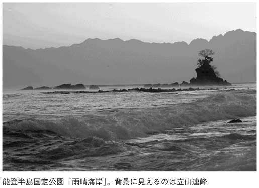
銭州（東京都神津島村）
魚が大量に獲れ、銭が稼げる岩礁「銭州」
伊豆諸島の線上、北緯三三度五七分、東経一三八度五〇分付近に存在する大礁から海面上に突き出た岩礁を、「銭州」と呼ぶ。さらに、水産関係者は岩礁群を含む大礁を総称して、銭州と呼ぶこともある。
このあたりは絶好の漁場とされ、カツオなどの回遊魚をはじめ、カサゴ、メジナなどの魚類が豊富だ。また、春にはマサバの産卵場となることでも知られている。
「銭州」という地名も、こうした事実と深く関わっている。記録によれば、銭州は一八七五（明治八）年に静岡県の稲葉半七氏によって発見された。それ以降、静岡県沿岸の漁船は、「あそこに行けばいくらでも魚が獲れて、銭が稼げる」というので、たくさん船を出すようになった。そこから、ここを銭州と呼ぶようになったとされている。
ちなみに、御前崎沖には「金州」という地名もあるが、これもまた、同様の理由で付けられた名前らしい。どちらも漁業関係者の素直な気持ちから誕生した地名といえよう。
合羽橋（東京都台東区）
いまは厨房道具がズラリ、かつては雨合羽がズラリ
この地にある「かっぱ橋通り」（別称「かっぱ橋道具街」）は、かつてはプロの料理人や飲食店関係者だけが、調理器具や食器、装飾・インテリア品などを求めに訪れる問屋街だった。ところが近年では、男性の料理への目覚めや、主婦の本格料理志向などで一般客が増えているようだ。
さらに、本物そっくりにつくられた食品サンプルの珍しさに、外国人観光客までもが足を運び、かっぱ橋通りはその名を高めていった。
通りの名が平仮名のために少々わかりにくいが、地区名は「合羽橋」だ。ただし、これはあくまで過去のこの町の様子を伝える名前であり、住所表示には使われていないが、その過去の町というのが、合羽という文字にあらわされている。じつは、その語源は「雨合羽」なのである。
江戸時代、現在の金竜小学校跡地あたりに、伊予新谷藩の下屋敷があった。この藩は伊予大洲藩の支藩だったために石高は低く、財政的には苦しかった。そこで、江戸屋敷詰の下級武士や足軽たちは、内職を迫られたのである。
じつは、その内職こそが雨合羽づくりであり、天気のよい日にはズラリと並べて外に干したという。そのため、この一帯が合羽橋と呼ばれるようになったというわけだ。
しかし、現在、かっぱ橋通りには河童の人形もディスプレイされていて、河童と無縁ではない地名のいわれも伝わっている。
かつて、この一帯は低地のうえ千束池があり、湿地帯だった。そこで、地元の商人・合羽屋喜八が掘り割りで隅田川に水を流そうと、私財をなげうって工事に着手した。ところが、この工事がなかなかはかどらないため、見かねた隅田川の河童たちが、夜ごとひそかに工事をして喜八を助けたという。
もちろんこれは、河童たちが喜八の善行に心を打たれたからなのだが、なんといっても、喜八の商売が雨合羽屋だったからという、まさに〝カッパ〟の伝説ということになっている。
吉里吉里（岩手県大町）
浜を歩くと砂が「キリキリ」と音を出すことから命名
岩手県上閉伊郡大町に、「吉里吉里」という場所がある。吉里のダブり書きではない。れっきとした地名なのである。
ここは船越湾南岸の漁村で、井上ひさし氏の小説『吉里吉里人』の舞台としても有名な土地柄である。
ところで、この地名の由来がやはり気になるが、白い砂浜がつづく海岸線があり、その昔、その砂浜を歩くと「キリキリッ、キリキリッ」と、美しい音をたてたことにちなんでいるらしい。これはアイヌ語である可能性が高く、「歩くとキリキリと音を出す浜」とか「白い砂浜」という意味がある。
昔は美しく鳴ったのでこんな名前が付いたのだろうが、美しい音を出すためには水が清く、砂の角がよく磨かれていて、石英の粒が揃っていることが条件だ。
しかし、最近では、汚れがひどくなったところもあるためにその条件が満たされず、残念ながらその音を聞くことはできないようだ。
八女（福岡県八女市）
山中に『日本書紀』の女神・八女津媛が住んでいた地
福岡県南部、福岡市から南へ約五〇キロに位置する八女市は、古代から栄え、八女丘陵には岩戸山古墳をはじめとする多くの古墳がある。江戸期には八女地方の物産集積地として繁栄し、政治・経済・文化の中心地となった。市の特産品には、手すき和紙・仏壇・提灯などの伝統工芸品や、茶・電照菊などの農産物がある。
この市の歴史をたどると、一八七一（明治四）年の廃藩置県により、久留米県を経て三潴県となり、さらに一八七六（明治九）年、福岡県に合併された。そして、一八九六（明治二十九）年には福島町を中心に八女郡が形成され、昭和に入って福島町は拡大発展するが、一九五四（昭和二十九）年に周辺の三か村と合併して現在の八女市が誕生した。
八女市の「八女」という地名は、日本最古の歴史書『日本書紀』にある「この地方に女神あり、その名を八女津媛といい、つねに山中にある」という一節に由来があるといわれている。
現在でも、八女津媛を祀った神社である「八女津媛神社」が矢部村にあり、境内はじつに神秘的な雰囲気に満ち満ちている。
化粧坂（神奈川県鎌倉市）
平家の首級を化粧し、首実検をした坂
南部だけが海に面し、三方を丘陵に囲まれているのが鎌倉市の中心部。源頼朝がこの地に幕府を置いたのは、地形が天然の要塞をなしていたからだ。後ろを守る三方の丘陵には、尾根を切り開いて道が通された。
尾根を切り開いた道の部分は「切通し」と呼ばれ、鎌倉への出入口とされたが、敵に攻められたときには重要な防御地点ともなる場所である。
鎌倉には、そんな切通しが全部で七か所あるが、「化粧坂」はそのうちの一つ。鶴岡八幡宮から、武蔵国（東京・埼玉）方面に向かう道の、扇ガ谷に設けられたものだ。現在のＪＲ横須賀線で鎌倉駅から北鎌倉駅に向かう途中の、進行方向左側あたりに位置している。
ところで、この「化粧坂」という名前の由来だが、討ち取った平家の武将の首実検をするために化粧をした場所だからと伝えられている。
当時の戦いでは、敵の武将を討ち取ると首をはねて大将に見せ、それが誰であるかの確認がおこなわれた。武将の格により、戦後の論功行賞のランクが決まったらしい。
そうした首実検の際には、たとえ敵とはいえ、見苦しいのは失礼だからということで、乱れた髪を整えるなどの化粧が施されていたのである。
馬渡島（佐賀県唐津市）
大陸からはじめて日本に馬がやってきた島
佐賀県唐津市の西の沖合に位置する離島「馬渡島」は、佐賀県でいちばん大きな島だ。ここは、縄文・弥生・古墳時代にはすでにかなり栄えていたという。奈良時代には、遣隋使や遣唐使などが大陸に渡る際の「風待ち」「潮待ち」の島として重要視されていた。
その後も、大陸交通の中継地として大きな役割を果たし、江戸後期には黒船の見張所も設置された。また、寛政年間（一七八九～一八〇一年）に長崎から七人のキリシタンが移住してきた歴史があることから、いまも島民の約半数はカトリック教徒だという。また、最近では釣りの名所としても知られている。
馬渡島という地名は、大陸からはじめて馬が渡ってきたのがこの島だったので、「馬渡る島」と命名されたことに由来しているといわれるが、いかにも大陸との関係が深い島らしい地名だ。実際この島は、中世から近世にかけて馬の放牧場として使われ、江戸時代には唐津藩の軍馬の放牧場だった。
だが、異説もある。源義家の甥にあたる中近江馬渡の庄人・本馬八郎義俊が、白河上皇院政の時代に、延暦寺僧兵の強訴を防ぎ、冤罪で流されてこの島に着いたことから、それまでの「斑島」を「馬渡島」に改めたのだというのだ。
なお、かつては「斑島」のほか、「摩多羅島」「間多良島」などとも記されていたようである。
白山島（山形県鶴岡市）
神が常在する聖地、「御島」と呼ばれた島
「白山島」と書いて「おしま」と読む。山形県鶴岡市、由良集落の西の海岸沖に浮かんでおり、本土とは橋で結ばれている小島である。この島は玄武岩によって形成されていて、高さ約七〇メートル、幅一三五メートル、周囲四三六メートルとなっている。古くから「御島」と呼ばれ、神が常在する聖地として崇められていたという。
ふつうは、白山島と書いて「おしま」とはなかなか読まないためか、実際には「はくさんじま」とも呼ばれていて、これでも一応通じるようだ。
ところでこの島、いまから約三〇〇〇万年ほど前に、火山の噴火によってできたといわれている。そのため、神の力によってつくられたというイメージがあるのではないだろうか。
島の頂には白山神社があり、白山権現として十一面観音を祀っている。また、「胎内くぐり」という場所は羽黒権現誕生の地であるとし、近くの八乙女の霊地との関連も示唆している。
豊かな海に囲まれている土地柄から、漁民の信仰も厚く、船絵馬などがよく奉納された。たとえば、当時の海中や海岸での拾い物、難破、破船などの慣習について由良村の惣百姓や水呑が「板札え相認」奉納し、確認しあったという記録が残っている（『白山権現江起誓記』伊藤文書より）。
間人（京都府京丹後市）
鬼退治に来た聖徳太子の弟が、生母と対座した地
日本海に突き出した丹後半島にある「間人」という場所は、あの聖徳太子と深い関わりをもつことで知られている。
聖徳太子の母である間人皇后は、仏教を崇拝する蘇我氏とそれに反対する物部氏とのあいだに争いが起きると、戦乱を逃れて避難した。その避難先がこの地で、それが間人という地名の由来だとされる。
だが、それならどうして間人は「はしひと」ではなく「たいざ」と読むのだろうか。これにはどうも、聖徳太子の弟による鬼退治の伝説が関係しているらしい。
聖徳太子の弟・麻呂子親王は、三匹の鬼が近隣の人々を苦しめていたため、これを退治することにした。そして、竹野川河口に鬼を追いつめ、天から大きな岩を下ろして封じ込めた。親王が鬼を封じ込めたとされる岩は、周囲一キロ、高さ約三〇メートルという巨大なもので、いまでも竹野川河口近くの海岸にある。
見事に鬼を退治した麻呂子親王は、その後、この地で生母と「対座」し、また、間人皇后は、それからしばらくしてこの地を「退座」したのだという。これらのことから、間人と書いて「たいざ」と読むようになったといわれる。
間人には漁港があり、連日セリ市でにぎわっている。とくに「間人ガニ」は捕獲量が少なく、地元の人でもそう簡単には口にできない幻のカニとされている。
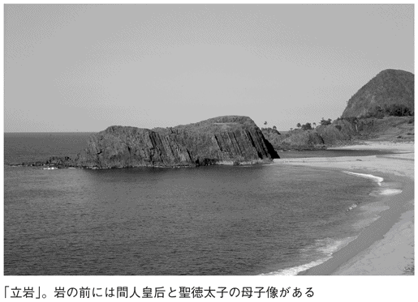
鶴脛（山形県上山市）
傷を負った鶴の足を癒した温泉地
ＪＲ奥羽本線かみのやま温泉駅から北西へ一・五キロほど行くと、「鶴脛」という町がある。江戸時代には上山城郭の中心地として栄え、明治のなかばに市町村制が施行されるとともに町名が定められた。
「鶴の脛」という不思議な町名は、その名のとおり、鶴に関係している。一四五八（長禄二）年、肥前国（佐賀県）の杵嶋郡から月秀という僧がこの地を訪れ、法界寺という空き寺に身を寄せて布教を開始した。
ある日、月秀が沼のほとりを歩いていると、足を痛めた鶴が岩場でうずくまっていた。
かわいそうに思った月秀は、何日も鶴を見守りつづけたという。
やがて、鶴は傷が癒えて大空に飛び立っていったのだが、鶴が飛び立った場所を見ると、沼の底から泡が立ち上って湯が湧き出ていた。
そして、その話が周囲に伝わり、月秀も加わって沼の干拓がおこなわれたあと、薬効の湯として誰でも入浴可能な湯屋が設けられたのである。
この湯は、鶴の足（脛）が治った湯であることから「鶴脛の湯」と命名され、それがのちに、この町の名となったのである。
なお現在、湯町にある「鶴の休石」は、かつて鶴が休息した場所だといわれ、そこが温泉発祥の地とされている。
鶴脛の湯は、いまでは「かみのやま温泉」として親しまれている。上山市内には地区ごとに数多くの温泉があり、地元の人々はもちろん、観光客も全国各地からたくさん訪れている。
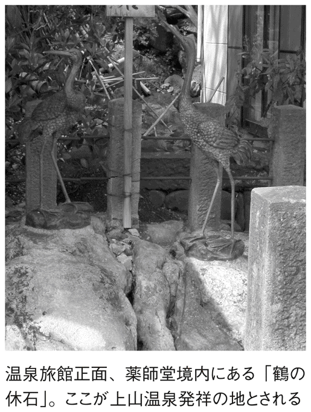
七宝町（愛知県海部郡）
工芸品が町名になったという珍しいパターン
愛知県西部、名古屋市の西に接する海部郡にあるのが七宝町である。
町名になっている「七宝」とは、いわずもがな、工芸品を意味しており、当地での生産が盛んだったことから付いた地名である。
しかし、焼物や織物など、生産地名が付いたものが特産品名になっているケースは多いが、その逆という例は珍しい。
これは、企業城下町でもある豊田市が、会社名（トヨタ自動車）をそのまま自治体名にしたというエピソードをもつ、愛知県ならではの命名かもしれない。
ところで、その七宝焼は、原形が古代エジプトで考案されたもので、インドから中国、朝鮮半島を経て、わが国に伝来した技法だとされる。
ただし、かつて遠島村と呼ばれたこの一帯で生産されているのは「尾張七宝」という特産品として扱われ、十九世紀なかばから伝承されている技術だ。これは、オランダ船で運ばれてきた七宝焼をもとに、研究されたものだという。
この七宝焼に関する碑は、町内の二か所に建てられており、一つは技術開発に功績のあった人たちを顕彰するもの。そしてもう一つは、「七宝焼原産地」と刻まれた道標で、一八九五（明治二十八）年の建立というが、この道標にはローマ字表記が添えられている。これは、当時すでに外国人が買い付けに訪れるほど名を知られた工芸品だったことを、うかがわせるものである。
百足屋町（京都府京都市）
「お金」は「お足」。商売繁盛を願った屋号に由来
京都市内にある「百足屋町」は、南北に走る新町通を挟む両側の地区と、東西に走る夷川通を挟む両側の地区の二か所ある。どちらの名前も、十七世紀初頭にはすでに存在していた地名だったことがわかっている。
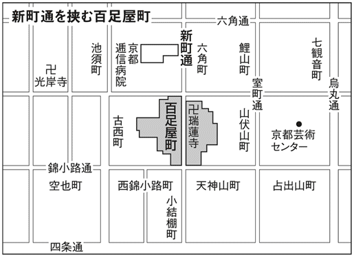
一五七一（元亀二）年の史料には、新町通の店のことか夷川通の店のことかは不明ながら、「むかでや」という名前が出ていることから、少なくとも一軒は、この時代に商売をはじめていたことになる。
新町通のほうは、明治末期に著された『京都坊目誌』という書物に名前の由来が詳細に記されている。その記述によれば、新町通にあった「百足屋」という豪商の名にちなんだものらしい。
ただ、この書物が著された時代にはすでに店はなく、その百足屋の豪商ぶりをかつての記録から婉曲的に表現しているものと思われる。
百足屋は、祇園祭に際して毎年、町内に山車を立てた。しかも、その山車は豪華な織物で装飾された、秀逸なつくりの観音像を安置していたという。新町通は呉服商の多かった一帯だから、百足屋が商品を使って装飾したにしても、かなりの散財だったであろう。しかも毎年、百足屋一軒でその費用をまかなったのだとすれば、底知れぬ財力だったはずだ。
それにしても、ムカデという虫の名が屋号になり、しかも二軒もあったというのは、なにか縁起でもあるのかと思ったら、じつはただのシャレらしい。
商人がお金のことを符丁で「お足」というのは、足が生えて逃げていくからではなく、客が足繁く訪れると商売が繁盛してお金が入ってくるという意味からだ。ムカデは「足が百本ある虫」というのだから、客足も増えるだろうということから、屋号に選んだようである。
八街（千葉県八街市）
この地の政府救民事業の順番は八番目だった
千葉県八街市は、江戸時代には市の大部分が「佐倉七牧」と呼ばれていて、幕府の野馬の放牧地であった。その後は農業を中心に発展し、落花生の生産地として全国的に知られるようになった。市のイメージキャラクターである「ピーちゃん」「ナッちゃん」も、落花生をモデルにしたものである。
また、ここはスイカの産地としても有名で、そのほかの生鮮野菜とともに、首都圏をはじめ、全国に出荷されている。そして、近年は首都圏のベッドタウンとしての機能も果たし、人口は平成に入ってから急増している。
八街市は、一九九二（平成四）年に千葉県下三〇番目の市として誕生した。しかし「八街」という地名は、一八七二（明治五）年に、すでに命名されていた。
一八六八（明治元）年、明治新政府は救民対策事業として、それまで幕府の放牧地だった小金・佐倉両牧の開墾を決定した。その際、佐倉牧内にある柳沢牧が、小金・佐倉両牧の開墾がはじめられてから八番目に開墾がおこなわれたということから、「八街」の地名が付けられたのだ。つまり、八番目の街だから八街というわけである。
そして、のちに市制がしかれるようになっても、この地名がそのまま受け継がれて、現在に至っている。
左沢（山形県大江町）
「あてら」は長岡山から見て「あちら」の沢
山形県のほぼ中央、村山平野の西部に位置する大江町は、豊かな自然に恵まれた町だ。町の西側は大朝日岳、小朝日岳などの高山に囲まれた山岳地帯で、東に向かうにつれて標高が下がり、集落や田畑などが点在している。
この大江町には、「左沢」というユニークな名前の地区がある。この地名の由来については諸説あるが、よく知られているのは「あちらの沢」を語源とするもの。かつて寒河江荘の領主だった大江氏が、近郊の長岡山に登って西のほうを眺めたときに、平野山の左手に見える山谷を「あちらの沢」と呼んだことから、その「あちら」が、やがて「あてら」になったというのだ。
また、大江町と朝日町の境界にある日光山から、太陽の昇るほうに向かって礼拝した際に、左手に見える沢を「左沢」と呼び、右手の朝日町方面を「右沢」と呼んだことが由来だとする説もある。
さらに、最上川の左を流れる月布川の左岸に開けた土地であることから、「左」という字を付けたとする説もある。
それぞれの説に納得できる要素があるがゆえ、どれが真説なのかは断定できないようだ。
宿毛（高知県宿毛市）
古代の人々が「すくも」と呼んでいたのは葦のこと
四国の西南端に位置する高知県宿毛市では、温暖な気候を活かしてオクラ、ブロッコリー、ミョウガ、小ネギなどの農業が盛んだ。
また、古くからの主要産業である漁業では、まき網や敷き網などのさまざまな漁法が湾内でみられる。養殖業も盛んで、ブリ、タイ、カンパチなどが水揚げされている。
現在の宿毛市は、一九五四（昭和二十九）年の町村合併の施行にともなって、宿毛、小筑紫、平田、山奈、橋上、沖の島の六つの町村が合併して誕生した。
ところで、この宿毛市の「宿毛」という地名は、この地のかつての地形に由来している。
いまから三〇〇〇～四〇〇〇年前の宿毛の中心地は遠浅の海で、そのため満潮時には海水が押し寄せてくるほどの大湿原だった。そのため、一面に葦が生い茂っていたのだ。
古代の人々は、枯れた葦のことを「すくも」と呼んでいたらしく、このことは、当時の和歌などにも詠まれている。これが、地名の由来だというのだ。
宿毛の町はずれには、国の史跡に指定されている宿毛貝塚があって、縄文時代の頃からすでに文化が存在していたことがわかっている。葦の生い茂る時代にも、人々はこの地でたくましく生きていたのであろう。
動橋（石川県加賀市）
揺れ動いて、渡るのにひと苦労の橋
石川県加賀市の東部に、江戸時代に北陸道の宿場として栄えた場所、旧動橋町がある。ここはかつて、江沼郡における農産物などの大集散地として栄え、たいへんなにぎわいを見せていた。
その後、一八八九（明治二十二）年になると、動橋村、梶井村、中島村、合河村、八日市村が合併して、新しい動橋村が誕生する。一八九七（明治三十）年には国鉄北陸本線が開通し、動橋駅が開業した。その後、動橋～山代間に馬車鉄道が開通。大正に入ると温泉電軌鉄道が開業するなど、交通の要衝として発展していく。一九四七（昭和二十二）年には、町制が施行されて動橋町となったが、一九五八（昭和三十三）年にほかの町村と合併し、加賀市が誕生した。
ところで、その「動橋」という地名だが、昔、ここを流れる動橋川に架けられていた橋が、人が渡るたびに大きく揺れたことに由来するとされる。京都の聖護院道興準后の『廻国雑記』に、一四八六（文明十八）年、「しきち、いみなみ打過ぎて、いぶり橋とて、危くいぶせき橋にかかりぬ。行き暮れてふめばあやふきいぶり橋、命かけたる波の上かな」と記されている。「いぶる」とは「動く」とか「動かす」「揺れる」「揺する」という方言だ（この歌は現在、動橋大橋の歌碑として建てられている）。
また、『加越能大路水経』という地元の古い書物のなかでも、動橋川には古くから一本橋が架けられていて、通行人が渡るたびに大きく揺れ、そのために、「いぶり橋」と呼ばれるようになったとされている。
このように、古くから揺れ動く橋の存在が知られており、藩政後期の『越登加三州誌』という古書によれば、動橋村は、かつては「振り橋」「揺橋」「不忍橋」「伊婦里橋」などの、さまざまな字があてられていたようだ。
鉄輪（大分県別府市）
鉄棒を地中に埋め、いたずらをした源為朝
大分県別府市は、九州の北東部、瀬戸内海に接する大分県東海岸のほぼ中央に位置している。南部は高崎山をへだてて大分市と隣接し、北部は国東半島と接する。また、西部は阿蘇国立公園に属する由布岳と鶴見岳を中心にして、南北に半円に連なる鐘状火山に囲まれ、その裾野は別府湾につづいている。
そして別府といえば、なんといっても有名なのが温泉だ。市内には、古くから「別府八湯」と呼ばれる温泉群が点在し、地元民はもちろん、全国各地から訪れる大勢の観光客にも親しまれている。
この別府温泉について記されている最古の書物は『豊後国風土記』で、そのなかに、赤湯泉、玖倍理湯井、河直山などの地名がみられる。これらの河直一帯が、現在の鉄輪地区ではないかといわれている。
ところで、この鉄輪地区の「鉄輪」という地名の由来だが、かつて杵築にすむ「生地の玄番」という豪族にあるとされる。彼は温泉が好きで、一日に一度は必ず入湯していた。その際には、大きな鉄棒を杖代わりにもち歩いていたのだが、ある日、彼が入湯中に通りかかった源為朝が、悪ふざけで鉄棒を地中に埋めてしまったという。
湯から上がった玄番は、鉄棒がないのに気付いて探したものの、なかなか見つからず、夕方になってようやく鉄棒を見つける。そして、「これは為朝のしわざに違いない！」と、大いに腹を立てて鉄棒を引き抜いたところ、抜けた穴から新しい湯が噴き出したという。この言い伝えから、鉄輪という地名が誕生したそうだ。
玄番も入ったという鉄輪温泉は、鎌倉時代に一遍上人が旅の途中で立ち寄り、念仏を唱えるなどして猛り狂う大地獄を鎮め、「蒸し風呂」「熱の湯」「渋の湯」などをつくって、衆生済度の温泉保養地としたことが起源となったといわれる。
一口（京都府久御山町）
天然痘を治すために使われた、池にまつわる「一口」の起源
東京都千代田区には、「一口坂」という坂道がある。そこはかつて、「いもあらいざか」と呼ばれていたが、現在は「ひとくちざか」という、文字どおりの読み方に変わっている。これについては４章でも紹介するが、京都にはいまでも、「いもあらい」という読み方をする地名が存在している。
京都府南部に位置する久世郡久御山町は、「承久の乱」や「元弘の変」の戦場となったことでも知られる町。「いもあらい」と読む「一口」は、この町の北西部にある地区だ。
中世の軍記物『平家物語』には、源義経が「淀、一口に向かうべきか、河内路に向かうべきか、水の落足を待つべきか、いかにせん」と発言したことが記されているが、一口が戦略上の要地だったということはもちろん、歴史的にも意義が深い場所であったことを、うかがい知ることができる。
それでは、そもそもなぜ、この地が「一口」、それも「いもあらい」という不可解な読み方をするようになったのかというと、諸説あるなかの一つではあるが、次のようなものがある。
かつてこの地に存在した「巨椋池」のほとりにあった小さな村は、三方が池に面していたため、村の出入口は、必然的に一か所のみだった。つまり、それが「一口」の起源となったという。また、その池は、古くは「いも」と呼ばれていた「疱瘡（天然痘）」を洗う（治す）ために使われた池だったことから、「疱瘡を洗う」という言い回しが、「いもあらい」となったのだ。
そしていつの頃からか、その村は、「一口」と書いただけで「いもあらい」と呼ばれるようになり、それがそのまま、地名として定着したというわけだ。
なお、一口の誕生に大きく関わっていた巨椋池は、一九三五（昭和十）年から一九四一（昭和十六）年にかけておこなわれた大規模な干拓事業によって、農業用地に姿を変えており、かつては淡水漁業も盛んだったというその池の姿を見ることは、残念ながらもうできなくなっている。
大歩危（徳島県三好市）
「歩」くのに、とても「危」険な谷だった
四国・徳島県を流れる吉野川中流に位置する渓谷が、「大歩危」である。ここは景勝地として名高い場所で、その変化に富んだ景観を遊覧船から楽しむ観光客も多い。また、夏には多くのラフティング愛好者も訪れる。
数キロ下流の「小歩危」とともに、大歩危・小歩危としてひと括りにされることも多いようだ。
一般に、大歩危は「大股で急いで歩くと危険」なために、そう呼ばれるようになったといわれる。
同じく小歩危は「小股でゆっくり歩いても危険」なため、そう呼ばれるようになったという。
ちょっと強引な解釈にも思えるが、大歩危が、大股で急いで歩くと危険なほど険しい渓谷なのはたしかであろう。だとすれば、十分に納得できる由来といえるかもしれない。
ところで、「大歩危」の「歩危」という漢字の語源は、山の崩れ、崩壊地を意味する古語の「ほき」「ほけ」に由来すると考えられている。
そこで、「歩危」という漢字をあてたのかもしれない。
ただし、昔から大歩危という漢字をあてていたわけではなく、かつては「大嶂」という字が用いられていたようだ。また、明治時代の地租改正の際には、「大歩怪」の字をあてていたという記録も残っている。
狼森（青森県弘前市）
東北地方に「狼」の字の付く地名が多いワケ
青森県には弘前市内の「狼森」のほか、狼倉や狼沢などがあり、秋田県には青森にあるものと同じ狼沢と書いて「おいぬのさわ」「おいさわ」と読ませるところが二か所、岩手県にも同じ文字で「おいぬさわ」など、「狼」の字の付く地名がみられる。また、宮城県にも狼坂、狼塚といった場所があるようだ。
ここに挙げた狼の字を使った東北各県の地名はほんの一部でしかなく、このほかにも探せば数多く見つかる。ただ、たいていの場所は、狼の字を「おいぬ」「おいの」「おい」と読んでいる。これは、かつてニホンオオカミのことを「お犬」と呼んでいたことの名残の呼称である。
岩手県遠野地方に伝わる伝承をまとめた柳田國男氏の『遠野物語』には、精霊やモノノケとともに「御犬」がたびたび登場するが、これはニホンオオカミのことを指している。
これらのことは、遠野地方をはじめ、東北地方のあちこちにオオカミが生息していたことを裏付けるものといえよう。
古代の信仰では、動物も精霊と並んで聖なるものとして扱われることが多かった。オオカミもその対象であり、出没する場所のあたりを畏敬の念を込めて「おいぬ」の字の付く地名にしたようだ。
そして、狼につづく字に、森や沢のほかにも久保（窪）、淵といった、いかにもオオカミにふさわしい場所を意味する字が使われている点も、オオカミの出没場所を示していることの裏付けといえる。
小千谷（新潟県小千谷市）
アイヌ語の砦、柵囲い「チャシ」が地名の起源
「小千谷」は、信濃川が山間部から平野部へ流れ出るあたりに開けた町。十世紀なかば頃に完成した『和名抄』に、越後魚沼郡にある郷の一つとして紹介されている歴史ある場所だ。
ただし、そのときの表記は、まだ小千谷ではなく「千屋」であった。それが、いつの頃からか「千谷」と書かれるようになっていったのだが、土地の呼び名としては「ちゃ」と発音していた。土地の名前は文字が伝わる以前からあったわけで、その名前に音の合う漢字をあてはめた万葉仮名による表記である。
この「ちゃ」という呼び名は、アイヌ語で砦や柵囲いを意味する「チャシ」が語源ともいわれる。発音がチャにアクセントがあったため、やがてシの音が消えたのだ。
越後にアイヌ語の砦という地名が残ったのは、大和政権の東征で、この一帯に蝦夷とのせめぎ合いがつづいていたことの証明ともいえる。
政権が古代の近畿から関東に移ると、千谷はその立地条件から信濃川を使った船運の拠点となって発展をはじめる。するとこの地は戸数が増え、川の両岸に集落ができて、「千谷郷」の支村を形成した。律令制の時代から、一つの郷（村のような区画として各戸をまとめた集落）の戸数を限定する習慣が根付いていたためである。
それが、その後に小千谷と呼ばれる集落であり、やがて本家の千谷に代わって中心地となっていった。小千谷はその後、明治維新で村から町へと昇格し、第二次世界大戦後は市へと発展した。そして、名前の起源になった千谷は、いまでは小千谷市の一地区名となっている。
飾磨（兵庫県姫路市）
「荘鹿も鳴くかも」と言ったから「しかま」
姫路市内には、「飾磨」と書いて「しかま」と読む地名がある。難読な地名ではあるが、きちんとした行政区画上の町名で、その伝統は古い。
すでに、『万葉集』に集録されている歌に「思賀麻江」と詠まれているのがこの海岸のことであり、平安時代には「港」を意味する「津」が付いて、飾磨津として港が栄えていたことがわかる。
それもそのはず、『播磨国風土記』によれば、大三間津日子命が当地に館を建設した際、大鹿の鳴くのを聞いて「荘鹿も鳴くかも」と言ったことが地名の由来とされている。
『播州円教寺記』には、一〇〇二（長保四）年、花山法皇が書写山参詣のために飾磨津で下船したことが記録されている。それだけ整備の行き届いた港だったのだ。
かの豊臣秀吉も、羽柴を名乗っていた時期に、四国からの船の積み荷の引き渡しに飾磨津を指定している。管理もよかったのだろう。
江戸時代に入ると、姫路城下と新開削の運河による水運が通じて、藩の外港の役を担ったのも飾磨津だった。
こうして、海岸沿いの地形を活かして発展した飾磨の歴史を見てみると、神話時代からの地名よりも、『古代地名語源辞典』（東京堂出版）の記述のほうに信憑性が出てくる。
それによると、地名は地形から付けられることも多いが、この飾磨も、砂洲や砂丘のある場所を「州処」といったのが訛ったという説もある。
「すか」の発音が「しか」に転訛したのならば、「しか」と「鹿」の同音を起源とする説にも納得がいく。
六合村（群馬県吾妻郡）
六つの大字が合併し、『日本書紀』にちなんで「くに」と読んだ
「六合村」と書いて「くにむら」と読む場所は、地名のいわれが壮大なら、その生い立ちも壮大だ。なんといっても、天下の草津温泉の揺籃期、その卵を温めたともいえる温床の役を果たしているからだ。
一八八九（明治二十二）年の町村制施行の際、この一帯の大字「小雨」「生須」「入山」「太子」「日影」「赤岩」「前口」「草津」の八集落で、草津村が誕生した。
このうち草津は、すでに温泉地として名高かったため、一九〇〇（明治三十三）年、前口とともに草津村から離れ、本来の地名の草津で町制をしくことになる。
それゆえ残された六集落は、新しい名前を考えなければならなくなった。そのとき参考にしたのが、日本の国づくりを記録した『日本書紀』だったという。
『日本書紀』では、神武天皇の即位を記す直前の段に、「兼六合以開都」の記述があった。これは「くにのうちをかねて、もってみやこをひらく」と読む。
ここから「六合」というのが、「くにのうち」ということがわかる。その意味するところは、東西南北の四方に天と地を合わせた六つが、国のすべて、支配の範囲ということだ。
たまたま旧大字の六集落でつくる村だから数が合う......というので、「六合」と書いて「くに」と読む村名が決められたというわけだ。
池鯉鮒宿（愛知県知立市）
コイやフナがたくさんいた、殺生禁断の知立神社の池
「池鯉鮒」とは、知立市の前身である江戸時代の宿場名の表記だ。江戸時代に入って街道が整備されると、この地はもっとも重要な道路・東海道の三九番目の宿に定められた。
それを機に、それまで「知立・智立」と書いていた地名を池鯉鮒に改めたのだ。その頃は旧仮名遣いだから、「ちりゅう」という地名も平仮名で書けば「ちりふ」となる。そのまま音読みで、あてはまる漢字を選んだというわけだ。
ただ、音が合えばどんな漢字でもよかったわけではない。「鯉」や「鮒」といった淡水魚の名前、そして、その魚が泳ぐ「池」が選ばれたところに意味がある。
この地には大切なものが二つあり、それが知立神社と御手洗池だった。知立神社は、いわば近隣集落も含めた土地の氏神であり、御手洗池はご神水。祭りのときに体を清めたり神輿を洗ったりするほか、日照りの夏は雨乞い神事もおこなった。
この御手洗池は、生き物を殺してはならないという殺生禁止の池で、コイやフナがいても、釣ったり、ましてや食べたりすることはけっしてなかった。その想いを込めて、宿場としての役割がまっとうできるよう、池鯉鮒を宿場名としたのである。
池鯉鮒の宿場としての指定は一六〇一（慶長六）年のことで、三年後には道路の改修工事や並木の整備もおこなわれた。そのときの松はいまでも一七〇本が残っており、知立市内に五〇〇メートルにわたって往年の東海道の姿をうかがわせている。
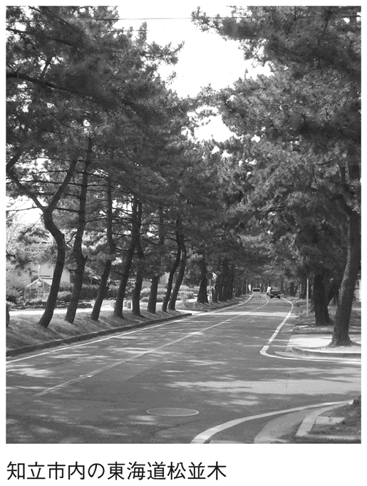
十八女（徳島県阿南市）
坂理の地で、女ざかりの十八で亡くなった姫君
徳島県の阿南市に「十八女」という地名の場所がある。これで「さかり」と読むので、「なるほど、女も十八歳くらいがさかりといえばさかりだからね......」と思う人もいるかもしれない。それに、昔は人生五十年だったわけだから、十八といえば、いまの二十四、五あたり。たしかに、女ざかりだと納得してしまうのも無理はないが、それはどうやら見当はずれらしい。
じつは、太竜寺という札所がある山一帯は、古くは「坂里」と呼ばれていた。
伝説によれば、この地には若き女帝・安徳天皇が知人を通じて都落ちしてきた。そこで、代々の庄屋で、村の中央に大きな家をもっていた湯浅家が、奥の間に一室をしつらえて、そこを「行かずの間」とし、姫（安徳天皇）をかくまった。ところがその姫は、十八という若さでこの世を去ってしまう。
よって、この伝説から、十八女という字を使って地名をあらわすようになったのだという。一説には、湯浅家の人々が姫をかくまいつつも、八歳のときから十八歳までの十年間をわが子のように育てたという話もある。それならば、その一族の悲しみやいかばかりだったろうか......。
しかし、安徳天皇は源平合戦の壇ノ浦の戦いで、わずか七歳で亡くなったとされているし、そもそもこの伝説では、安徳天皇がじつは、男宮として即位させられていた女帝だったという説を基にしているので、伝説自体の信憑性には疑問が残る。ただ、この「十八女」という地名が、少なくとも「女ざかり」などという色っぽい意味で付けられたのではなく、十八歳という若さで亡くなったお姫様をしのんで付けられたということはたしかなようだ。
セントレア（愛知県常滑市）
日本なのに、なぜか外国のような地名になっているワケ
ひと頃世間を騒がせた、愛知県知多半島先端にある二つの町の合併問題。当初、合併後の新市名は「南セントレア市」だった。しかし、この名前はいったんは議会で承認されたものの、あまりにも住民の反発が強く、マスコミで取り上げられたあとは日本中からも非難ごうごうで、そもそもの合併話までなくなってしまったというドタバタ劇は、いまだ記憶に新しい。
ところがあの話、すっかり立ち消えになったかと思ったら、なんと「セントレア」という地名はしっかりと存在していたのだ。
要は、幻の南セントレア市の語源になった、中部国際空港・通称セントレア空港が語源になって、その空港所在地の名前が、なんと「セントレア」なのである。
正式には、愛知県常滑市セントレア一丁目一番地が中部国際空港の住所である。区画ごとに、セントレア五丁目まであるという。
ところで、この「セントレア」にももちろん語源があって、全国の一般公募で選ばれた、れっきとした愛称である。これは、中部をあらわす「ＣＥＮＴＲＡＬ」と、空港や航空のイメージの「ＡＩＲ」をあわせて「セントレア」とした造語である。
ただ、語源を知るとたしかにもっともな地名なのだが、人々に受け入れてもらいやすくするためには、むしろ「セントラル・エア」のほうがわかりやすかったのではという気がしないでもない。
洗足（東京都目黒区）
洗足の「足」とは、なんと日 の足だった
の足だった
東京都目黒区にある「洗足」は、大正初期までは雑木林と湿地帯が広がる未開の地だったが、やがて宅地造成が進められ、一九二二（大正十一）年頃に今日の町並みの原形ができあがったとされている。
そして、その後は高級住宅地としても知られるようになり、今日に至っている。
この洗足は、お隣の大田区南千束・北千束とともに、中世の頃には「荏原郡千束郷」と呼ばれていた。
「千束」とは、千束分の稲が貢祖として納められていたことから名付けられた地名だといわれる。
そして、この千束の一部が「洗足」という地名に変化したわけだが、これにはある有名な伝説が関わっている。
鎌倉時代、日宗の開祖である日は、池上に向かう途中、ある大池で足を洗ったという。この噂はどんどん広まり、その大池の知名度も徐々に高まっていった。
そして、それまで「千束の大池」と呼ばれていたその池は、やがて「洗足池」と呼ばれるようになったのである。
現在、この洗足池は大田区内にあり、近隣の人々から親しまれている。ところが、なぜか洗足池のある大田区の地名は「千束」のまま（南千束）で、「洗足」に変わったのは洗足池のない目黒区内の地名だというのだから、なんとも腑に落ちないような話ではある。
左京区・右京区（京都府京都市）
京都の街は、なぜ右が「左京区」で左が「右京区」なのか？
碁盤の目のようにきれいに整えられた京都の市街地は、かつての平安京の街並みを基盤としたものである。
ところが、その京都市街地の地図を見てみると、ちょっと奇妙なことに気付く。市の西部、つまり、向かって左に「右京区」があり、向かって右の東部に「左京区」があるのだ。これは本当なら逆ではないだろうか。
この理由は、平安京があった時代にさかのぼる。平安京は、隋の都・洛陽と唐の都・長安を手本にして造営された。その際、古代中国で「天子は南面す」、つまり、君主は南を向いて政治をおこなうという思想があったことから、それをそのまま取り入れ、天皇がおわす大内裏は平安京の中央北部に設けられた。
その大内裏において、天皇が南を向いて政治をおこなったときに、天皇から見て左手を「左京」、右手を「右京」としたのである。その境目は、大内裏の朱雀門からまっすぐ南に走る朱雀大路と定められた。
そのため、平安京の西、つまり向かって左が右京、東、つまり向かって右が左京となり、それが現在の区名にも受け継がれているというわけだ。
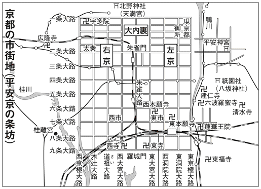
奈良（奈良県奈良市）
「ナラ」とはなんと、朝鮮語で「国」を意味する言葉
奈良市は、奈良県北部にある県庁所在地で、八世紀のはじめに建設された平城京に起源をもつ都市だ。その後、東大寺、興福寺、春日大社などの社寺が繁栄し、門前町も発達して、室町末期頃までに旧市街地の原形ができあがった。
近世には、社寺への参拝を兼ねた観光客が増加してさまざまな産業も発達し、明治以降は県庁所在地として奈良県の政治・経済・文化の中枢を担うとともに、観光都市としても発展を遂げた。
ところで、地名の「奈良」の由来だが、これは「国」を意味する朝鮮語「ナラ」にあるとされる。大陸から渡ってきた人々がこの地にすんだことから、そう呼ばれるようになったのではないかというのだ。かつて、ナラと呼ばれる地域は全国にあり、その多くは渡来人に関連していたとみられている。
古来、このナラにはさまざまな字があてられてきたが、じつは、平城京もナラに「平城」の文字をあてて、漢風に表現したものである。実際は、「平」一文字でナラと読めるのだが、そこに「城」を加えたのは、都城の意味を加えたからだと推測されている。また、このほかにも、「寧楽」「諾楽」などの文字があてられていたようだ。
平城京が都でなくなったあとの奈良は、王侯貴族によって南京、南都などと呼ばれた。しかし、やがて奈良が正式な呼称となって、南京、南都は雅称となったのである。
日光（栃木県日光市）
「二荒」を弘法大師が「にこう」と読んで改名
栃木県日光市は、二荒山神社、東照宮、輪王寺の建造物とその境内地からなる「日光の社寺」が世界遺産に登録されるなど、日本が世界に誇る観光地として発展してきた。国宝、重要文化財の建造物とそれをとりまく自然環境が、いまもなお、数多くの観光客を魅了している。
ところで、この「日光」という地名の由来には諸説あるが、なかでもよく知られているのが弘法大師空海にまつわるエピソードだ。もともとこの地域は「二荒」という名前で呼ばれていたが、あるとき空海が二荒山（男体山）に登った際に、「二荒の文字がよくない」というのでこれを「にこう」と音読し、それに「日光」の字をあてて改名したとされる。
ちなみに、もともとの「二荒」という地名の起源がどこにあるのかといえば、これについてもいくつかの説がある。
観音菩薩の浄土を「補陀洛山」ということから、「二荒山」と呼ばれるようになったとする説。日光の山に熊笹が多いことから、アイヌ語で熊笹をあらわす「フトラ」が変化したとする説。男体山と女峰山の男女二神があらわれたので「ふたあらわれの山」となり、それが二荒山になったとする説。男体山麓の屏風岩に大きな洞穴があり、この穴に風の神と雷獣がすんでいて、雷を起こしたり豪雨を降らせたりして、日光一帯を荒らしたことから二荒山という名ができたとする説。このように、じつに多くの説が存在しているのである。
なお、これら以外にもいくつかの説があるが、真相はいまだに確定していないというのが実情のようだ。
日立（茨城県日立市）
じつは、企業名にちなんだわけではなかった「日立」
茨城県北部にある日立市は、かつては県庁所在地である水戸市よりも人口の多い、茨城県下第一の都市だった。それというのも、この市は、その名のとおり、世界的な企業である日立製作所とその系列会社が大きな地位を占める、いわゆる「企業城下町」であるためだ。
そんな土地柄だけに、「日立」という地名は、当然、日立の企業名から付けられたものかと思いきや、じつはそうではない。
一八八九（明治二十二）年に市制・町村制がしかれた際に、多賀郡宮田村と滑川村が合併することになった。しかし、このときに新しい村名をどうするかでもめ、紆余曲折を経て「日立村」という名前に決定した。茨城のあたりはかつて「常陸国」と呼ばれており、それにちなんで名付けられたのである。
ただし、宮田村や滑川村のあたりは常陸国の中心ではない。それなのに日立村と決まったのは、一説には、かつて水戸藩主の徳川光圀がこの地の山を訪れ、朝日が昇るのを眺めて、「日の立ち昇るところ領内一」と言った故事にちなんだともいわれる。
なお、日立市は、二〇〇四（平成十六）年十一月に十王町と合併して規模が拡大。二〇〇七（平成十九）年四月現在の人口は約一九万六五〇〇人となっている。
秋葉原（東京都台東区）
明治二年の大火のあと、火除けの「秋葉大権現」を祀った
日本有数の電気街として発展してきた東京・秋葉原。第二次世界大戦後にできた闇市がルーツとされる電気街に加え、最近はアニメ・ゲームマニアなどの、いわゆる「アキバ系」と呼ばれる人々が多く集まる街としても知られている。また、つくばエクスプレスの開業や大型家電店の開店などで、従来にない新しい客層も増えているようだ。
そんな「秋葉原」という地名は、一八六九（明治二）年の相生町（千代田区神田相生町）の大火ののち、遠州（静岡県）から火除けの「秋葉大権現」を勧請して、鎮火神社として祀ったことに由来するとされている。
勧請された当時は「鎮火原」と呼ばれていたが、秋葉神社と改められたのをきっかけに、その後、秋葉原と呼ばれるようになった。ただし、その頃の読み方は「あきはばら」ではなく、「あきばはら」または「あきばっぱら」だったという。
その後、一八九〇（明治二十三）年に上野から鉄道が延長されて、新駅が開設されることになった。そこで、駅名は当時すでに使われていた地名の「秋葉原」になり、読み方も現在と同じ「あきはばら」となったため、この地名が一般に広まったのである。
なお、地名の由来となった秋葉神社は、その後、台東区の入谷に移転している。
小岩井（岩手県雫石町・滝沢村）
ヨーロッパ農法をとり入れた三人の苗字の最初の一文字
岩手県の雫石町と滝沢村にまたがる小岩井地区は、小岩井農場のちょうど玄関口の場所にあたるが、「小岩井」という地名は、この農場と深い関わりをもっている。
小岩井農場は岩手山の南麓にあり、約三〇〇〇ヘクタールの広さを誇る大農場である。この農場がある場所は、かつて、火山灰に覆われた荒地だった。しかし、明治時代に東北本線が盛岡まで開通するにあたり、鉄道庁長官の井上勝氏がこの地を訪れ、荒地を開墾してヨーロッパ農法に基づいた本格的な農場を建設したいと考えた。
そのとき、これに賛同したのが日本鉄道会社副社長の小野義真氏と、三菱社社長の岩崎弥之助氏である。三人は協力して準備を進め、一八九一（明治二十四）年に開墾をはじめた。土壌を改良し、湿地の暗渠排水に取り組み、防風・防雪林をつくってスギ・アカマツ・カラマツを植林し、乳牛を輸入して繁殖と育成に取り組んだのである。
こうして誕生した農場には、創設者となった三人の苗字の最初の一文字ずつを取って、「小岩井」という名前が付けられたのである。
現在、小岩井農場では生産農場を原点に、農林畜産関連の七つの複合的事業を展開している。全国的に知名度の高い牧場になったことにより、正式名称が「風林」「大清水」というこの地区は、いまでは小岩井という通称がすっかり定着しているようだ。
下馬（東京都世田谷区）
下馬の「馬」は、沢にはまって死んだ源頼朝の愛馬
東京都世田谷区の「下馬」は、東急東横線の祐天寺駅と同田園都市線の三軒茶屋駅とのあいだにある地域で、昭和女子大学をはじめ、大学や高校などが集まった文教地区として知られている。また、世田谷公園沿いを通る三宿通りには、おしゃれなカフェやレストランなどが並んでいて、テレビなどでも盛んに取り上げられるスポットだ。
ところで、その「下馬」という地名だが、じつはこれ、源頼朝に関係がある。一一八九（文治五）年、のちに鎌倉幕府を開いた頼朝は、奥州征伐へ向かう途中でこの付近を通りかかった。ところが、沢でがけ崩れが起き、愛馬が沢の深みにはまって死んでしまった。そこで頼朝は、「これからこの沢を渡るときは、馬を引いて渡れ」と命じたという。この沢は、それにちなんで「馬引沢」と呼ばれるようになったとされる。
やがて江戸中期になると、この一帯は「上馬引沢」「野沢」「下馬引沢」の三つの村に分かれた。そして、現在の下馬のあたりは「下馬引沢村」となったが、一九三二（昭和七）年に世田谷区ができた際に、地名の後ろの二文字の「引沢」が消えて、前の二文字「下馬」だけが残ったのである。
現在、祐天寺駅から徒歩で約十分ほどのところには、かの沢で死んだ頼朝の馬を埋葬したといわれる芦毛塚があり、当時の面影をしのばせている。
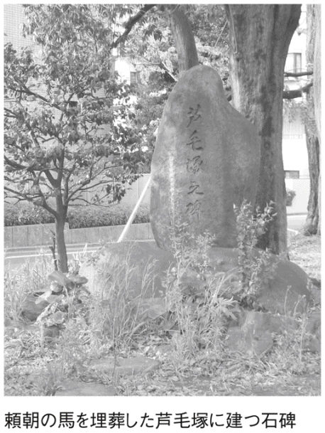
保土ヶ谷（神奈川県横浜市）
「ホト」とは「女性器の形」を意味していた
神奈川県横浜市の中央部に「保土ヶ谷」という場所があるが、この地名は、「ホトのような形をした谷」という意味だという。
しかし、「ホト」とはいったいなにをさすのだろうか。
じつはこれ、「女性の性器」をあらわす古語だ。「蕃登」「保止」「陰」などと書き、『古事記』などの古典にも登場する言葉なのである。
一説によると、ホトはもともと「火所」と書き、火きり臼と火きり杵を使って火をおこす動きが男女の性交に似ていることから、火きり臼を女性器に見立てて、そう表現するようになったという。
また、かつてこの地の谷の地形が、女性器の形に似ていたため、こうした地名になったのではないかという説もあるようだが、この説のような、窪みのある地形に「ホト」が付けられた例は、愛媛県の「保土野」、愛媛県・長野県・高知県にある「程野」、青森県の「保戸沢」、埼玉県の「宝登山」、大分県の「保土島」、福島県の「程田」など、いくつかある。日本のあちこちで、ちょっと意味深な地名がたくさんみられるというわけだ。
なお、保土ヶ谷という地名の由来については、奈良時代の古名の「幡屋」という郷名が変化したとする説や、アイヌ語が変化したとする説、僧万里の紀行文にあった「世戸井」が変化したとする説など、前述の説以外にも、いくつかの説が存在しているようだ。
上総・下総（千葉県）
なぜ房総半島は、上が「下総」で下が「上総」なのか？
現在の千葉県は、かつて「上総」「下総」「安房」と呼ばれていたが、そのうち上総と下総には、なんとも不思議な関係性がある。
昔の地図を見てみると、房総半島の上にあるのが下総で、下にあるのが上総となっている。常識的に考えると、言わずもがな、これは上下逆である。
じつは、昔の国名は北が上で南が下というわけではなく、「都に近いほうを上」としていた。いまでもよく、地方から東京に出てくることを「上京」というが、これも同じような考えから使われるようになった言葉だ。
つまり、下総は北にあっても、都から遠いために下総と呼ばれ、上総は南にあっても都に近いために上総と呼ばれたというわけだ。
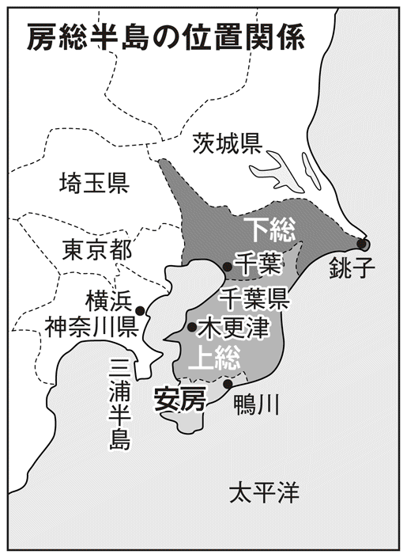
ところが、それでもよく考えると疑問が残る。上総と下総の国が分かれた七世紀後半に、当時の日本の中心地である近畿から房総に行くためには、陸路で下総を通って上総に行かなければならない。だとすれば、都に近いのは上総ではなく下総なのではないかということだ。
しかし、実際は当時の東海道は陸路ばかりではなかった。三浦半島から房総半島に船で渡り、上総から下総へ向かうという海上ルートがあったのだ。そうすると、やはり、上総のほうが都に近かったということになる。
なお、現在の新潟県である越後国の「上越」「中越」「下越」も、地図では下越がいちばん上にある。これもまた、上総・下総と同じ論理で命名されたものである。
羽犬塚（福岡県筑後市）
羽があると思うほどすばしこい、秀吉の愛犬に由来
福岡県南部にある筑後市は、人口約四万八〇〇〇人（二〇〇七年二月現在）。筑紫平野の南東部を占め、市の大部分は有明海に注ぐ矢部川の沖積扇状地と、低い洪積台地から構成されている。
そんな筑後市の中心部に、「羽犬塚」というユニークな名前の場所がある。地名の由来は、あの豊臣秀吉の愛犬にまつわる伝説にあるらしい。
一七〇二（元禄十五）年の『六所大権現縁起』のなかに、「関白秀吉公薩州下向之時、羽ある犬を召し給ふ」とある。これは、九州征伐の際に、秀吉が、まるで羽でも生えているのかと思うほどすばしこい犬を連れていたという話を記したものだ。
ところが、薩摩に向かう途中でこの犬が死んでしまったため、悲しんだ秀吉は塚を築いた。
その場所が、現在の羽犬塚があるあたりで、これが地名の由来だというのである。
一方、こんな説もある。一七七七（安永六）年の『筑後志』に「往昔両翼の犬隠れ住んで往来の人馬を害す。秀吉公九州進軍の時、狩りにてこれを殺し、此所に埋めて石碑を建て、羽犬塚と号す。後年民家を建て駅所となる」と記されている。
昔、この土地に獰猛な犬がいて、人や馬を襲っていた。
そんなときに、九州征伐にやってきた豊臣秀吉がこの猛犬に悩まされたため、退治してしまった。
しかし、同時にその犬の勇猛さをたたえ、塚をつくって弔ったというのだ。
羽の生えたようなすばしこさは共通でも、二つの説に登場する犬の性質には大きな違いがあるようだ。
なお、このほかにも、室町から戦国末期における地名だった「灰塚」が変化したとする説や、野犬の霊を弔う犬塚に由来するといった説もあり、いまのところ、真相はよくわかっていない。
大塚（東京都豊島区）
どうして「大塚」の北に「南大塚」があるのか？
東京の巨大ターミナル駅の一つとしても知られる、池袋駅。そして、その隣にあるのがＪＲ山手線の大塚駅である。
大塚は、いまでは池袋とは比べようもないが、かつては池袋よりもはるかににぎやかな繁華街だったという。また、現在では、東京に唯一残った路面電車、都電荒川線が通る駅としても知られている。
ところで、この大塚駅周辺の地図を見てみると、不思議なことに気付く。北から順番に豊島区「北大塚」「南大塚」とあり、その南に文京区「大塚」がある。つまり、大塚の南ではなく、北に南大塚が存在するのだ。
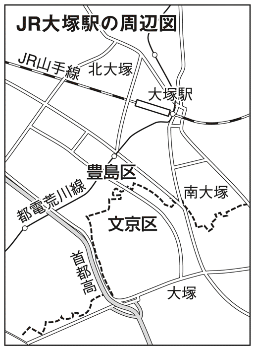
しかしながら、そもそもなぜこんなことになったのかというと、豊島区と文京区が、それぞれ独自に地名を付けてしまったためである。
住居表示法が施行されるまで、現在の文京区大塚は、小石川区の大塚町、大塚坂下町、大塚仲町となっていた。文京区はこれを一つにまとめて、文京区大塚という地名をつくった。
一方、現在の豊島区北大塚と南大塚は、かつては巣鴨六、七丁目と西巣鴨二丁目の一部だった。大塚駅があるあたりも大塚という町名ではなかったが、すでに隣に巣鴨駅という名前の駅をつくることが決まっていたため、近くの大塚という地名を駅名にしたらしい。
そして、豊島区は新しく地名を付けるにあたって、この駅名をそのまま地名に使うことにし、線路の北側を「北大塚」、南側を「南大塚」とした。これにより、大塚の北に南大塚があるという奇妙な現象が起きてしまったのである。
なにやらお役所の縦割り行政の弊害を連想させる、いささか不思議なエピソードといえる。
鳥取（鳥取県鳥取市）
朝廷直属の白鳥捕獲集団「鳥取部」に由来
中国地方の北東部に位置する鳥取県は、東西約一二〇キロ、南北約二〇～五〇キロのやや細長い県。北には鳥取砂丘などがある白砂青松の海岸線がつづき、南には大山などの山々が連なっている。県庁所在地も、県名と同じ鳥取市だ。
ところで、この「鳥取」というのは、文字どおり鳥に関係した地名だ。『古事記』には、大和朝廷が諸国に鳥を捕らえさせ、これを税として納めるように命じたという記述がある。
古代の鳥取にも、大和朝廷直属の職業集団がいて、白鳥を捕獲して朝廷に献上していたと伝えられる。彼らはかつて、湿地帯で狩猟生活をしていたが、その後、大和朝廷に組み込まれ、当時は「鳥取部」と呼ばれていた。つまり、その名前が県名や市名として現在も残っているというわけだ。鳥取部は全国数か所にみられたが、いまも地名として残っているのはここだけである。
なお、鳥取部は白鳥だけではなく、あらゆる鳥を捕獲していたともいわれる。実際、朝廷に献上された鳥は、肉は食用、羽は弓矢の素材に使うなどしていたらしい。ただし、当時はこれとはべつに鷹狩部という人たちもいたので、鳥取部は鷹などの猛禽類は捕獲しなかったという説もあるようだ。
国立（東京都国立市）
国分寺の「国」と立川の「立」から命名。名付け親は堤康次郎
東京都西部にある国立市は、二〇〇六（平成十八）年十月現在の人口が、約七万三六〇〇人。一九二六（大正十五）年に東京音楽学院（のちの国立音楽大学）、一九二七（昭和二）年に東京商科大学（のちの一橋大学）が誘致されるなど、教育施設が次々に建設され、それ以来、アカデミックな文教都市としても知られるようになった。
ところで、この「国立」という名前は、駅名にちなんだものだ。
東京音楽学院が誘致されたのと同じ大正十五年に、中央線国分寺駅と立川駅のあいだに新駅を設置することとなり、その際に、国分寺の「国」と立川の「立」を一文字ずつ取って、「国立」と命名された。
名付け親は、西武グループの創始者である堤康次郎氏とされる。というのも、大正末期にはまだ山林地帯だったこの一帯に、理想的な学園都市を建設する計画がもち上がり、その先頭に立ったのが彼だったからだ。
やがて開発がはじまり、整然とした街路がつくられ、教育施設も誘致されて計画どおりの街が誕生していった。
ちなみに、ＪＲ国立駅を降りると、南へまっすぐ延びる「大学通り」という大通りがあるが、その通りは大正から昭和のはじめにかけての開発当時は、なんと、飛行機の滑走路として使用されていたという。
八重洲（東京都中央区）
ヤン・ヨーステンが幕府から拝領した「やよす河岸」が語源
東京の玄関口である東京駅周辺は、鉄道利用者のみならず、日々、たくさんの人々でにぎわっている。駅西側の丸の内口はオフィス街だが、最近はさまざまな開発もおこなわれ、新しい来訪者も増えているようだ。
一方、東側の八重洲口には大丸百貨店や地下ショッピングセンターなどがあり、昔から買い物や食事などを目的に多くの人々が訪れていた。
その「八重洲」という名前の由来は、江戸時代にさかのぼる。一六〇〇（慶長五）年、豊後国（大分県）に、オランダ人ヤン・ヨーステンとイギリス人ウィリアム・アダムスが航海の果てに漂着した。その後、彼らは徳川家康に招かれて江戸に上り、家康の外交、貿易の顧問となって活躍した。
そして、ヤン・ヨーステンが幕府から拝領して屋敷を与えられたのが、現在の八重洲だった。当時そこは「やよす河岸」と呼ばれていて、そこから八重洲町となり、一九五四（昭和二十九）年に八重洲となったのである。
この事実にちなんで建てられたヤン・ヨーステンの記念碑は、現在でも八重洲通りの中央分離帯に残っている。
大鰐（青森県大鰐町）
その名の由来は「大きなワニ」ではなく、阿弥陀如来像だった
青森県南津軽郡にある大鰐町は、県庁所在地の青森市から約四〇キロのところにあり、豊かな自然と緑に恵まれ、スキーや温泉が楽しめる町として知られている。もちろん、リンゴの栽培も盛んだ。
この町の「大鰐」という名称を聞くと、どうしても、あの獰猛なワニにその名の由来があるように思ってしまう。しかし、実際にはそうではないようだ。
じつは、もともとこの地には大きな阿弥陀如来像があり、はじめのうちは「大阿弥陀」という地名で呼ばれていたらしい。その後、大阿弥が大阿子に変化し、大浦為信による津軽統一後は、大きな山椒魚がすんでいたという伝説から、「大鰐」と記されるようになったといわれる。つまり、「鰐」とはアマゾンなどの川にすむハ虫類の「ワニ」ではなく、両生類の「サンショウウオ」のことだったのである。
地名が阿弥陀如来像に由来するといわれるだけあって、大鰐町は津軽地方でも早くから仏教が伝わった場所として知られ、国の重要文化財の指定を受けている大日如来像が祀られて、多くの人々の信仰を集めていた。
ちなみに、大鰐温泉スキー場がある阿闍羅山も、仏教に関係した由来をもつ地名だといわれている。
御茶ノ水（東京都千代田区）
御茶ノ水の「水」は、高林寺という寺の湧き水
学問の神様・湯島天神のある東京都文京区湯島から、千代田区神田に至るまでの一帯を「御茶ノ水」という。この地は、長らく学生街として親しまれてきた。中央大学の郊外への移転など、いくつかの出入りはあったものの、いまも明治大学や順天堂大学をはじめ、多くの学校や予備校などが点在し、いつも学生たちでにぎわっている。
ところで、この御茶ノ水という名前には、その名のとおり、「お茶」が関係しているといわれる。
徳川幕府二代将軍秀忠は、鷹狩りの際、現在の順天堂医院のあたりにあったとされる高林寺に立ち寄ってお茶を飲んだ。すると、これがじつにおいしかったため、どこの水を使っているのか聞くと、寺の庭から湧き出た水だという。
これをきっかけに、寺では毎日この湧き水を幕府に献上するようになり、寺のある場所はやがて「御茶ノ水」と呼ばれるようになったのである。
このように、御茶ノ水という地名の由来に深く関わっている高林寺だが、一六五七（明暦三）年の明暦の大火によって駒込に移転。いまは、東京メトロ本駒込駅にほど近い場所にある。この寺は、一般には幕末の蘭学者緒方洪庵の墓があることでも知られている。
一方、庭に湧いた名水を汲んだという井戸は、その後もしばらく当地に残っていたようだが、一六六一（寛文元）年に伊達政宗の孫である綱宗が、神田川の拡張工事を完成させたことによって、ついに川の底に姿を消してしまい、いまではもう見られなくなっている。
埼玉（埼玉県）
「さいたま」とは、じつは幸福を与える神様の力のこと
かつては、軽く冗談めかして「ダサイタマ」などといわれたりもしていた埼玉県だが、政令指定都市・さいたま市の誕生や、さいたま新都市の開発などもあって、いまでは大幅にイメージアップしている。
ところで、その「さいたま」という地名だが、これは「サキタマ」が変化したものではないかといわれている。いくつかの古文書にも記されているようだが、サキタマという言葉はかなり古くから用いられていた。これが次第にサイタマという読み方に変化したというのである。
では、サキタマとはどういう意味なのだろうか。これについては大きく分けて二説ある。一つはサキタマの「サキ」は「幸」であり、サキタマは幸福を与える神の力をあらわすというもの。
これに対し、もう一つは地形説で、サキタマの「サキ」は「位置（前方の土地）」を示し、「タマ」は「湿地」という意味だとする説だ。
じつは、埼玉県は本来なら岩槻町に県庁が置かれ、「岩槻県」になるはずだった。だが当時の明治政府は、朝廷に敵対、またはあいまいな態度を見せる藩には、その名を藩名として名乗らせない方針をとっており、この地の岩槻藩も、そんな態度だったことから政府はこれを認めなかった。
その後、府県統合の際に埼玉県へと改称させられ、まもなく県庁も別の場所に移ってしまったのである。
甲子園（兵庫県西宮市）
球場開設の年の干支をあらわしていた高校球児の聖地
甲子園球場といえば、プロ野球阪神タイガースの本拠地であると同時に、高校球児の聖地としても知られている。毎年春と夏には高校野球の全国大会が開催され、日本中の高校野球ファンの目が注がれる。
高校球児たちはここをめざし、〝甲子園出場〟を合言葉にして、厳しい練習に耐え抜くのである。
ところで、その「甲子園」一帯は、かつては兵庫県武庫郡成尾村と呼ばれていた。
一九二四（大正十三）年八月一日には武庫川改修工事にともない、廃川となった旧枝川と中川の分岐点に野球場を建設することが決定。阪神電鉄がこの一帯を買収し、住宅、スポーツセンター、遊園地などの事業計画を立てて、その一環として、野球場が建設されることになったのである。
当時は、甲子園からほど近い鳴尾球場で全国中等学校野球大会が開催されていた。しかし、野球熱が高まるにつれて観客を収容しきれなくなり、新しい野球場建設の機運が高まっていた。そこで、阪神電鉄がこの新たな開発地に、野球場の建設を決断したというわけだ。
こうして完成した野球場に付けられた名前は「甲子園球場」。大正十三年の干支は「甲子」であったが、じつは、それにちなんで付けられた名前だったのである。
その後、周辺では住宅建設が着々と進められ、「上甲子園」「中甲子園」「浜甲子園」「南甲子園」と呼ばれる住宅地も形成されていった。
島原（京都府京都市）
まるで戦のような騒々しさだった、遊郭・島原の移転
京都・西本願寺の西側の地域を「島原」というが、この地名は、あの有名な「島原の乱」に関係している。
島原の乱は、一六三七（寛永十四）年に九州で起きた農民一揆。キリシタン弾圧や圧政に抗議して、天草四郎率いる一揆軍が原城に立てこもり、徹底抗戦の末に皆殺しにされるという事件だった。だが、それがどうして遠く離れた京都の地名に関係しているのだろうか。
それは、京都の島原にかつてあった、大きな遊郭に由来する。その遊郭は、室町時代に足利義満が九条に設けたものだ。それが二条へ移り、つづいて慶長年間（一五九六～一六一五年）に六条へ移るなどたびたび移転した末に、一六四〇（寛永十七）年頃、町はずれだった朱雀野、つまり現在の島原の地に移ってきたものである。
ただ、その移転はじつに急なもので、まるで戦のような騒々しさだったという。それゆえ、当時の京都の人々のあいだでも、すでに有名になっていた島原の乱にたとえられて、島原という名前が付けられたといわれている。
また、一説には、堀と塀をめぐらせた遊郭の姿が、島原の乱で農民たちが立てこもった原城に似ていることから、この地名になったという説もあるようだ。
この島原の遊郭は、衰退しつつも、明治以降も営業を継続していたが、一九五六（昭和三十一）年の売春防止法の実施によって、すでに消滅している。
戦場ヶ原（栃木県日光市）
日光の戦場ヶ原では、かつてどんな戦いがあったのか？
栃木県の観光名所である日光・中禅寺湖の北には、「戦場ヶ原」という場所がある。日光火山群の男体山、太郎山、山王烏帽子山に囲まれた、標高一四〇〇メートルの大湿原だ。地名を見たら「いったいどんな戦いがあったのか？」と、誰もが思うことだろう。
日光には、大蛇に姿を変えた男体山の神様と、大ムカデになった赤城山の神様が中禅寺湖を取り合って戦い、男体山の神様が勝ったという伝説がある。その際、弓の名人である猿麻呂の神様が大ムカデを射抜いたことから、日光ではサルが神聖な動物とされるようになったという逸話も残っている。
だが、この戦いが地名の由来になっているのかと思いきや、じつはそうではないらしい。つまり戦場ヶ原は、実際の戦いから付けられた地名ではなかったのである。
戦場ヶ原はもともと「千畳が原」だったといわれる。「千畳敷きもあるほど広い原野」という意味で、これがやがて変化して、現在の表記になったというのだ。
同じように、「千畳」が地名の由来になっている場所としては、南アルプスの「仙丈ガ岳」もある。また、日光と同じ栃木県の都賀町には「合戦場」という地名があるが、これは、この地が赤土層でよい田ができないために農業には向かないという意味の「かせる場」と呼ばれるようになり、これが転じたともいわれる。
いかにも戦いに関係がありそうな勇ましい名前でも、実際にはまったく違う由来である地名も、けっして少なくないのである。
ジャンジャン横丁（大阪府大阪市）
三味線や太鼓の音で大にぎわいの横丁
大阪市浪速区の最南端にある「南陽通商店街」は、正式名称で呼ばれることはほとんどない。「ジャンジャン横丁」という、なんともにぎやかな雰囲気の愛称で、人々から愛されつづけているのだ。
この愛称の由来については、一般に次のようないわれがある。
かつて、この一帯は通天閣と飛田遊郭を結ぶ道筋にあたり、たくさんの人々が行き交っていた。そうした客をめあてに、戦後まもない頃には立ち飲み屋や食堂、射的の店などが建ち並び、各店は他店に負けずに客を集めるため、遊郭に向かう客に対して一日中、呼び込みをおこなっていた。それも、三味線や太鼓などを鳴らしながら、だいぶにぎやかにやっていたのだという。
このジャンジャン横丁という名は、その三味線の「ジャンジャン」という音から名付けられたといわれているようだ。
なお、この横丁は「ジャンジャン町」とも呼ばれ、看板には両方の名称が書かれている。ちなみに、ここは林芙美子の小説『めし』にも、ジャンジャン町として登場している。
いまでもジャンジャン横丁は、にぎやかな商店街として知られており、最近では、なんとテーマソングまでつくられている（曲名は「恋してジャンジャン」）。三味線の呼び込みはなくなっても、その活気はまだまだ健在のようだ。
カンカン沢（北海道平取町）
「カンカン」とは叩く音ではなく、「大腸」のことだった
怒っているわけではないし、かんかん照りで暑くなっているわけでもない。はたまた、何かをカンカンと叩いている音でもない......。北海道にある二風谷の「カンカン沢」のことである。
このカンカン沢という地名の由来はアイヌ語だ。アイヌ語で「カンカン」というのは、クマでもシカでも、そして人間でも、「大腸・小腸」のことを意味する言葉である。
実際にカンカン沢に行ってみると一目瞭然なのだが、よく見ると、たしかにまるで腸のように蛇行した道が長くつづいていて、これが語源になってそう呼ばれるようになったことには容易に納得がいく。
北海道の地名は、その歴史からアイヌ語と深く関わっているものが多く、北海道の市町村のうち、約八割がアイヌ語に由来するといわれている。
アイヌの人たちは、生活する上で必要不可欠な産物を得る場所や、狩猟や貿易のために移動する通路や道路、そのときの目印となるような珍しい地形など、アイヌの生活に深く関わっている土地に地名を付けたのである。
それゆえに、いまでも北海道にはアイヌ語地名がたくさんあるというわけだ。
姫街道（静岡県磐田市～愛知県豊川市）
意外にも、その名の由来は「お姫様が通った道」ではなかった
江戸時代、静岡県の浜松宿と愛知県の御油宿を結んでいた東海道の脇街道に、本坂通りがあるが、一般にこの道は、「姫街道」という愛称で知られている。
ただ、この街道の名前の由来は意外なことに、「お姫様が通った道」というわけではない。たしかに、この道を女性が多く通ったという説もある。東海道の関所の取り締りが厳しかったり、渡しが危険だったりしたためというのだが、あまり説得力がない説とも考えられている。
では、そもそも姫街道という名前になったのは、いったいどうしてなのだろうか。
古代の本坂通りは『万葉集』のなかにも登場するなど、重要な街道の一つとして知られていた。中世末から近世末にかけても、有力な武将の拠点が街道沿いにあり、かなりの活況を見せていたという。ところが、江戸時代になると東海道がどんどん発展していくのに対して、本坂通りは衰退の一途をたどる。まさに「ひねた（ひなびた）街道」となってしまったのだ。
しかし、地元の人々はさすがに「ひねた街道」などとは呼べず、東海道を「男」に見立てて、脇街道である本坂通りを「女」とみなし、ひねたの「ひね」と「姫」をかけて、「姫街道」と呼ぶようになったのではないかといわれている。
そんな姫街道も、近世中期からはふたたび活況を呈し、現在も地元の人々や観光客に大いに親しまれているのである。
狸小路（北海道札幌市）
札幌の繁華街「すすきの」に、果たして狸は出没したのか？
北海道・札幌市の中心商店街としてにぎわっているのが、南二条通りと南三条通りのあいだにあるアーケード街、「狸小路」だ。
かつて、開拓使によって、函館商人の移住が奨励されたことから商店街が誕生し、明治になると百貨店の前身である勧工場が設置されて、狸小路発祥の地となった。現在では、郷土料理店やみやげもの屋、衣料品店などが集まり、いつも大勢の人々が行き交っている。
ところで、この狸小路という地名だが、意外にも、動物のタヌキから取ったものではない。たしかに、狸小路ができた明治初期には、このあたりにはヒグマやオオカミなどとともに、タヌキも出没していたという。だが、それと地名はまったく関係がないのだ。
では、狸小路という名前の由来は、いったい何なのだろうかといえば、じつはこれ、人間なのだ。
狸小路の南には全国有数の繁華街「すすきの」があるが、ここには明治時代に公認の遊郭があった。ところが、遊興費が高かったことなどから、そのうちにすすきのの遊郭よりも安い私娼たちが、街頭で客引きをするようになったのである。
私娼たちは、首に濃いおしろいを塗っていたために「白首」と呼ばれ、彼女たちの本拠地は「白首小路」とも呼ばれた。そして、彼女たちが夜な夜な男をたぶらかす手法は、タヌキが人を化かすよりも巧みだということで、白首小路はいつのまにか、狸小路と呼ばれるようになったのである。
地名にまで残るのだから、白首たちの手練手管は相当のものだったに違いない。これにはきっと、タヌキもかたなしといったところだろうか......。
渋谷（東京都渋谷区）
赤さび（しぶ）色をした川があったから「しぶや」となった
東京の「渋谷」は新宿などと並ぶ一大繁華街であり、ファッションなど、さまざまな流行の拠点になっている街でもあるので、とくに若者にとってはなじみが深いだろう。だが、普段我々が何気なく見聞きしている渋谷という地名の由来については、諸説あるようだ。
まず、かつてこの地を流れていた川の水が鉄分を多く含み、赤さびのような「しぶ色」だったために「しぶや川」と呼ばれるようになったとする説がある。
また、かつてこの付近は入江になっており、「塩谷の里」と呼ばれていたことから、その「しおや」が「しぶや」に変わったとする説もある。
さらに、平安時代の終わり頃に、領主である河崎基家が、京都の御所に侵入した賊を捕まえたところ、その賊の名が渋谷権介盛国であったため、重家は「渋谷」の姓を賜り、領地の名も渋谷に変わったとする説もあるようだ。
渋谷は、江戸時代には江戸からの放射路である大山街道が通り、街道集落としてにぎわった。江戸後期には大名下屋敷も数多く存在したが、明治時代になると荒地になる地域も出はじめた。しかし、それでもその後は開墾が進み、桑や茶も盛んに栽培されるようになる。
一八八五（明治十八）年に、現在の山手線の前身が開通して渋谷駅ができると、渋谷駅周辺は急激な発展を遂げた。昭和初期には多数の鉄道が集まるターミナルとして栄え、デパートを中心とするさまざまな店が並び、日本を代表する巨大な繁華街となっていく。
その後、第二次世界大戦によって大きな被害を受けるが、戦後は渋谷駅を中心にマーケットや飲食店が急成長し、さらに一九六四（昭和三十九）年に東京オリンピックが開催されると、その関連施設も建ち並んでいくことになる。
現在では、若者を中心とした多くの人々が、全国各地から集まる街となっているが、渋谷という地名の由来には、じつに歴史的なエピソードがあったのである。
新座（埼玉県新座市）
その昔、朝鮮の新羅から渡ってきた人々が住んでいた地
埼玉県に新座市という市がある。武蔵野の面影を残す豊かな自然をもち、近年は典型的な東京のベッドタウンとして発展してきた。人口約一五万人を擁する首都圏の中堅都市である。
この新座市の「新座」という地名の由来は、じつに八世紀にまでさかのぼる。
七五八（天平宝字二）年、武蔵国に「新羅郡」が設置された。ここは、朝鮮の新羅から渡ってきた七四人の渡来人のために新設された郡で、場所は現在の和光市にあたる、志木郷と新座市のあたりだったといわれる。
新羅郡の新設当時、日本では律令政治がおこなわれ、その先輩格であり先進文化をもつ新羅の人々を、たくさん受け入れていたのだ。彼らを受け入れた場所の多くは、郡と郡の境の未開地が多く、新羅郡もそうした場所だったと考えられている。これは、『続日本紀』のなかに「武蔵国閑地」に新羅郡を設置したという記述がみられることからも推測される。
その後、新羅郡は「新座郡」に改称されて、新座という地名がここに誕生したのである。
この新座の地名が公式に使われるようになったのは、意外にも新しい。一九五五（昭和三十）年の町村合併促進法によって大和田町と片山村が合併した際に、かつての地名である新座郡から名前をとって、新座町と命名された。さらに、一九七〇（昭和四十五）年に、埼玉県で三〇番目の市として市制を施行したときにもその名が受け継がれ、埼玉県新座市が誕生したのである。
釈浜（福井県高浜町）
行基がつくった薬師如来像が流れ着いた地
若狭湾に、「釈浜」という場所がある。ただ、浜といっても、対馬暖流がそのまましぶきを打ち上げている岩場である。
いったん海流に乗って入ってきた物はなかなか外に出ていけない構造になっているので、世界中から漂流物が集まるという奇妙な場所だ。
それだけに、釈浜というありがたい地名も、なんとなくうなずけるのだが、由来はまた別にある。
その昔、天平年間（七二九～七四九年）に、釈浜に光を放つ一体の仏像が打ち上げられたが、その仏像はかの高僧、行基作の薬師如来像であったという。
そして、ある日のこと、村人の夢に、その仏像は温泉を守る仏であるというお告げがあり、その後、ここに温泉が出たそうだ。
現在、この釈浜には温泉はないのだが、ヨットハーバーなどに使われている。
ちなみに、作家である水上勉氏の小説には、この浜の地名の由来について書かれているものに『釈浜心中』という作品がある。
石巻（宮城県石巻市）
北上川の流れが石に当たって渦を巻くから「いしのまき」
宮城県石巻市は、旧北上川の河口に位置し、伊達藩の時代には水運交通の拠点として繁栄した交易都市だった。その後、明治になると漁業の街として栄え、一九六四（昭和三十九）年に新産業都市の指定を受けてからは、工業都市としても発展した。そして、二〇〇五（平成十七）年四月一日には、この地域の一市六町が合併して、新たな石巻市が誕生したのである。
ところで、その「石巻」の地名のルーツは、北上川沿いにある「住吉公園」に関係しているという。
住吉公園のある場所は「袖の渡り」と呼ばれ、古くから旧金花山道の渡し場だった。江戸期には松尾芭蕉も『奥の細道』でここを訪れ、明治期には「墨廼江渡し」「一文渡し」とも呼ばれていた。
そして、この公園には「巻石」と呼ばれる岩があり、これが石巻という地名の起源だとされている。一七七三（安永二）年に村から藩に提出された『風土記』には、「住吉大明神社地脇石巻石石淵御座候二付其縁」で村名にしたとある。石巻という地名は、北上川の流れがこの石に当たって渦を巻くことから付けられたもののようだ。
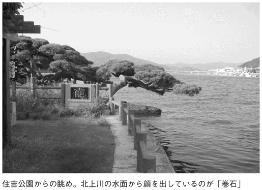
なお、住吉公園内には、延喜式内社大島神社や愛宕山があり、板碑、川村孫兵衛紀功碑、保原花好の句碑、平田船絵馬、千石船の石灯籠、下馬石、熊子坊など、歴史にまつわる碑も多数残されている。
舞鶴（京都府舞鶴市）
藩名「田辺」は、ほかにもあってまぎらわしい
京都府の北部に位置する舞鶴市は、市の東西と南側を山に囲まれ、北側は若狭湾に面している。その奥には天然の良港・舞鶴港があることから、古くから漁業が盛んだった。
それと同時に、この地は田辺藩の城下町としても発展したが、「舞鶴」という美しい地名は、この田辺藩の改名に大きく関わっているという。
一八六九（明治二）年に版籍奉還がおこなわれた際、それまでの田辺藩は名前を改めることになった。というのも、「田辺という名の藩は紀伊国にもあってまぎらわしい。ぜひ改称するように」と、太政官より内々の指示があったからだ。
こうして決定したのが「舞鶴藩」という名前だ。当初は舞鶴と同時に「笠水」という名前も候補に挙がったものの、当時の田辺藩主と同姓の牧野貞寧が常陸国笠間を領有していたために、混同される恐れがあるとして、笠水という名称は退けられたとされる。
では、舞鶴という名前はどこからきたものなのだろうか。
一説には、この地を賜った細川幽斎と忠興の親子が、白鳥峠から、つがいの鶴が飛来するのを目にし、鶴がちょうど舞い降りた場所に築城したことに由来するといわれる。そうしてできた田辺城が、「舞鶴城」という別称でも呼ばれるようになり、それが舞鶴という藩名になったというのだ。
また、田辺城を西の方角から見ると、天守閣がないために、鶴が羽を広げた形に似ているということで舞鶴城という呼び名が生まれ、それが舞鶴藩の由来となったとする説もあるようだ。
もしも、田辺藩が一つしか存在しなかったならば、改名されることなく、この地は舞鶴ではなく、田辺になっていたかもしれないのだが......。
道玄坂（東京都渋谷区）
人影まばらな坂を根城にする、山賊の首領・道玄
東京都渋谷区にある「道玄坂」は、多くの飲食店や専門店、映画館などがひしめく一大繁華街で、一年中、若者を中心とした多くの人々でにぎわっている。
この道玄坂は、江戸から大山へ向かう街道の坂の名前だ。その地名の由来については諸説あるが、なかでもユニークなのが、山賊の名をとったとする説だ。
鎌倉前期に活躍した武将に、和田義盛がいる。源頼朝の挙兵に参加して戦功をあげ、侍所別当などの重要な役割を担った人物である。
そして、この和田義盛一族の残党の子孫に、道玄という人物がいた。彼は、現在の道玄坂のあたりで山賊になったのだという。
江戸時代に書かれた『江戸名所図会』には、「俚諺に云う、大和田氏道玄は和田義盛が一族なり。建暦三年五月和田一族滅亡す。其残党此所の窟中に隠れ住みて山賊を業となす。故に道玄坂というなり」とある。このことから、道玄坂という名は山賊・道玄にちなんだものとされているのである。
いまの姿からは想像もできないが、かつての道玄坂は山賊が出没するほどの草深い場所だったというわけだ。
ちなみに、その道玄が物見をしたといわれる松を「物見の松」とする言い伝えもあり、その所在地についても諸説あるようだ。
そのほか、道玄坂とは、かつてこのあたりに道玄庵という寺があったことから命名されたもので、道玄はその寺の僧侶だったとする説などもある。
兵庫（兵庫県）
明治政府の外交戦略で、開港場が県名となった
大阪にほど近く、神戸などの大都市も抱える兵庫県は、北は日本海、南は瀬戸内海に面している。一九九五（平成七）年には、阪神・淡路大震災によって南部を中心に大きな被害を受けたが、その後は徐々に復興を遂げ、現在に至っている。
ところで、地名である「兵庫」とは、現在の神戸市兵庫区のあたりに、摂津・播磨国境の須磨関を守る兵庫（武器庫）がつくられたことに由来するとされる。
その兵庫の地に明治政府が最初の行政機関である兵庫鎮台を置いたことから、地名がそのまま県名になったというわけだ。
だが、当時の兵庫は、姫路や明石に比べて規模が小さく、とても県の名前になるような場所とは思えなかった。それが県名になったのは、明治政府の外交戦略によるものだと考えられている。
一八五八（安政五）年の日米修好通商条約で、兵庫は函館、新潟、神奈川、長崎とともに開港場となった。同種の条約はそのほかの諸外国とも交わされ、江戸幕府からこの条約を引き継いだ明治政府は、これら五つの港の整備を最優先課題に据えた。そこで、「外国に開かれた土地」であることを強くアピールするために、条約上の開港場を県名にしたというのだ。
たとえば、当時の神奈川も小さな町だったが、そのまま県名となって神奈川県が誕生している。これもまた、明治政府の意図によって、県名に決まったと考えられている。
途中（滋賀県大津市）
ちょうど「中ほど」に位置することから名付けられた
全国には、ユニークな地名で知られるところも少なくないが、京都から滋賀へ向かう道中には途中峠という場所がある。京都の大原から若狭へ向かう若狭街道（現在の国道三六七号線）の要所で、山城越、竜華越とも呼ばれた。
ここは平安時代以来、京都から東国や北国へ行く間道として知られ、現在では若狭小浜や湖西、敦賀への近道としても使われている。
そして、その峠を越えると「途中」という集落がある。古くから農業のほか、炭焼き、木材生産などを営んできた。上竜華との境近くにある集落の鎮守・還来神社は、第二次世界大戦中には、出征者の無事を願う参詣者が各地から訪れたという。なお、現在ここは、滋賀県大津市伊香立途中町となっている。
ところで、この「途中」という地名については、相応和尚が明王院を開く際に、葛川谷と無動寺谷のちょうど「中ほど」に位置することからそう名付けられたという説があるが、ストレートといえば、これほどストレートな名付け方はないだろう。
そのほか、この地に栃の木が生えていたことから「栃生」と呼ばれていて、それが転訛して「途中」になったとする説もあるようだ。
港区（東京都港区）
当初は東京港を抱える「東港区」となるはずだった
赤坂、六本木、青山などの繁華街や、東京港に面したビジネスセンターを抱える東京都港区は、一九四七（昭和二十二）年三月十五日に、旧芝区・旧麻布区・旧赤坂区の三つが合併して、現在の「港区」となった。
その際、新しい区名を決める審議では、江戸城の南部を意味する「城南区」と「東港区」に候補が絞られた。東港区は、「今後の日本の発展は貿易の振興にあり、その素材ともいえる東京港を抱えている」ということで、候補になった区名だった。
二つの案を検討した結果、東港区が有力となった。ところが、東京都東港区になると、似たような音が重なってしまい、どうにも発音しにくいことが問題となった。そこで、「東」の一字を抜いて「港区」とすることになったのだ。この新区名は、新しい区の誕生より少し前の二月二十六日に決定された。つまり、本当なら港区は、東港区になるはずだったというわけだ。
ちなみに、港区になる前の旧芝区は、武蔵野の原で芝が茂っていたことから「芝区」となり、旧麻布区は、麻が生えていてその麻で布を織ったことから「麻布区」となり、旧赤坂区は、昔の一ツ木村の古名で赤土の土地だったため「赤坂区」になったなどという説があるようだ。
大将軍（京都府）
古都の意地？ 京都に「大将軍」という地名が多いワケ
全国からたくさんの観光客が訪れる古都・京都を歩いていると、ときどき「大将軍」という地名を目にすることがある。これは京都府だけでなく、滋賀県下にもよくある地名である（読み方は各地で異なる）。
なんとも偉そうな名前だが、あの「征夷大将軍」のことではない。中国伝来の陰陽道に関係した地名なのだ。
陰陽道とは、天体の運行や方位から吉凶を判断し、あらゆる思考や行動の判断の指針にしようとする技術。平安京は、桓武天皇が陰陽道をとり入れて築いた都市で、方位の厄災が重んじられた。
陰陽道における大将軍とは、暦の方角に関する「八将神（軍）」の一神で、この神は「三年塞がり」の方向を示すとされる。
さらに、江戸時代に成立した『和漢三才図会』によると、大将軍は、九相という国の吉詳と呼ばれる園で生まれた八人の王子の一人で、四方を司る役神だとされている。
陰陽道では、集落などで忌むべき方角に「方除神」を祀り、その方向から厄災が入り込まないように守ってもらうという習慣がある。大将軍もまたこの方除神であり、平安京の東西南北には、大将軍にまつわる神社がそれぞれ配置された。たとえば、大内裏の西側には、王城を守るための方除神として「大将軍八神社」が建立されたのである。また、大将軍とはヤマタノオロチ退治で有名なスサノオノミコトのことだとする説もある。
大将軍という地名は、こうした歴史的事実を背景に、現在まで受け継がれている地名なのである。さすがに、古都・京都らしい逸話といえよう。
東ハゼ町・西ハゼ町（香川県高松市）
日本初の片仮名地名になったのは、漢字が難しかったから
地名といえば、圧倒的に漢字表記が多いのはいうまでもないが、四国の香川県高松市内には「東ハゼ町」「西ハゼ町」という町がある。
ここは、日本ではじめて片仮名の町名にしたところである。
この「ハゼ」という名前は、一九四〇（昭和十五）年に、正式に誕生した。郡部の町村が合併して市域を拡大した際に、鷲田村を小さく分けたのだが、新しい名前については「櫨」とすることにした。
櫨は秋の紅葉が美しい広葉樹で、昔からこの地域が「ハゼ」と呼ばれていたため、それにちなんで選ばれた文字である。ハゼという名前の由来は、この地でいまから一五〇〇年～一六〇〇年ほど前に、「はじ」という土器をつくっていたためという説もあるようだ。
ところが、いざ「櫨町」に決定しようとしたところ、「それでは難しすぎて読みにくいし、ましてや書くことなどは不可能だ」という声があがった。そこで、当時の高松市長が片仮名で「ハゼ町」と表示することに決定したのである。
片仮名なら、難しい漢字よりおぼえやすいのは間違いない。
近頃の政治家の演説でも、片仮名がよく連発されるが、片仮名流行の昨今の風潮を先取りしたネーミングといえるかもしれない。
東大和（東京都東大和市）
独立独歩の六か村を「大きな和」でまとめたい
東京都東大和市という地名は、人々の願いが起源となって付けられている。この東大和市の歴史はまだ浅く、一八九〇（明治二十三）年から発足していた六か村組合の努力が実り、一九一九（大正八）年に六か村が合併して「大和村」となり、町制を経て一九七〇（昭和四十五）年に「東大和市」となった。
単純に考えれば、「東大和」という地名は「東にある大和の国」という意味なのではと思うだろうが、じつのところはそうではない。たしかに、東にある大和の国と名付けるにはふさわしいが、その位置している場所は、どちらかといえば、東京都のなかでも中西部。「東」と付くのは、やはり無理がある。
この地名の本当の由来は、清水村・狭山村・高木村・奈良橋村・蔵敷村・芋窪村の六か村が合併するときに、「合併には大きな和が必要だ」という考えから命名されたことにある。
じつはこの六か村、どの村も独立独歩の精神が強く、合併の話がもち上がる前から、隣村とはほとんど交流がなかった。そのため、実際に協力して大きな和をつくりたいという願いを込めて、そう名付けられたというわけだ。
新しい市名の候補はもちろん数多くあって、近くにある多摩湖から多摩湖市、武蔵の国の大和という意味から武蔵大和市など、かなり有力なものもあったようだが、「大きな和」という考えが六か村の考えに一致していたので、採用されたのである。また、市制施行にともない、「東京の大和」という意味で、東大和市と名付けられたということだ。
コザ（沖縄県沖縄市）
米軍の聞き間違いが地名になった、沖縄県コザ市
一九七四（昭和四十九）年に、美里村との合併で消えてしまったのが、かつて沖縄にあったコザ市である。
これは沖縄の日本返還から二年後のことになるが、それ以前の一九五六（昭和三十一）年からは市制をしいて、コザ市を名乗っていた。
しかし、この「コザ」という地名、よく考えるとなんとも奇妙なのだが、この名称になったのは、米軍がちょっとした勘違いをしたためで、第二次世界大戦後のアメリカ統治の歴史を物語るものだった。
当初、この地には「胡屋」という地名があり、「ゴヤ」と発音していた。それを嘉手納基地の米軍が、アルファベットで「ＧＯＹＡ」とすべきところを、「ＫＯＺＡ」としてしまったことから付いた名前なのだという。
また、占領統治以前、米軍の沖縄上陸のときに生じた誤解が、そのまま市名になったのだという説もある。
それは、米軍が美里村の「古謝」というところに上陸した際、地元の人々が古謝を「クジャー」と発音するのを、米兵たちは「コザ」と聞き取ったというのである。
そのため、米軍は「古謝」を「スモールコザ」、隣接して区画も広い「胡屋」を「ビッグコザ」と呼び分けるようになっていく。
それが市制をしくときに、そのまま地名として使われるようになったというのだ。
いずれの説にしても、コザという地名は米軍統治のもたらしたものだったが、沖縄返還とともに公式記録の上では消えてしまっている。ただ、米軍の沖縄駐留はいまもつづいており、沖縄の人々の記憶からはけっして消えることのない地名といえる。
登別（北海道登別市）
北海道の地名に「別」の付くところが多いワケ
明治時代の廃藩置県で、旧幕藩時代の藩名がそのまま県名や市名になったり、その後の町村合併で新しい名前が生まれたりしたが、その地名は地形や環境にちなんだりするケースが多く、しかも、その土地ならではの表現や方言が、そのまま使われたりもした。その意味では、もともとあった地名がたくさん残されているのは北海道だろう。
明治時代の中央集権政府の統治がなかなか行き届かず、旧来の地名の音に、そのまま漢字があてられたりしたが、その旧来の地名も、先住民のアイヌ語によるものが多い。
たとえば、ここで紹介する北海道の「登別」もそんななかの一つだ。北海道にはほかにも、「紋別」「女満別」「春別」などのように、「別」の付く地名があちこちにみられる。
この「別」の語源は、アイヌ語の「ペッ」だといい、川を意味する言葉である。正確には水を意味する「ペ」に、「ッ」が付くことで、沢や大きな水の流れを指すのだという。それが「ベツ」という大和言葉の発音に変わり、「別」の字があてられたのだ。
登別の語源は「ヌプル・ペッ」で、登別川が白く濁っていたところから、「水の色の濃い川」の流れる土地の意味で付けられたものだという。
同様に、紋別は「モ・ペッ」で「静かな川」、女満別は「メマン・ペッ」で「冷たい和泉の湧く川」、春別は「シュム・ペッ」で「西の川」という意味だ。
なお、アイヌの人たちが地名に川の様子をあらわす言葉を使ったのは、彼らが交通や漁獲のために、川沿いに集落をつくっていったからだとされている。
オランダ坂（長崎県長崎市）
正確にいうと、じつは「イギリス坂」なのかもしれないが......
長崎は、海の近くまで山がせり出している土地に港と街が開けたため、必然的に坂道の多い街並みとなっている。それが、いまでは長崎の観光名所「オランダ坂」として親しまれる結果となっている。
ところが、オランダ坂と呼ばれる名所は一つだけではなく、じつは数か所ある。というより、石畳の坂道はすべてオランダ坂ということもできるのだ。
長崎の石畳は、日本が開国した時代、長崎居留地にやってきた外国人たちが伝えた技術だ。彼らは、住まいや教会を山の上に向かって築いていった。目の前は海だったので、山を切り開いていくしかなかったのである。
そして、そのときに造成した坂道がぬかるんですべったりしないよう、切り出した石を敷き詰めて舗装した。それがいまも残り、オランダ坂と呼ばれるようになったのである。
日本が開国で通商条約を結んだのは、アメリカ・イギリス・オランダ・フランス・ロシアの五か国。彼らはポルトガル人が伝えたカトリックとはべつの、プロテスタントやイギリス国教会などの新教を伝えた。もちろん、そのための教会を建て、日曜礼拝もおこなわれたので、当時、坂道にはたくさんの外国人が行き交っていたに違いない。
ところが、当時の長崎の人にしてみれば、外国人といえば出島に出入りしていたオランダ人のことだった。外国人が行き交えば、彼らはみんな「オランダさん」になる。だから、外国人がつくり、よく通った坂は、オランダ坂と呼ばれるようになったのである。
いま観光パンフレットなどでオランダ坂と紹介されることが多いのは、英国聖公会堂跡へと上る坂だ。そこはイギリス人がよく通った坂だから、本来ならば「イギリス坂」ということになるだろう。
上高地（長野県松本市）
高いところの「高地」ではなく、平地を意味する「河内」だった
「上高地」というからには、上のほうの高い山の土地なのだろうと思いきや、じつは「河内（こうち、かわち、かっち）」という、「山間の渓谷の小さな平地」を意味した地名なのである。
古くはその由来から、「上河内」「神河内」などと表記されていたのだが、それは、明治時代以前の古文書などでよくみられる表記である。「上高地」という表記は、天保年間（一八三〇～一八四四年）の頃から多くなったというが、実際のところは定かではない。
ところで、かつての表記「神河内」については、中島正文氏が『山岳』のなかで、「狭い僕の見聞の範囲内であるが、神河内の文字名称がはじめて使われたのは、一六四六（正保三）年四月に製作された『信濃（安曇郡筑摩郡）松本御領分絵図』であろう」と述べている。
また、現在の表記の「上高地」で記録されているのは、一七二四（享保九）年の序のある、『信府統記』だ。これは、信濃府中であった松本地方の地史・歴史・伝統などをすべて網羅した書物であった。
佃島（東京都中央区）
家康から土地を与えられた、摂津・佃村の漁師たち
東京都中央区の「佃島」は、いまでは橋が架けられて陸つづきとなっているが、かつては江戸湾のなかの島だった土地だ。それも、江戸時代初期に造成された人工島である。島をつくる際には、隅田川河口近くの砂洲だったところを、周囲に石垣を築いて埋め立てていったという。また、この島への往来には舟が利用され、昭和三十年代の終わり（一九六四年頃）までは、佃の渡しが残っていた。
島造成の工事に携わったのは、現在の大阪市西淀川区にあった摂津国佃村出身の漁師たちだ。彼らは徳川家康の江戸入府の際、望まれてともに江戸に下ってきた。江戸湾の漁業権を与えるかわりに、獲った魚を城に納めるのが仕事であった。
その後は、幕府から拝領した砂洲を整備、居住地とした。埋め立て工事がはじまったのは三代将軍家光の時代の寛永年間（一六二四～一六四四年）で、寛永が終わった一六四四（正保元）年に完成して移住したという。その人工島に、故郷である佃村の地名から佃島と命名した。
彼らが城に納めた残りの魚は、日本橋に誕生した魚河岸で庶民の食料として商われ、商品にならない小魚は醤油で煮て保存食とした。これが、いま東京名物にもなっている佃煮の起源である。
また、佃島の漁師たちのもう一つの特権が、隅田川のシラウオ漁であった。毎年十一月から翌年三月までの漁期には、毎日夜間に舟を出して漁をし、翌朝、将軍に献上していたという。
キタ・ミナミ（大阪府大阪市）
大阪の「キタ」と「ミナミ」の境界はいったいどこか？
大阪を代表する繁華街が「キタ」と「ミナミ」であるが、この読み方、とくに〝大阪初心者〟にとっては、なんとなく「？」マークが頭に浮かんでしまう。
たとえば東京なら、表参道、六本木というように、町や駅の名前で呼びあらわす。ごくかぎられた地域を指すにしても、博多の「中洲」や札幌の「すすきの」といった地名が一般的だ。
しかし、大阪にはキタやミナミと呼ばれる街は実際になく、そんな駅名もないのに、大阪人にはどこを指すのかすぐわかるのである。
じつはこれ、ただ単純に、大阪市の北に位置する、南に位置するというところから生まれた使い分けだ。北はＪＲ大阪駅を中心とした梅田地区、南は道頓堀を中心とした灘波地区である。とはいえ、これはあくまで大阪人ならではの感覚による通称だから、キタとミナミを結ぶ御堂筋の、「ここが境目」というところはない。
歴史的に見てみると、ミナミには江戸時代に道頓堀川が開かれて、両岸に遊興街が広がっていった。そのなかの遊里が「南地」と呼ばれていたというから、ミナミの語源はこのあたりからのようだ。
一方のキタのほうは、道頓堀川に遅れて曽根崎川の改修によって広がった地域だ。ここに近松門左衛門の心中物でも知られる曽根崎という遊里があったが、川の改修で北へ移動させられ、「北の新地」と呼ばれるようになる。これが「キタ」の語源ともいえるようだ。
お台場（東京都港区）
お台場の「お」は、いったい誰に敬意を払っているのか？
いまや東京を代表するレジャースポットであり、ショッピングにデートにと人を集めているお台場は、ウォーターフロント再開発で発展した町である。
だが、そのイメージとは裏腹に、以前ここは、その「台場」という名前のとおり、大砲を置く砲台のあった場所だった。
一八五三（嘉永六）年、アメリカのペリー総督の来航により、幕府は外国船の襲来に備える重要性に気付く。こうして、江戸防衛のため、湾岸に海に向けた大砲が据えられることになったのである。
この当時、幕府に由来するもの、幕府の直轄地などには敬称の「御」を付ける習慣があった。そこで「台場」に「御」が付き「お台場」と呼ばれることになったのである。
当初は、砲台を一一基設置する予定で建設がはじまった台場だったが、完成したのは五基のみだった。現在はそのうちの第三、第六の両台場が国指定の史跡となって残され、第三台場は「台場海浜公園」になっている。
なお、第一、第五台場は品川埠頭に埋設されて跡形もなくなり、第二台場は東京湾の航路と重なるために撤去された。
そして、未完成のままで終わった第四台場は、現在の天王洲アイル付近の地形や石垣にその痕跡を見ることができるのみである。
忍阪（奈良県桜井市）
日本最古の地名は、奈良県にある平凡な坂
ＪＲと近鉄が交差する桜井駅から東に二キロほどの場所にあるのが、「忍阪」だ。住宅街のなかのなだらかな坂で、同名のバス停もある。
ここは現在「おっさか」と読まれているが、かつては「おしさか」という地名で、「忍坂」とも書いていたという。
しかし、それ以前、『古事記』が著される前からこの地名はあり、現存する最古の地名だといわれている。
和歌山県橋本市の隅田八幡宮にある人物画像鏡に、「意柴沙加宮」の銘が刻まれているのだが、これは国宝に指定されているほど価値があるもので、あの『古事記』よりも成立年代の古いことがたしかめられている。
また、近年の発掘調査で、忍阪のあたりに宮が築かれていた痕跡も見つかっており、この地が最古の地名であることは間違いないものとされた。
『古事記』『日本書紀』が著された頃になると、万葉仮名で「於佐箇」「意佐加」「押坂」「忍坂」といった表記で登場している。
「おしさか」という音は、「し」が強意で使われることが多いので、そこから「大」の意味が生じる。それゆえ、ここには大きな坂があったのだろうとも推測される。いまはなだらかな坂だが、かつては険しい山道だったようだ。
屋久島（鹿児島県）
遣隋使・小野妹子のコメントが初出の「夷邪久国」
「屋久島」は、樹齢およそ七千二百年の縄文杉などが生い茂り、ユネスコの世界遺産にも登録されている美しい島である。
この島名の由来はかなり古く、中国統一王朝・隋の正史『随書』に歴史上はじめて登場する。
そこには、「六〇七（大業三）年、第二代煬帝は異国の風俗を調べるために兵を東海に派遣したが、言葉が通じない。地元の人を一名連れて帰り、翌年再派遣したが、従わないので布甲などをとって帰った。その折、倭国の使者が来朝しており、これを見て『これは夷邪久国の人が使っているものだ』といった」と記されている。
じつは、この倭国の使者こそ、遣隋使の小野妹子なのである。妹子によると、夷邪久国が、現在の屋久島を含む南西諸島全体のことだったという。
こののち、『日本書紀』以降は、「益救」「益久」「夜久」「夜句」などとも記され、やがて屋久島と表記されるようになったらしい。
また、屋久島の「ヤク」には、アイヌ語で「鹿」を意味する「ユック」という言葉が転訛したものだという説もある。たしかに、自然に恵まれているこの島には多くの生物がすんでおり、そのなかでもヤクジカなどは、ヤクザル、ウミガメに並んで、島内でよく見られる動物の一つだ。
ちなみに、屋久島では古くから薬草の栽培が盛んなために、「薬の島」といわれていた史実もある。「ガジュツ」という植物が栽培されて胃腸薬に加工されていたのだそうだ。
鎌倉（神奈川県鎌倉市）
藤原鎌足が、もっていた鎌を埋めた土地
「鎌倉」という地名の由来は、考古学的見地からは、当地の地形によって生まれたものだと考えられている。
地名に「鎌」が使われるのは、えぐったような形の崖が形成されている浸食地形、あるいは崩壊的な浸食谷の場合が多い。また、「倉」や「蔵」の字があてられる「くら」という音は、谷を意味する古語でもある。
鎌倉が、海岸近くまで迫った山の中腹から海岸にかけて、階段状に切り開かれてできた集落だったことを見てもそれは明らかだ。
ただ、『万葉集』のなかに鎌倉を詠んだ歌があったり、『正倉院文書』のなかに鎌倉の税についての記述が見られることからも、古代からすでに開けた土地であったことがわかる。大和朝廷のあった畿内から房総半島への経路で、重要な位置を占めていたようだ。
平安時代後期になって、東国の国司を中心に武士団が組織されていった縁で、源頼朝が幕府を置いてから、鎌倉の繁栄がはじまる。
しかし、それも室町幕府の京都移転によって終わりをつげ、江戸時代初期には小さな漁村の姿に戻った。
それでも武家政権のはじまった土地ということで、江戸時代を通じて鎌倉の伝説が語られていたのだという。
のちに藤原を名乗るようになる中臣鎌足が、鹿島神宮に参詣する途中、小さな入江に面した集落に泊まった。
その夜、霊夢を見た鎌足は、思うところがあって、所持していた鎌をその地に埋めてしまう。それが、鎌倉という地名の由来になったというものだ。
この伝説にちなんで鎌埋稲荷が建てられ、それが現在の鎌足稲荷神社になったという。
北海道（北海道）
名称の由来は、東海道と同じ
「北海道」は、古くから蝦夷地と呼ばれていたが、江戸時代になって松前藩という行政府が設置されて以来、幕府の管轄下に置かれていた。
その後、明治維新で廃藩置県がおこなわれることになったときには、松前藩領以外はほとんど未開のまま。ほかの県は幕藩体制下の藩の名を使うことにしたが、蝦夷地だけは松前を除けば県名の付けようがなかったという。
そこで、暫定的に地域名を付けておくことにした。そのとき参考にしたのが、古代の五畿七道であった。
律令制のもと、北海道を除く日本列島は、大和朝廷の置かれた奈良近隣の大和・山城・河内・和泉・摂津の五か国を「五畿」とし、それ以外は「七道」の区域に分けられていた。
この七道とは、東海道・東山道・北陸道・山陰道・山陽道・南海道・西海道の七つのことだが、このなかに東海道、南海道、西海道はあっても「北海道」がないことから、この地域名に決められたのである。
明治時代の一時期、北海道の開発が進んだため、札幌・函館・根室の三県が置かれた時代が、じつはある。しかし、たいして人口も増えず、自治能力も満足なものとはならなかった。
そのため、地域名をそのまま行政区画とし、地方自治体名として現在まで使われつづけているのである。
半蔵門（東京都千代田区）
服部半蔵が守っていたという江戸城西門
現在は皇居になっているかつての江戸城は、周囲に濠をめぐらして守りを固めていた。城内へは橋を渡ってしか入ることができず、その橋ごとに門が構えられた。その六つあった門のうち、西側の内堀に設けられたのが「半蔵門」である。
これは、徳川家康の旗本・服部半蔵の名に由来するもので、そばに彼の率いる警護担当の伊賀衆組屋敷があったことからの通称だ。
ここは、甲州街道の入口にあたり、別名、麹町門ともいうが、門北側の内堀が半蔵濠と呼ばれるなど、服部半蔵の名はそれだけ知れわたっていたのである。
伊賀出身の服部半蔵は、父の代に三河の松平氏に仕えるようになり、半蔵も十六歳の初陣のときから徳川家康の直参となった。その後、故国の伊賀衆を率いて姉川の合戦、三方ヶ原の戦いなどで武勲を挙げ、一五九〇（天正十八）年の家康の江戸入府とともに与力三〇騎、伊賀同心二〇〇人を支配する石見守の地位を手に入れている。
半蔵の名を高めたのは、一五八二（天正十）年の本能寺の変の折、堺に滞在していた家康の帰国を助けたことだ。
この際、出身地の伊賀衆の力を借りて、家康の山越えを可能にしたのである。これは、「家康の伊賀越え」として語り継がれているエピソードだが、こののちに江戸城を築城した家康が、半蔵に警護担当を命じ、門のそばに屋敷を与えたのである。
服部家は、半蔵の息子の代で失脚したが、半蔵の名前だけは門の名とともに後世に伝えられている。
阿佐ヶ谷（東京都杉並区）
浅い田んぼで田植えが楽だった阿佐ヶ谷の農民
東京都杉並区にある「阿佐ヶ谷」は、旧阿佐ヶ谷村が発展してできた場所だが、現在の地名は「浅が谷」が起源ではないかといわれている。
一説によると、ここの地形が、桃園川の浅い谷地を形成しているところから「浅い谷」と呼んでいたものが、やがて「浅が谷」に変化したというのだ。
また別の説では、この地に開かれた田んぼが浅く、農民は田植えが楽だったことから「浅い田のある谷地」が縮められて「浅が谷」になったともいわれている。
旧国鉄時代、現在のＪＲ中央線が敷かれてからは、人口が増えて住宅地となっていき、一九六四（昭和三十九）年の住居表示法により、町名表示は「阿佐谷」で統一された。
ただ、旧来の名を懐かしむ人が多いせいか、ＪＲや東京メトロの駅名は、「ヶ」の入った「阿佐ヶ谷」表記のままとなっている。
仙台（宮城県仙台市）
祀られていた「千体の仏像」から伊達政宗が命名
文化・観光・経済面において、東北地方最大の都市となっている仙台市。宮城という県名より、むしろこの「仙台」のほうが全国的には認知度が高いかもしれない。
ところで、この地名の由来は、この地に築城した〝独眼竜〟伊達政宗にまつわる説が有力だ。
その昔、慈覚大師円仁が、この地に千体の仏像を祀った。それが、「千体→千代」と転じていく。
そして、伊達政宗が、一六〇〇（慶長五）年に、家康から許可を得て青葉城の築城を開始した際に、この地を「仙台」と改めたのだという。
政宗は、文学にも秀でた才能を発揮し、中国・唐代の「同題仙遊観」という詩の起句である「仙臺初見五城桜」からとったものとされている。
また、政宗以外の説では、広瀬川、国分川に囲まれている地形から「川内」といわれたことが語源とか、アイヌ語の「セプ（広くする）」「ナイ（川）」つまり「広くする川」からきた言葉だとする説もある。
伊達政宗は、「伊達男」という言葉が現代にも伝わるくらいに、粋なカッコイイ男だったはず。そんな政宗らしいこだわりが、地名の由来となっているのではなかろうか。
白金（東京都港区）
白銀長者と呼ばれたお金持ちが住んでいた地
「白金」は、古くは「銀」「白銀」などとも書いていたらしく、その字のとおり、財宝を意味する地名だったようだ。
これは、この地に「白銀長者」と呼ばれるお金持ちが居住しており、それがそのまま地名として残ったことに由来している。
ただし、その長者がどういう名だったかは諸説あって、はっきりしない。江戸時代、高松藩主松平氏の下屋敷が置かれていた場所に、かつて館を構えていた柳下上総之介がその長者だという説もあるが、彼の住居はその場所ではなかったという説も伝わっている。
いずれにしろ高松藩下屋敷は、のちに皇室の御料地となり、戦後に旧白金御料地として一般公開された。現在は、国立自然教育園となっている場所である。
目黒（東京都目黒区）
「目」は馬を意味していた、馬の放牧地
東京にある「目黒」の地名は、ここに目黒不動尊があったことによると誤解されやすいが、不動尊の誕生前から「めぐろ」という地名だったことはたしかのようだ。
一九六一（昭和三十六）年発行の『目黒区史』によれば、めぐろの「め」は駿馬の馬（め）という意味、「くろ」は畔道を指す古語で、最初は「馬畔」と書いていたのだという。
目黒区周辺には、駒場、駒沢、上馬、下馬など、馬に関わる地名がたくさんあり、かつてこの一帯に馬の放牧場が多かったことが推察される。
牧場の管理者は、畔道を通って馬の見回りをする。その畔道に囲まれた土地が自分の管理地だったからだ。これが「めぐろ」の名の由来になったのだという。
鎌倉時代に幕府の公的記録として書かれた『吾妻鏡』一一九〇（建久元）年の十一月の条には、武蔵国の武士として目黒弥五郎の名が登場する。彼の名前が地名によるものとすれば、すでにこの時代には「目黒」と表記されるようになっていたようだ。
区が編纂した史書のなかで、「めぐろ＝馬畔」説をもっとも有力としていることにならったのが目黒警察署だ。署旗に、区のシンボルとして馬の絵を使っているのである。
四日市（三重県四日市市）
毎月「四」の付く日に開かれた「伊勢の四日市庭」が語源
古代における経済の発展は、自然発生的に市を生んできた。平安時代末頃から、社寺の門前などで細々と開かれていた市は、室町時代に入ると各地で大いに華やぐようになる。
市の開かれ方も、社寺の門前で祭礼の日に開かれるというものから、河川の合流地点、港、街道の宿場町などの決まった場所で、決まった日に人が集まるという形になっていった。
それが毎月、「四」の付く日に市が立ったところから生まれた地名が、伊勢湾に面した港町、三重県の「四日市」である。
ここでは、四日、十四日、二十四日と、月に三回、市が開かれていた。
一四七三（文明五）年の史料には、「四日市庭」という記載があり、すでにこの頃にはにぎわいを見せていた市だったということがわかる。
一方、千葉県や滋賀県には「八日市」という地があるが、これもやはり、八の付く日に市が開かれたことからの地名だ。
こちらは八日、十八日、二十八日の月三回の開催であり、この回数から「三斎市」とも呼ばれていた。
ちなみに、四日市や八日市のほか、五日市、六日市など、一ケタの数字を使った地名が多いのは、こうした三斎市が多かったことの名残なのである。
山梨（山梨県）
「月見里（やまなし）」は、お月見には最高の場所だった
「山があっても山梨県」という陳腐なダジャレもあるが、総面積四四六五平方キロ余りの県土の、約七八パーセントが森林というのが山梨県である。
ただ、この「やまなし」という地名は、遠江一帯を指す古代からのもので、「山梨」の文字があてられるようになったのは、かなり時がたってからである。
じつは、古代において「やまなし」の音には、「月見里」という文字があてられていた。これは、山梨付近にある山を、昔は山といわずに「岡」と呼んでいたからだ。山のない里では美しい満月を見ることができる、お月見には最高の場所、というところから、この文字があてられたのだという。
富士山本宮浅間神社にある鰐口（社殿・仏堂の軒下につるす金属製音響具）には、「月見里 大工助九郎」という銘があり、「天正十七」と刻まれている。戦国時代の頃まで、山梨は古代名のままだったというわけだ。
尾瀬（群馬県・福島県・新潟県）
戦に敗れ、この地に逃れた「尾瀬大納言」
ミズバショウの群生で知られ、文化財保護法における特別天然記念物「尾瀬」は、群馬・福島・新潟の県境に広がる地域で、日光国立公園の一部にもなっている。
国立公園のなかでも、とくに自然保護の重要性のある場所は「特別保護地区」に指定されるが、尾瀬一帯は、この指定地区になっている。
尾瀬湿地帯は、燧ヶ岳から噴出した溶岩流が、只見川の流れをせき止めた湖に、周囲から土砂が入り込んで形成されたもの。そして、尾瀬沼は只見川の流れではなく、沼尻川の水がせき止められた跡である。
この尾瀬沼は、湖水面の標高が一六六五メートルで、本州ではもっとも高地にある大きな湖だが、いまも岸辺から中央に向かって水生植物が繁茂をつづけている状態だ。
つまり、いまだに湿地帯への成長過程にあるということになる。
このように、一万年近い年月をかけて形成された尾瀬一帯だが、ここが尾瀬という地名になったのは、源平時代にさかのぼる。
平家追討の手を逃れた尾瀬大納言が、この地に永住したことに由来する地名なのだ。
いまは、福島県檜枝岐村の中土合公園内に彼の像が建てられて、名前の由来を伝えている。
はわい（鳥取県湯梨浜町）
鳥取県の「日本のハワイ」には、なんと温泉がある
二〇〇四（平成十六）年十月一日、近隣の東郷町、泊村と合併して湯梨浜町になったのが、鳥取県東伯郡の旧羽合町だ。現在は、大字名の前に、平仮名で「はわい」と付ける地名に変わって、旧町名の名残をあらわしている。
それというのも、この町が、町おこしに尽力してきたという歴史を誇りにしているからでもある。
羽合町にはかつて、「浅津」という温泉地があった。そして、一九七八（昭和五十三）年に、これを町名にちなんで「はわい温泉」と改名、観光客誘致に力を入れてきたのである。
砂浜には「ハワイ海水浴場」が設けられ、夏祭りは「ハワイ祭り」と命名。「日本のハワイ」として町を宣伝し、本場のハワイと姉妹都市になって交流もつづけてきた。さらに、夏になると町役場の職員がアロハシャツで仕事をするというような、住民の地道な努力もあって、町の名を全国的にしたのである。
合併後の新町名の命名時には、羽合の名称を惜しむ声が多くあがり、ほかの二自治体と足並みが乱れたこともあったが、平仮名表記を地名に残すことで決着したという。
この一帯が、温泉があること、二十世紀梨の産地であること、自慢の砂浜があることから、新町名は「湯梨浜」となったものの、温泉地はいまだに「はわい温泉」のままとなっている。
姫路（兵庫県姫路市）
蚕子が落ちたという丘「日女道丘」
「姫路」という、なにやら奥ゆかしげな地名については、その由来を知る大きな手がかりが『播磨国風土記』という書物のなかに残されている。
それによると、当地にある一四の丘の由来について、神話時代の話に触れた部分があり、そこに「ひめじ」の名が登場する。船の積み荷が落ちたところがそれぞれ丘になり、そのなかの一つ、蚕の落ちた場所を、当時は蚕を「蚕子」と呼んでいたことから「日女道丘」と名付けたのだという。
ただ、蚕から姫に結び付いたのは、養蚕機織りが女性の仕事だったからごく自然な発想といえるが、蚕を「こ」「ひむし」などと読むことはあっても「ひめ」とは読まないという点で、この起源説に疑問をもつ向きもあるようだ。
また、いま姫路城がある場所を「姫山」と呼ぶことから、古代に○○姫が暮らしていたことに由来する命名だという、高貴な女性の名前起源説もいくつか唱えられているが、その姫の名前は説ごとに違っていて、特定はされていない。さらに、鎌倉時代には「姫道村」と表記されていたことから、古代に岡山県東南部にあった「姫氏の国」へ通じる道のことを語源とする説もある。
せっかく『播磨国風土記』という手引きがありながら、中世以降、大正時代に至るまで、さきの「蚕起源説」が無視されてきたのは、『播磨国風土記』が神話時代のは話ゆえ、信憑性に乏しいという理由からだった。
なお、「姫路」という字で書かれるようになるのは、室町時代以降になってからである。
近年ふたたび「蚕起源説」が主流になりつつあり、文字はどうであれ、「ひめじ」という地名そのものは奈良時代にまでさかのぼるという裏付けもある、由緒ある名前といえよう。
思案橋（長崎県長崎市）
橋の上で、遊郭へ「行こうか、戻ろうか」と思案した
長崎市内一の繁華街の近くに、路面電車の電停「思案橋」がある。しかし、そばには橋らしきものもなければ川も流れていない。あるのは、橋の欄干をデザインした思案橋跡の碑があるだけだ。この碑は、かつてここにあった橋を記念して建てられたもので、川は暗渠となって上を道路が走ることになったのである。
思案橋のことは、江戸時代の『長崎名勝図絵』にも紹介されているが、当時は黒川橋という名前だった。それが、誰がいうともなく思案橋と呼ばれるようになったのは、橋を渡った先が丸山遊郭だったからだ。
一六四二（寛永十九）年、長崎市中に点在していた遊郭を、まとめて一か所に集めてつくられたのが丸山遊郭である。ここは江戸時代を通じ、江戸の吉原、京都の島原と並び称された遊里だった。
遊里へ足を向けた男性客は、この橋までやってくると「行こうか、戻ろうか」と、しばし思案した。女性が春を売る場所として公認だったとはいえ、女遊びに多少はためらいがある男性もいたのであろう。
そして、橋を渡ってさらに歩を進めると、左手の坂の上に広がるのが丸山遊郭跡。その坂下の柳のそばに、よく見ないと見落としてしまいそうな石柱がある。石柱に彫られた文字は「おもひきりばし」という平仮名だが、これは「思切橋」の跡。橋を渡ったあと、ここで思い切りよく遊郭へ足を進めたというわけだ。
遊郭のなくなった現在は、思案橋の名前が歌やドラマで有名になったために石碑が建てられ、近くには橋にちなんだ名前の思案橋繁華街が夜をにぎわしている。
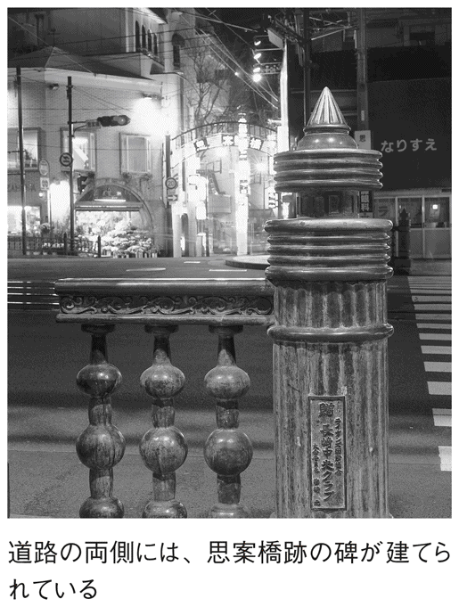
岐阜（岐阜県岐阜市）
織田信長が中国・周の発祥地と孔子生誕地にちなんで命名
美濃国・金華山の頂に最初に城が築かれたのは、鎌倉時代のことだ。美濃は古来、畿内から東国への交通の要衝だったが、鎌倉幕府が開かれてからは、軍事的拠点としての重要性が増した。
そして、幕府の執事を務めた二階堂氏が砦を築いたのが、山城のはじまりだった。戦国時代になると、美濃の守護だった土岐氏を討った斎藤道三が居城とし、稲葉山城と呼ばれた。
娘を尾張国の織田信長に嫁がせ、天下統一の夢を彼に託した道三だったが、隠居後は息子・義龍に討たれてこの世を去る。
盟友関係がとぎれた織田信長にとって、美濃は尾張からの上洛のためにはぜひとも攻め取っておきたい土地。義龍・龍興親子を攻略して一五六七（永禄十）年、稲葉山城を居城とした。
そのときに信長が考えたのが、城の名前の変更だった。天下統一のために拠点とするには、使い古された名ではなく、新鮮で縁起のよい名が必要だったのだ。この時代、武将の個人名も、地名や城の名も、変革の象徴として変えていくのは当たり前だったからでもある。
そこで、中国・周の文王が「岐山」で立って国を興したという故事、学問の祖である孔子の生地「曲阜」にちなみ、城の名に「岐阜」を選んだ。また、井之口村と呼ばれていた稲葉山城下の一帯も改め、「岐阜町」とした。
改名に際して信長は、信頼する禅僧・沢彦に相談をもちかけたという。沢彦は、井之口一帯の別名として使われることのあった「岐山・岐陽・岐阜」の三つを挙げたため、そのなかから縁起のよい岐阜を選んだというわけである。
能古島（福岡県福岡市）
外難に備え、皇后が神霊を「残した」島
博多湾に浮かぶ「能古島」は、現在はキャンプ場や海水浴場があって福岡市民の身近なレジャーランドになっている。しかし歴史をたどると、同地が由緒正しい土地であることがわかる。
それは、この島の産土神である白鬚神社が教えてくれる。
ここは奈良時代の創建と伝えられ、祭神は住吉大神、神功皇后、志賀明神などだ。島の名前も、神功皇后が住吉大神の神霊を残していったため「残島」と呼んだことに由来するという。
神功皇后は、朝鮮半島攻めの神話で知られる女性だが、彼女の残した神霊により、九州沿岸は攻めてくる外敵に備えることができたのである。
古代に、この島の北に位置する也良に防人が置かれたことは『万葉集』に残された歌からもわかり、平安時代の刀伊の入寇（一〇一九＝寛仁三年）の際にも守りの拠点となった。鎌倉時代の文永・弘安の役では、蒙古軍に攻められながらも、大きな被害にならずにすんでいる。
そして、江戸時代に入ると、要塞としてよりも、廻船業の寄港地となって繁栄をみた。古代から「能許」「能挙」「能巨」「能古」「野古」などと書かれてきた地名も、この時代には「残島」で統一されていた。
それが、一九四一（昭和十六）年に福岡市と合併するときには、由緒ある能古島に改められている。
淡路島（兵庫県）
交通の要衝だったために「道」と呼ばれた島
『古事記』や『日本書紀』で伝えられる「国生みの神話」には、イザナギノミコトとイザナミノミコトが、天の沼矛で混沌とした地上をかき回し、次々と島をつくっていく様子が記されている。
そのときに、天の沼矛から落ちた最初のひとしずくが固まったのが「オノコロ島」で、これが「淡路島」のことだと伝えられている。記紀の著された時代から、すでにこの島は重要な土地と認識されていたことがわかる記述だ。
本州側の島にもっとも近い須磨・明石の海岸線からは淡路島の島影がのぞめ、その巨大な姿は陸地と見まがうほどだ。そして、その遠景には、うすく霞んだなかに四国の山並みを見ることができる。
古代にも、こうして淡路島が島であることを知ったに違いない。平安時代には、すでに四国とのあいだに船便が開通していて、そのとき淡路島は重要な寄港地だったようだ。
京の都から四国へ向かう船は、阿波国の港に入った。その阿波への道（路）の途中にこの島があったため、「阿波路」と書いて「あわじ」と呼んでいたのが、やがて淡路島という名に変わったのである。
江戸時代は阿波藩領とされたが、幕末維新の混乱のなかで分藩騒動が起こったため、兵庫県に編入されてしまう。これは、「あわじ」の名をもつ島には不運な出来事だったのかもしれない。
壱岐島（長崎県壱岐市）
朝鮮への海上交通の要衝「ゆき」の島
長崎県壱岐市にある「壱岐島」。島の周囲には、五つの有人島と一六の無人島が存在している。『古事記』の国生み神話の「伊伎嶋」、またの名を「天比登都柱の神の島」という。
古くから、対馬島とともに日本と朝鮮のあいだの海上交通の要衝として重視されてきた。
別名は「天一つ柱」で、海中の孤島の神格化ともされている。
古書の表記では、「伊伎」「伊吉」「由吉能之麻」「壱岐」「壱伎」など、かなりバラバラだ。
読み方も一定せずに「いき」「ゆき」に分かれていた。
また、鎌倉期にも「ゆき対馬」と記され、豊臣秀吉の書状にも「ゆき」とあるらしい。
「ゆきのしま」と呼ばれることが多かったのは、海上交通の要となっていたことなどにより、「往きの島」という意味があるからではないかという説が有力だ。
なお、この他にもかなりたくさんの説があって、『古事記』の「伊伎」から神嘗の斎居を語源とするという説や、柱材を「支」と数えることから島の形を一本の丸太に見立てたとする説、そして、このあたりの荒い潮の泡沫が「雪」のように見えたからという説まで、じつにバラエティに富んでいる。
花咲（群馬県片品村）
ヤマトタケル伝説、「石に花が咲く」
「花咲」と書いて「はなさく」と読み、その字のごとく、まさに「花が咲く」ことが、この地名の由来だという。
ただ、花ならどこの地に咲いても不思議はないのだが、ここ片品村には、「石に花が咲いた」という伝説がある。これは日本神話に基づくもので、ヤマトタケルの東征のときの話である。
ヤマトタケルが当地を訪れたとき、近くの山に悪勢と呼ばれる魔力をもつ神がすみつき、悪事をはたらいてはその地の村人を困らせていた。
そして、ヤマトタケルがこれを成敗したところ、悪勢の娘も自害して果てた。彼女の従者はこれを悲しみ、あとを追うように死んでしまうと、その魂が石となって残った。花が咲いたと伝えられるのはその石である。
ところが、これには後日談があり、石に悪勢の悪霊がとりついたのか、その後も村は、疫病がはやるなどの不幸に襲われる。そこで、石を供養し、花咲明神として祀ると、村には穏やかな暮らしが戻ってきた。以来、この石を「花咲石」、土地を「花咲村」と呼ぶようになったという。
これは、江戸時代に書かれた地誌『上野志』が伝えている物語だ。
なお、現在その花咲石は、片品村の登戸という集落の一隅に、石と同じくらいの高さの鳥居で守られ、苔むしながらも現存しているという。
堺（大阪府堺市）
地名の由来はそのものズバリ、「境界」だった場所だから
大阪市に隣接して大阪湾に臨む「堺」は、仁徳天皇陵などの史跡があり、古代から文化の開けていた土地であったことはいうまでもない。
しかし、なんといっても特筆されるのは、中世において日本では珍しい、自由都市の建設に成功したという点だ。
室町時代後期から戦国時代にかけて、守護大名たちの勢力争いが巻き起こった。そのようななか堺では、商人が率先して自治的な組織をつくり、傭兵で町の守りをし、自給をおこなったのだった。
そして、その繁栄に目をつけた織田信長に堺の自治は破られ、当地の商人たちは豊臣秀吉によって大坂移転を命じられている。だが、鉄砲製造、西洋医学などの知識吸収と、茶道や能楽の大成などの文化面とで堺の果たした役割はとても大きい。
堺に繁栄をもたらした大きな要因は、海に面して開けた町だったため、ポルトガルなど外国との交易に便利だったことだ。
また、淀川や大和川から流入する土砂が、港に最適な地形をつくり出していたためでもある。
こうして開けていった都市が、「さかい」という名で諸史料に顔を見せるのは、一〇四五（寛徳二）年に編まれた歌集のなかだが、一〇八一（永保元）年になると「堺」という漢字表記がみられるようになる。
これは、和泉堺という地名で、ここが和泉国と摂津、河内のちょうど国境に位置したことからの命名だといわれている。
紀尾井町（東京都千代田区）
三家の大名屋敷があった町
東京のＪＲ中央線四ッ谷駅から赤坂見附の交差点方面に向かうとき、外堀通りの左手に広がっているのが「紀尾井町」である。
ここは、江戸時代に紀伊徳川家、尾張徳川家、彦根藩井伊家の大名屋敷があった場所。明治時代になって町名を決めるとき、この大名三家の頭から一文字ずつを取って、紀尾井町という地名が付けられた。
現在は、外堀沿いにあった尾張徳川家の跡地は上智大学に、井伊家跡地はホテルニューオータニになっていて、大名屋敷の敷地面積の広さをうかがわせている。
そして、濠に築かれた土手を背にして尾張徳川家と井伊家のあいだの坂道を下ると、いまは跡地に赤坂プリンスホテルなどが建てられている紀伊徳川家の裏手に出る。
この坂道は、江戸時代から「紀尾井坂」と呼ばれてきた。
下りきった坂道は、右手に清水谷公園があり、そこから上りに転じて「清水谷坂」と呼ばれるが、じつは、ここは明治時代に入ってから悲劇が生まれた場所でもある。
一八七八（明治十一）年五月十四日、清水谷坂を下ってきて紀尾井坂の上りにかかろうというところで、時の参議で内務卿を兼務していた大久保利通が暗殺されたのである。
大久保暗殺の四年前には、紀尾井坂を上りきったところで右大臣岩倉具視が襲われるという事件も起こっていた。このとき岩倉は、濠に飛び込んで急場から逃れたという。
いまでは閑静なたたずまいを見せるこの坂道に、当時の悲劇の跡をしのぶことはもうできない。
赤坂（東京都港区）
茜草が生える迎賓館の坂を「赤根坂」と呼んでいた
東京都港区にある「赤坂」という地名は、徳川家康が江戸に入府したのちに一般的になったもので、当時は現在の「元赤坂」一帯の地名だったようだ。
一五六七（永禄十）年に開拓されて人継村という山畑だった土地を、家康が伊賀の者に与えて一木村と書き、人が住むようになったようだ。
赤坂というのは、その一木村に実際にあった坂道の名称で、いまの紀伊国坂のことをそう呼んでいた。そこは、赤坂見附から迎賓館に向かうなだらかな坂だが、その坂道には茜草が生えており、坂道一帯の丘陵地は赤根山と呼ばれていたという。
それが、そのまま赤坂という地名になるのだが、集落の名として地図にはじめて赤坂と記述されるのは、一六五七（明暦三）年の地図からとされる。ただし、現在の港区側ではなく紀伊国坂を挟んだ千代田区側にある。
それが、やがて一木、溜池などの付近の土地すべての頭に赤坂を付けて呼ぶようになっていく。
明治維新後には、いまの港区西北部が赤坂区という独立した区として扱われた時代もあった。戦後になって麻布区、芝区と合併して現在の港区が誕生し、赤坂はそのなかの町名となり、しかも元赤坂一、二丁目と、赤坂一～九丁目という広範囲の地名に成長したのである。
阿倍野（大阪府大阪市）
古代豪族・阿倍氏が支配した広大な原野
大阪の「阿倍野」には、その昔、阿倍寺があったと伝えられ、古代の豪族・阿倍氏にちなんだ名前と考えられている。その歴史は弥生時代にはじまったといわれており、これは、もっとも有力な説である。
歴史上の登場は、『後鳥羽院熊野御幸記』。一二〇一（建仁元）年に「阿倍野王子」で初見している。また、平安末期の様子を記した『平治物語』にも阿倍野が見える。
平安末期、ここは、難波、四天王寺、阿倍野を経て和泉国に至る交通の要地であった。また、有名な大坂冬の陣では、徳川家康が阿倍野に本陣を構えていたといわれている。
「あべの」の表記には、古代からバラツキがあり、「阿倍野」「安倍野」「阿部野」などがあったのだが、一九四三（昭和十八）年に、もとの住吉区から分区して阿倍野区が誕生したときに、区役所の土地台帳が「阿倍野」の字を用いていたので、この文字で統一されることになったという。
大正時代以後は、大阪のなかでも住宅地として発展し、近年は、ＪＲ、近鉄、大阪環状線など、主要電車の乗り入れの多い一大ターミナルを形成し、大阪市南部の玄関口として発達している。
安曇野（長野県安曇野市）
北九州発祥の、安曇氏の名を残す北限の地
「安曇野」といえば、臼井吉見の著作『安曇野』や、白馬、美ヶ原、松本などの本州の山脈地帯の代名詞でもある。ここは美しい高原のイメージのある地名だが、意外にも、その由来は北九州なのだという。
安曇野は、もともと地元では「安曇平」と呼ばれる地域であったのだが、昭和四十年代に、臼井氏の『安曇野』の出版がきっかけとなって、全国に知れわたることになった。
安曇野の「あづみ」とは、この土地を開拓した安曇氏からきているのだという。この安曇氏の起源は古く、『古事記』には安曇氏の祖先神はワタツミノミコトとホタカミノミコトであると書かれている。
さらに驚くのは、もともと安曇氏の発祥の地は、はるか南の北九州だということである。博多湾の志賀島には、現在も安曇氏が海神を祀った志賀海神社があり、社の神職はいまも安曇氏が受け継いでいるという。
安曇氏は、優れた航海術や稲作技術をもっており、古代の海人族のなかでも、もっとも有力な氏族だった。そのため、連という身分を朝廷から受け、航海術を活かして、中国や朝鮮などにも広がっていたと考えられている。
このことから、安曇氏がさまざまな場所に拡散していって、同じ北九州の福岡はもちろん、大阪や愛知、岐阜などの各地に、「あづみ」「あつみ」にちなんだ地名が残っているようだ。
そして、その北限が、この安曇野というわけだ。
神奈川（神奈川県）
いったいどこが水源地なのかわからない「上無川」
「神奈川」は県名にもなっているので、比較的よく耳にする地名だが、その由来については、じつはあまり詳しくわかってはいない。
諸説あるのだが、横浜市神奈川区の説では、その昔、区内に「上無川」という小さな川があったという。
この川の流れはかなり小さく、いつも水が涸れていて、ほんの少ししか流れていない。そして、水源地もどこかよくわからないので、「上が無い川」と呼ばれるようになったのだ。
それがいつしか「かみなしがわ→かみながわ→かながわ」と略されて、現在の呼び方になったのだという。
もう一説では、ヤマトタケルが東方へ赴いた際に、いまの神奈川の海辺である柚ヶ浦に船出の用意をした。そこが上無川だったのだが、そのとき、倭姫にいただいた宝剣が金色に輝いて川の水に映ったので、この地を「金川」と名付けたのだという。
そしてそののちに、源頼朝がこの金川をとても気に入り、
「金は西の方向を司るというが、西方は上にあたるし、皇城（天子のすむところ、都）にもあたる。これはまさに、上を大いに示す土地ではないか」と、「大いに示す」を「奈」という字にして「神奈川」とすべきだといい、金川を神奈川に変えてしまったのだという。
そのほかにも、古文書で、「狩野川」「かの川」「かな川」「神奈河」などと表記されているものもあるようだ。
等々力（東京都世田谷区）
谷沢川に「とどろく」という、その滝の音が由来
東京都世田谷区にある「等々力」という町は、東急大井町線等々力駅と尾山台駅周辺にある、自然豊かで閑静な住宅街である。
ところで、ここの地名はその昔、谷沢川に滝や川の流れる音があたり一帯に「とどろいて」いたことから付けられたというが、もちろんいまでは、そこまでの迫力はない。
ただ、いまでも南西部にある谷沢川が刻んでいる等々力渓谷は、都内に残る数少ない渓谷の一つである。
また、等々力不動（明王院）もあり、さまざまな自然景観や昆虫、鳥の生息地としては都内でも有名だ。
そして、この地にある不動の滝もまだまだ涸れることなく、現在も谷沢川に流れ落ちている。
現在はさすがにいないようだが、古くは各地から滝に打たれて行をする修行者が絶えなかったらしい。
なお、等々力渓谷は桜の名所としても知られ、不動堂が隣接する公園には、春には一五七本もあるという桜がいっせいに咲き誇り、あたり一面を薄い桃色に染めてしまう。
東京にあって、なかなかの自然を留めているこの等々力は、地名の由来にもなっているとおり、自然に深く関わっている土地柄なのである。

霞が関（東京都千代田区）
はるか遠くまで見渡すことができる関所
平安期より、歌枕の地として多くの和歌に詠まれている「霞が関」の地名の由来には諸説あるが、古くは、ヤマトタケルノミコトが蝦夷の襲来に備えて武蔵国に設けた関所が「霞ヶ関」だったため、そこから名付けられたという説が有力である。
この名の由来は、その関所から雲霞を隔てた遠方でも見渡すことができるということにあるようだ。
また、江戸期以前、荏原郡の東の境にあった奥州路の関名によるという説もあり、江戸期には坂名となって、汎称として用いられたようだ。
一八七二（明治五）年になってからは、ようやく東京府の町名・霞ヶ関になり、一九六七（昭和四十二）年の地名変更を経て、現在の霞が関といわれる地名になった。
現在は永田町とともに、日本の国政・行政をあずかる中枢が置かれる場所としてその名をとどろかせているが、ぜひともその地名の由来どおり、〝雲霞を隔てた遠方でも見渡すことができる〟ような透明性や品格高い政治・行政を、おこなってもらいたいものである。
ちなみに、この関所跡は現在も存在し、国土交通省の中央合同庁舎第二号館の桜田通り側に「霞ヶ関跡」の碑が建っている。
東京（東京都）
日本の首都・東京は、かつて「とうきょう」ではなかった!?
江戸幕府が倒れると、一八六八（慶応四）年四月の江戸城の無血開城を経て、新政府による新たな行政がはじまった。そして、まず七月におこなわれたのが、江戸を「東京」に改め、行政庁として東京府を置くことだった。
しかしこの名前は、現在のように「とうきょう」と読んでいたわけではなかった。それまでの都である京都を、西にある京の意の「西京」と呼ぶことにし、それに対して東の京という意味で「とうけい」と呼ばせたのである。
東京は「東亰」と書かれることもあったが、どちらも同じ「みやこ」という意味のため、当時の人はあまり気にしなかったようだ。政府の公文書にも亰の文字は使われており、朝日新聞も「東亰朝日新聞」という題字を一九四〇（昭和十五）年まで使い、「東亰日日新聞（現在の毎日新聞）」はさらにその三年後まで使いつづけていた。
東京都に至っては、一九一一（明治四十四）年から現在まで、東京市から東京都になっても編纂がつづけられている史料集のタイトルが『東亰市史稿』のままだという。
ただ、京・亰どちらの文字を使っても、当初の読みが「とうけい」だったことは、英文の公文書、絵葉書などに「ＴＯＵＫＥＩ」と表記されていることからもわかる。
この新地名は、当時の学者たちのあいだでは、あくまで東の京という意味の符号だから地名とはいえないと不評だったという。それでも、いつの頃から呼称が変わったのかハッキリしないまま、日本の首都・トーキョーは、世界に名高い都市として認識されているというわけだ。
大阪（大阪府）
小坂より縁起のいい大坂を、繁栄を願ってさらに改名
大坂の名が一躍全国的になったのは、豊臣秀吉がこの地に城を築いてからであった。
それ以前は、古代からの「難波」という地名はあったが、城の建てられたあたりは淀川河口に位置する、さびれた台地だった。
本願寺の宗主如が、この地に石山本願寺を設けたことに関する文書のなかに、はじめて大坂という地名がみられるが、それ以前は「小坂」「尾坂」などと書いて、発音は「おさか」「おざか」だったといわれている。
これは、如上人が「小」よりも「大」のほうが縁起がよいというので文字を変えたとも伝えられるが、秀吉が変えたとする説もある。
如上人が本願寺を築いたよりもっと派手な大坂城の築城で、この地名が全国的なものになったことはたしかだろう。また、文字が「大」に変わったことで「おさか」「おざか」という本来の地名が、「おおさか」「おおざか」に変わっていったのだろうというのも想像できる。
ただ、この時代では「さか」の字には土偏の「坂」が使われていた。それが現在のこざと偏の「阪」に変わるのは、明治時代に入ってからだ。
土偏は「土にかえる」というのが死を意味するように、土は死に結び付きやすい。それよりもこざと偏には「繁栄する」という意味があるから、発音も同じということで「大阪」が正式地名となったのである。
巌流島（山口県下関市）
勝ったのは宮本武蔵、名を残したのは佐々木小次郎
江戸初期、戦国乱世が終わって、せっかく磨いた武術の腕を発揮する場所を失った腕自慢の浪人は、少なからずいた。彼らは武者修行と称して各地で決闘を繰り返しながら名を上げ、運がよければ仕官への道を得ることになる。
そんな時代の武芸者のなかで現代まで名を残したのが、宮本武蔵と佐々木小次郎である。二人の決闘というはっきりした事実だけをもとに、武蔵側、小次郎側から、それぞれ小説が書かれたり映画や舞台が創作されたりして二人の人生を浮き彫りにしようとしている。
武蔵の場合、『二天記』『五輪書』などの著書から、いくらかの人生と人間性をうかがい知ることができる。しかし、一方の小次郎は生年も生地も不明で、武蔵と決闘したとき、豊前小倉藩細川家で剣術指南役を務めていたらしいことだけがわかっている。
二人の決闘がおこなわれたのは、関門海峡に浮かぶ小島だ。ここは「巌流島」として知られているが、正式な地名は「船島」という。
いまでは武蔵と小次郎の決闘にちなむ記念碑が建てられ、船が周遊して接岸もできる観光地だ。しかし、二人が決闘した当時は無人島。見届け役の細川家家臣が立ち会うだけで、見物人などの野次馬を入れないための選択だったと伝えられている。
決闘がおこなわれたのは、記録によれば一六一二（慶長十七）年四月十三日で、結果は誰もが知るとおり、武蔵に軍配が上がった。
しかし、「小次郎、敗れたり！」という、芝居などでおなじみのセリフどおりの結果に終わったものの、敗れてしまった小次郎のほうが、「身を捨てて名を取った」形となっている。
というのも、決闘場所となった船島の名が巌流島と名付けられたのは、彼の剣術がじつは、「巌流」と称するものだったからである。
八戸（青森県八戸市）
青森県八戸のまわりに一戸から九戸までの地名が並ぶワケ
青森県南東部の太平洋岸にある市の名前が「八戸」である。
さらに、南部に下って隣県を見てみると、岩手県内陸部には一戸（町）という地名があり、北に位置して二戸（市）がある。
そして、県境を越えてさらに北上すると、三戸（町）、五戸（町）、六戸（町）、七戸（町）という地名がほぼ一列に並ぶ。ところが、九戸（村）は南に下って一戸の東側の岩手県内にあるのだ。
四戸だけは欠けているが、三戸と五戸のあいだの距離が少し長いので、おそらくここにその地名はあっただろうといわれている。
それにしても、こう規則正しく並んでいると「戸」にはいったいどんな意味があるのか、疑問がわく。しかし、研究は古くからおこなわれているものの、これといった答えが得られたとはいいがたい。
鎌倉幕府の記録である『吾妻鏡』に、「陸奥国糠郡～戸」と記録されているのが、この地名の初出だ。糠部というのは、東北地方に設けられた郡だが、「糠」という字から馬に関わりがあるのではないかという説が唱えられている。馬に食べさせる「米ぬか」を指すと思われるからだ。
これは、馬産地として知られたこのあたりに、源頼朝が新しい郡を置き、九つに分けて牧場としたという説だ。また、中世の支配者だった南部氏が、牧場を柵で区切ったときの境のことだという説もある。
ただ、平安時代末期にはすでにあった地名だということから、九世紀はじめに先住民の蝦夷を北へ追いやった大和政権の文室綿麻呂が駐屯地に木戸を設け、中に民家を建てて柵戸とした名残という説もあるようだ。
さらに、蝦夷との関わりから、アイヌ語に原形があるとする説もある。川を意味するアイヌ語が変形して「ヘ」となり、それに「戸」の字をあてたというのだ。
蝦夷が川の流域ごとに分けた地域に、和人が自分たちのもつ言葉の番号をふったということで、これは「戸」を「こ」や「と」と発音しないことの説明にもなっている。
ミキモト真珠島（三重県鳥羽市）
世界初の真珠養殖の舞台は、企業名が島名に
世界ではじめて真珠の養殖に成功したのは、御木本幸吉である。それまでは、自然に貝が育んでくれるのを待つしかなかった真珠が、人の手を加えることで生産できるようになったのだ。以来、日本は良質の真珠輸出国としての地位を築いてきた。
御木本幸吉は、鳥羽港沖二〇〇メートルに位置する六〇〇メートル四方ほどの小島で真珠養殖の実験に取り組んだ。そして、その実験に成功するのは、一八九三（明治二十六）年のことだった。
この島は本来が無人島で、小島、相島などと書いて「おじま」「おうじま」と呼ばれることはあったようだが、鳥羽港の防波堤の役を果たしているだけの小島だった。それが、真珠養殖成功の地としてあまりにも有名な島になってしまう。
戦前は、真珠の養殖現場が見られるよう整備をおこなって、見学者を受け入れていたが、戦後は一般開放して観光施設化している。
名前もミキモトパールアイランドといった愛称が付けられ、いまでは島名も、ただの「真珠島」、あるいは「ミキモト真珠島」と呼ばれるようになった。
一九七〇（昭和四十五）年には港の陸地と結ぶ、全長約六三メートルの「パールブリッジ」も完成し、多くの観光客を集めている。
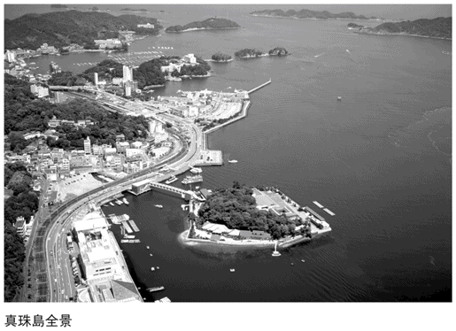
亀有（東京都葛飾区）
なんと「なし」を嫌がって「あり」に変えた地元の人々
ＪＲ常磐線沿線にある東京の下町「亀有」は、駅前交番を舞台にしたマンガの人気に乗って、すっかり全国区の地名になったが、近くを水戸街道が走るこの一帯は、江戸時代にはすでに交通の要衝として栄えていたという。
それ以前、室町時代の一三九八（応永五）年のこの一帯は、下総国葛西御厨の範囲と所領高を記録した史料のなかに、「亀無」「亀梨」という地名があるのが、おそらくいまの亀有のことだとされる。
また、一五五九（永禄二）年の小田原城・北条氏の支配下にあった時代の文献にも、亀無・亀梨とある。この頃は、葛西城の城下町としての繁栄をみていた。
東京の低地帯には、亀の背のような島状の高まりのある地形があちこちにみられ、そんな土地に亀の字をもつ名が付けられたというから、亀有もそのなかの一つだったと思われる。
それが江戸時代になると、亀梨（無）村も、水戸街道沿いの交通の要衝としての存在意義が増した。そんなとき、せっかく亀の名前が付いているのに、つづくのが「なし」では縁起が悪い。いっそのこと「あり」にしてしまおうというのが、村民たちの望みだったらしい。
そして、一六四四（正保元）年、江戸幕府が国内図を作成するときに、亀有に改名して認められたようで、『正保年中改定図』には「亀有村」の名が記されている。
宝塚（兵庫県宝塚市）
ものを拾ったら幸せになるという古墳がその名の由来
「宝塚」といえば、少女歌劇発祥の地であり、その大劇場があるほか、劇場を中心として家族向けの遊園地も設けられ、そのなかには天然温泉もあったという、まさにレジャー的なイメージの地区という印象が強い。
また、その半面で大阪市内へ通勤する人たちの住宅地も広がっているというユニークな郊外都市でもある。
そして、この地名は、当地のレジャー施設を生むきっかけとなった温泉施設設置のときに付けられたものだ。一八八七（明治二十）年のことである。
何かいい名前をと探しているときに見つけたのが、一七〇一（元禄十四）年、岡田渓志の著した『摂陽群談』という書物だった。
そのなかには、この地には「ものを拾ったら幸せになる宝塚という古墳がある」という記述があった。
これは土地ゆかりの説であり、宝塚という名前も縁起がいい。そこで、その温泉施設は、宝塚温泉と命名されたのである。
ただ、温泉があるだけでは、近くに有馬温泉という人気の温泉地もあるので、集客には結び付かない。
そこで宝塚温泉まで鉄道を走らせていた現在の阪急電鉄が、集客の目玉に少女歌劇のショーを発案した。それが、温泉よりも宝塚の地名を高めることになったのである。
一口坂（東京都千代田区）
土地の所有をあらわす記号「□」に由来したという一口
東京都千代田区神田駿河台に、「淡路坂」という場所がある。聖橋の南詰から神田川に沿って東に下る坂道だ。かつてはここを、「一口坂」と書いて「いもあらいざか」と読んだという。なんとも不思議な地名だが、いったいどんな由来があるのだろうか。
「一口」という文字は、かつて坂の上にあった神社を起源とするものらしい。一四五八（長禄二）年に太田道灌が、娘の疱瘡（天然痘）の治癒を祈願し、京都の「一口の里」の稲荷を勧請して建立したため、そこは「一口稲荷」と呼ばれた。それにちなんで一口坂という地名ができたのだという。
また、同じ一口坂という坂は、千代田区九段北三丁目と四丁目のあいだを新見附橋のほうへ下る場所にもある。こちらも明治以降に「ひとくちざか」という読み方に変わったものの、それ以前はやはり、「いもあらいざか」だった。
このように、「一口」を「いもあらい」と読むのは、一説には、「土地の所有」に関係しているのではないかとされる。昔は、土地の所有権を確定する場合に、そこに棒を立てて区画し、「□」の印を付けた。「」は境で、「□」はその土地をもらったことを意味する記号だ。つまり、「□」とは「地もらい」のことであり、そのうちに「□」の印が「一口」になり、「ちもらい」も「いもあらい」に転訛したというわけである。
静岡（静岡県）
かつては「静かな丘」ではなく「賤しい丘」だった
駿河国は、徳川家康が豊臣秀吉によって関東へ封じられる前に本拠としていた地だ。その縁で、隠居後の家康は駿府に城を築いて居城とした。
そこが現在の「静岡」で、古代には駿河国の国府が置かれていたことから「駿府」「府中」などと呼ばれていた土地だ。ただし、駿府と通称されてはいたものの、江戸時代の正式な藩名は府中藩であった。
明治時代になって廃藩置県がおこなわれたとき、たいていの県は旧藩名をそのまま県名として使った。にもかかわらず、府中は県名としては採用されず、静岡県という名が付いた。
たしかに新政府は、官軍に抵抗して賊軍となった藩には、県名や県庁所在地を決めるときに、旧藩ゆかりの名や城下町名をあえて避けたという実例はある。しかし静岡に関しては、旧徳川家色を一掃したいという思惑があって、まったく別名にしたわけではなかった。
廃藩置県に先立ち、将軍職を失った徳川家は駿府に移封され、後継者の家達は府中藩主となっていた。ところが、府中の読み方は音が「不忠」に通じると考えた家達は、現地にある賤機山の南の丘陵「賤ヶ丘」にちなみ、「賤丘」と名付けた。
しかし、藩の学者のなかには、いくらゆかりの名といっても「賤しい丘」では藩名としてはふさわしくないと提言する者がいた。彼は音だけは同じ「しず」でも「静」の漢字を使えば、幕末の争乱も静まった世らしくてよいのではと進言した。同時に「丘」の字も同音異字の「岡」にするようすすめたのは、画数が多くて「静」とのバランスがよいと考えたからだろう。
家達はこれをそっくり受け入れ、新政府に改名を申請して許可を得たため、廃藩置県に際してもそのまま静岡県が使われたのである。
吉祥寺（東京都武蔵野市）
お寺もないのに、いったいなぜ吉祥寺？
一六五七（明暦三）年に江戸を襲った大火は、「明暦の大火」「振袖火事」といった名称で語り継がれている。そして、その明暦の大火が生んだ地名が「吉祥寺」である。
江戸城天守閣まで焼け落ちるような大火事のあと、幕府は江戸の町の整備に着手する。だが、ここに振袖火事の特殊性がある。幕府は区画整理をして町を構築し直すために、放火でわざと江戸市中を焼け野原にしたのではないかという疑いがあるのだ。
吉祥寺誕生の経過を見てみると、その疑いの理由がわかる。
大火の火元となった本郷丸山町に近い本郷元町にあったのが、曹洞宗の吉祥寺だ。現在の水道橋付近である。
焼け落ちた吉祥寺は駒込村へ移転し、門前町を形成していた人々もともに従った。ところが彼らは、吉祥寺の門前を火除け地としてあけ渡すことを、幕府から命じられる。防火用地である火除け地は、大火のあとできた制度によるもので、彼らにすれば体のいい立ち退き命令だったともいえる。
そこで、住民のなかの農民や浪人の代表が相談し、その頃牟礼野と呼ばれていた五日市街道沿いの地に移住を決めた。一六五九（万治二）年のことである。
彼らは武蔵野台地を切り開いて新田とし、その地に自分たちの出自となった吉祥寺という名を付けたのだが、寺がないのに地名には入っていることからもわかるように、門前町の人たちの思いがこもった地名だったのである。
五年後に吉祥寺村が検地で石高八〇八石と定められたときの家数は六四軒、人口一七四人前後と記録されている。これは門前町まるごとの移動ということになる。
新幹線（静岡県函南町）
新幹線が通る静岡にある「新幹線」という地名
東海道本線函南駅から西南へ一キロほど離れた地域は、「新幹線」という地名で呼ばれている。もちろん、行政区画としての町名ではないが、新幹線区公民館があり、バス停にも幹線上、幹線下などがあって、土地の人たちにはなじみの名称であることがわかる。この名称は、国土地理院発行の地形図では一九六九（昭和四十四）年二月二十八日発行のものから掲載がつづいている。
また、この地名は、東海道新幹線開業に合わせて生まれた地名とすれば年代的にも合致する。しかし、東海道新幹線は新幹線地区から一・五キロも離れた地点を走っていて、位置関係は函南駅よりも遠い。
これは、地名の誕生が東海道新幹線とは関係のないことを示すものだ。
新幹線という地名は、たしかにこれまでにないスピードで走る列車にちなんで付けられた。しかし、それは戦前に計画された弾丸列車を指すものだ。
時速二〇〇キロを超えて東海道線を走る列車が計画され、そのための新丹那トンネルの掘削工事が開始されたのは、一九四二（昭和十七）年のことだった。熱海市と函南町にまたがるトンネル工事の作業従事者のためには函南町に専用の住宅が建設され、その住宅区域がいつしか新幹線と呼ばれるようになっていったのである。
時は戦時下。弾丸列車という名前より、新幹線という呼び名のほうが親しみやすかったのかもしれない。
ただ、その後、戦争のためにトンネル工事は中断されることになる。工事が再開されたのは一九五九（昭和三十四）年になってからで、現在の新幹線トンネルとしての掘削継続だった。新幹線地区の住宅にまた居住者ができたのも、この年からである。
トンネルが貫通し、新幹線が営業開始してから四十年以上が過ぎたいま、新幹線地区はどこにでもある郊外住宅地の姿を見せている。
高知（高知県高知市）
水害に悩まされ続けた人々の思いが込められた地名
土佐の「高知」の地名は、江戸時代に藩主を務めた山内家の二代目藩主、忠義の命名によると伝えられている。
現在の高知市は、土佐湾から切れ込むような入江の浦戸湾に立地している。そこに広がっている平野は、浦戸湾に注ぐ鏡川と江ノ口川が押し流してきた土砂が堆積してできたものだ。
当時この地は、「河内」「河中」と書いて「こうち」と呼ばれていた。文字からもわかるように、かつては海底だった部分が陸地化していた土地だけに、地盤は軟弱だった。
山内家が土佐に転封されてくるまでそこの領主だった長宗我部元親も、この地に城を築こうとして断念したといわれている。
しかし、海と川で水運には便利、入り込んだ湾は防衛上も都合がいい。やはり築城には最適だと考え、初代の一豊が一六〇一（慶長六）年に居城を築いたのである。
しかし、それでも水害に悩まされつづけたため、二代目になって「こうち」と音は同じでも文字を変え、「高智城」としたという。
それが、いつの頃からか簡略化され、「高知城」になったのである。
土佐藩は、改名をよくしたようで、いまは鏡川となっている川も、最初は潮江川という名前だったらしい。それを五代目藩主・豊房が「影を映すこと鏡のごとし」という言葉にあやかって改名したものだという。
歌舞伎町（東京都新宿区）
歌舞伎座もないのに、いったいなぜ歌舞伎町なのか？
「歌舞伎町」といえば、東京の繁華街でも独特の雰囲気をかもし出す歓楽街である。清濁あわせ呑む街で、正しく遊べば思いがけない楽しみに出会えるが、一つ間違うとトンデモない目にあう可能性を秘めた街でもある。
ところで、そんなあやしげな街に、どうして「歌舞伎」などという日本の伝統芸能の名前が付けられたのだろうか。かつて歌舞伎座があった場所だからなどというゆかりはないが、じつは、歌舞伎興行とは縁がなくもない。
現在の歌舞伎町一帯は、第二次世界大戦前までは角筈と呼ばれた土地である。表通りは新宿通りでにぎわっていたが、角筈は学校や小さな民家と商店が入り交じった街並みだった。
それが戦災ですっかり焼けてしまい、戦後すぐに復興計画が打ち出された。その際にリーダーとなったのは、かつての角筈町会長である。彼は、新しい遊興街の青写真を描く。それは、銀座と浅草をミックスしたような、庶民の楽しめる新しい街づくりであった。
そこで、街の核になるものとして歌舞伎興行が打てる劇場建設を計画。ほかにも映画館、演芸場、ダンスホールなど、建設計画は次々と広がっていった。
そして、そのための区画整理も終わった一九四八（昭和二十三）年、新しい町の名を決める段になって選ばれたのが、歌舞伎町だったのである。歌舞伎興行のおこなわれる劇場に、復興の夢をのせたことによる命名だった。
しかし、戦後の物資不足の時代である。建築資材も足りなければ、工事に携わる職人たちへの賃金支払いすら満足にできないまま、計画は尻切れトンボとなってしまった。
それでも新宿の復興は進み、歌舞伎とは縁がないものの、混沌とした新しい形の遊興街へと成長したのがいまの姿なのである。
香川（香川県）
この県はなんと、かつて二度も消滅したことがあった
以前は「香川」というと、もちろん四国の県だとはわかるものの、正確な場所を即答できる人は多くはなかったかもしれない。しかし、近年では「あ、昔の讚岐のことね」とわかる人が増えたという。これは、当地の名物、うどんのもたらした成果といえよう。
とこれで、この「香川」という地名の由来については諸説あり、樺の古木が川に落ち、辺り一帯がその木の香りに満ちていたことから香川となったという説や、香川の「香」は温泉の香りのことで、「川」とはその温泉のことだとする説などがあるようだ。
現在の香川県は、その旧讚岐国を県域としている。ただ、この形に落ち着くまで県は二度も消滅し、現在はなんと「三代目」の香川県である。
じつは明治維新まで、讚岐には高松・丸亀・多度津・津山の各藩があり、小豆島のような天領もあった。これらの藩領は、維新と同時に新政府に振り回されることになる。
まず、天領が一八六八（明治元）年に倉敷県となったのにはじまり、旧藩は離合集散を繰り返しながら、一八七二（明治五）年に旧讚岐国がそのまま香川県となった。これが初代香川県である。
ところが、県域が狭かったこともあり、翌年には名東県を名乗っていたいまの徳島県に吸収される。しかし、徳島域にあった吉野川治水費用の負担で税率が上がったのを理由に分県を主張し、一八七四（明治七）年には独立をする。これが二代目香川県である。
その後、府県の財政確立には県域が広いほうが有利との政府判断で、香川県は、今度は愛媛県に吸収されてしまう。こうして、二代目香川県はわずか十一か月で終焉を迎えたのである。
それでも香川県民は、独立を願った。一八八三（明治十六）年に独立を政府に願い出て辛抱強く待ち、一八八八（明治二十一）年になってようやく香川独立を勝ち取ったのだった。これが現在の三代目香川県である。旧讚岐国域をそのままに、日本でいちばん面積の小さい、そして最後に誕生した県というわけだ。
千歳（北海道千歳市）
箱館奉行が「鶴は千年」というありがたい言葉にあやかった
北海道の空の表玄関、新千歳空港を擁しているのが千歳市だ。ここは、古代から蝦夷地の交通の要衝として開けていた。北海道最古の、旧石器時代の遺跡も発見されており、早くから人が住み着いていたことがわかる。
中世以降、先住民であるアイヌ民族と和人との交易がおこなわれるようになると、それに合わせてサケ漁のための番屋も設けられた。
その頃の、当地のアイヌ名は「シコツ」。大きな河谷あるいは窪地といったような意味で、近くを流れる川も「シコツ川」だったようだ。シコツの名が日本の文献にはじめて登場するのは一六六〇（万治三）年の『福山秘府』という書物で、そこでは「志古津」と万葉仮名風に漢字があてられている。
徳川幕府が箱館奉行を置き、交易がさらに盛んになると、アイヌ名は幕府側にとって混乱の原因となったのだろう、一八〇五（文化二）年に奉行を務めていた羽太正養が、「千歳」という和名を付けた。「シコツ」を漢字で書くと「死骨」となるというのも、漢字をあてるだけでなく改名した理由だった。
地名の由来は、川にもシコツ（支笏）湖にも鶴が多く飛来していたためで、「鶴は千年」というめでたい言葉にあやかったものであった。
福井（福井県福井市）
「福」が「居」る場所・福井は、とても縁起のいい土地だった
「福井」は、かつて「越前北庄」と呼ばれ、戦国武将の柴田勝家が居城を置いた地の城下町である。しかし勝家は、織田信長亡きあとの家臣団の争いで豊臣秀吉と対立。北庄城は落城し、勝家も自害して果てた。
その豊臣家から関ヶ原の戦いで権力の座を奪った徳川家康は、この地に庶子の結城秀康を送り込む。一六〇一（慶長六）年に彼が築城したのも、やはり北庄城であった。
ところが一六二四（寛永元）年、改易された二代藩主・松平忠直に代わって転封されてきた三代藩主・忠昌（忠直の弟）は、北庄の「北」を「福居」に改め、「福居庄」と名付けた。つまり、「福の居る土地」というわけだ。
「北」は敗北や逃げの意味をもつ字だから縁起がよくない、兄の改易もそのせいだと考えたらしい。
ところが、せっかく縁起をかついだ改名だったが、福は居つかなかったようだ。一六八六（貞享三）年に、五〇万石から二五万石に減封され、松平家は越前国主から、ただの福居庄城主に格下げとなる。しかも、その通達書のあて名に、幕府役人が誤って「福井侍従」と記してしまう。
しかし、すでに大名として格下げになっていたため、福居松平家はこの間違いを幕府に申し出て訂正してもらうことを遠慮した。
以来、福井庄が通称として使われるようになり、一七〇一（元禄十四）年作成の国絵図から、正式に福井庄と書き込まれることになったのだ。
その後、いつのまにか「庄」が略されて福井城となり、明治維新後も、その名が地名として使われているのである。
勝山（福井県勝山市）
平泉寺を陥落させ、勝利の歓声をあげた一向一揆
北陸地方は、いまでも浄土真宗（一向宗）の信仰の厚い土地として知られるが、福井県勝山市は、その信仰から生まれた地名だ。
中世の宗教地図は、織田信長が比叡山を焼き討ちしたと伝えられていることからもわかるように、延暦寺がその勢力を広げていた。のちに勝山城下の町として発展することになる越前勝山地方も、平泉寺という延暦寺の末寺が長く勢力をふるっていた。
それが、一四七一（文明三）年、本願寺八世蓮如が吉崎（現・福井県あわら市）に御坊を開いて布教をはじめると、一向宗信仰はたちまち越前国内に広まっていった。
勝山地方は、先に一向宗が広まっていた加賀に近かったこともあり、一向宗の門徒が早くに一揆を起こした。
それは一五七四（天正二）年のことで、信長が越前領主の朝倉氏を滅ぼした機に乗じたのである。
越前支配に成功した門徒衆は、長年にわたって苦しめられた平泉寺を攻め立てる。
そのとき本拠にしたのが、平泉寺から四キロほど離れた村岡山だ。
一揆の結束は固く、平泉寺の攻略に成功した門徒衆は、本拠とした村岡山を「かちやま」と名付けた。やがて、これに「勝山」の文字があてられて、城が築かれることになるのだが、それは本願寺領となっていた越前を、信長がふたたび攻めて、柴田勝家の一族の支配にゆだねたあとのことである。
一向一揆は、これを嫌った信長によって征伐されたものの、一向宗の門徒たちの思いのこもった名前だけはいまに残っているのだ。
天王山（京都府大山崎町）
京都の小さな山が、勝敗の分かれ目の表現に使われるワケ
スポーツの勝敗、受験、あるいは意を決してのプロポーズなど、将来の命運がかかっている場に臨むとき、決まって引き合いに出されるのが「天王山」という言葉だ。
実在するこの山は、京都盆地の南、桂川と宇治川と木津川の三本の川が合流して淀川となる地点のそばにある小さな山の名前。標高はわずか二七〇・四メートルしかない。
ところで、この小さな山の名が人生最大の勝負どころともいえる場面で使われるのは、実際に二人の武将の運命を決めたことに由来する。その二人の武将とは、豊臣秀吉と明智光秀である。
天王山こそ、織田信長を本能寺で討った光秀に、秀吉が報復を果たすことになった山崎の合戦の主戦場となった山である。
「信長死す」の知らせを秀吉が聞いたのは、備中高松城を水攻めしている最中だった。
秀吉はすぐに和議にもち込んで京都へ引き返す。信長を討った光秀は、この秀吉の速攻を予見できずに信長の居城・安土城を攻めて意気揚々としていたくらいだった。
「秀吉戻る」の報にすぐ京都へ向かったが、光秀が出遅れたことは否めない。彼が天王山麓に陣をしいたとき、秀吉はすでに天王山頂上に陣取っていたのである。頂上からのほうが、敵陣の動きを判断しやすいのは当然だ。
そのため、山崎の合戦はわずか半日で終結し、光秀は逃走中に殺害された。秀吉はこの勝利を機として、天下取りに加速する。
ここからいわれはじめたのが「天王山を制す者は天下を制す」という表現だ。その後、これを短縮して「天王山」といえば、そこが重要な勝負の分かれ目になるという意味で使われるようになったのである。
此花（大阪府大阪市）
王仁が詠んだ「難波津に 咲くやこの花」の古歌から引用
大阪市二四区のなかでも、第二位の面積を占める此花区。近年では、「ユニバーサル・スタジオ・ジャパン」を中心とし、ウォーターフロントの立地を活かした再開発がなされている。
此花区の土地が大阪市となったのは、一八九七（明治三十）年四月の第一次市域拡張の際である。それまでは西成郡だった。
その後、一九二五（大正十四）年の第二次市域拡張によって当時の北区、西区の一部と合併、第一次此花区が生まれた。
さらに、一九四三（昭和十八）年四月の分・増区によって、福島・西野田の地域が福島区に分離され、西淀川区のなかの伝法・高見地区が編入されて、現在の此花区に落ち着いた。
ところで、この地名の由来は、その第二次市域拡張のとき、北区と西区から分かれて新しい区となるため、玉川、福島、朝日、野田、四貫島など新区名候補がいくつも挙がったが、その昔、王仁が詠んだとされている古歌、「難波津に 咲くやこの花 冬ごもり 今は春べと 咲くやこの花」から引用して、「此花」と名付けられたという。
千代田（東京都千代田区）
江戸城の別名「千代田城」は、太田道灌が地元の村名から採用
江戸の繁栄の名残は、かつての将軍のお膝元では多くの場所にみることができる。なかでも、現在でも丸の内、霞が関、永田町、皇居、大手町、有楽町と、日本にとって重要な多くの機能が集まっているのが、千代田区である。
ところで、その地名の由来だが、これはもちろん江戸時代からで、江戸城の別名「千代田城」からきているのだという。たしかに現在の千代田区の区域は、かつての江戸城の外郭をなす一帯に、ほぼ一致している。
麹町や神田も、かつては独立した区であったが、終戦で焼け野原になってしまい、かつて二〇万人もあった人口が、三万人にまで落ち込んでいた。
そこで、区の整理統合がおこなわれることになり、一九四七（昭和二十二）年に、麹町区と神田区は、ほかの統合区の問題をよそに、すんなりと千代田区に統合されたのである。
というのも、当時は三五区に分かれており、それを一二区、もしくは二五区にするという案があった。結局、審議を重ねて二二区案が可決されるのだが、どこの地区も新しく統合される区名を決めるのに喧々囂々。
合併する両者がどちらも譲らず、もめにもめている区が多かったのだが、もともとが千代田城下ということで意思決定がされている千代田区・麹町区・神田区の統合は、「千代田」ということで早々に決まっていたという。
なお、千代田城になる前の、千代田という名前の由来は、築城に適した土地を探していた太田道灌が、候補に選んだ三つの村の名前のなかから「末々繁昌疑ひなし」と考えて採用されたという（『御府内備考』より）。村名の由来は定かではないが、「千代つづく田んぼ」という意味なのだろうか。この地はいまもなお、日本の中枢として息づいている。
タタラ
日本各地に点在する地名「タタラ」の共通点
「多々良」「多田羅」など使われている文字は違っても、「タタラ」と発音する地名は、市町村名にこそないものの、日本各地にみられる。
地名でなく山の名を見ても、岩手県には「多々良山」や「多々羅山」「鑪山」山口県には「鈩山」などがあり、いずれもタタラ山と読む。埼玉県には「タタラの頭」という峰があり、福島県の「安達太良山」も、接頭語の「ア」が付いただけで、基本的にはタタラ山の仲間である。
このように、全国各地に点在しているタタラだが、もちろん語源はすべて同じのようだ。
そもそもこのタタラとは、金属溶融のときに炉に送風するために使う、足踏み式ふいご装置のこと。現代でも「たたらを踏む」という慣用句として言葉は残っているが、古代ではタタラは製鉄の代名詞でもあった。
なお、タタラに使われた燃料は木炭である。必然的に、タタラを据えて製鉄作業をすることができたのは、鉄鉱石や砂鉄が採れ、燃料にする木炭が豊富な土地ということになる。
現在タタラの地名が残っているのは、鳥取・島根・広島といった中国地方山間部、福島・岩手・宮城などの東北各県、福岡・大分・熊本といった九州の北部一帯だ。
これらの地方は、古代において製鉄産業に従事していた人たちが住んでいた土地だったため、地名としてタタラが残されたのである。
由比ガ浜（神奈川県鎌倉市）
相互に助け合う「結」を組織し、漁業に従事した由比郷の浜
鎌倉市の海水浴場である「由比ガ浜」は、現在は、相模湾に面した海岸の一部のことをいうが、かつては西の稲村ヶ崎から、東の材木座海岸までを指していた。
地名として史料に見ることができるのは、『吾妻鏡』一一八〇（治承四）年の条で、源頼義が石清水八幡宮を勧請したことを記したときのものだ。これが、のちに頼朝が鎌倉にゆかりを感じて幕府を開く遠因となるのだが、当時の鎌倉はひなびた漁村でしかなかった。
『吾妻鏡』は由比郷と記述してはいるものの、古代の律令制のもとで定められた名前ではなかったらしい。『吾妻鏡』が書かれた時代に、便宜的に郷を付けたと考えられている。
史料によっては由比を「由井」「由伊」「湯井」などと表記したものもあり、「ゆい」の地名にさまざまな字があてられていたことがわかる。
古代における地名の由来は、たいていが自然発生的な地形によるもの、あるいは状況変化や環境変化によって引き起こされた大小の出来事といったものが多い。その点で由比ガ浜の命名はまさに変化球といえる。
「ゆい」は労働者が互いに助け合う仕組み、組織のことを「結」といっていたことがもとだ。ここの海岸で漁業に従事する労働者たちが、助け合って収穫していたことで「結のある浜」が、由比ガ浜という名称になったのである。
鎌倉時代は、海岸は武術の訓練場になったり、平家落人の首実検や罪人の処刑の場、あるいは死者の埋葬場に使われるなど生々しい歴史も秘めている。だが、明治時代以降、海水浴場としてにぎわいを見せるようになったこの海岸に、その影も形もなくなっているのはいうまでもない。
錦江湾（鹿児島県鹿児島市）
島津家久が詠んだ和歌にちなんで名付けられた？
「錦江湾」は、鹿児島湾の別名である。薩摩半島と大隅半島に挟まれて深く入り込み、さらには桜島が突起していて、地図だけで見るとけっして美しい地形とはいいがたい。
ところが、この湾の内側、鹿児島市内から眺めた半島、島、海がつくり出す光景は、特筆すべきものらしい。島津氏第十八代家久が湾を眺めたときに詠んだ歌が、鹿児島湾に錦江湾という別名を与えることになったというのだ。
その歌は、「浪のおりかくる錦は磯山の 梢にさらす花の色かな」というもの。これは家久が、懇意にしていた僧・鳳山が結んでいた黒川近くにある庵を訪ねたとき、庵から見た光景を歌にしたものだという。
ところが、この歌にちなんだ命名という説に、多くの疑問が投げかけられているのだ。
まず、誰もが気付くのは、「錦」の文字はあるが「江」の文字は歌には使われていないという点だ。歌にちなむ命名という以上、歌のなかの言葉や文字を使うのがごく当然だからだ。
「江」は、揚子江などのように、大河に使われるもの。「浪」の文字があるから目の前の海を見て詠んだ歌のようだが、庵のあった黒川を指す可能性もある。しかし、黒川は小川にすぎず、「江」は似つかわしくない。
また、「江に洗う錦」という用例があることから、錦の文字につられて「浪」を「江」に転じて使ったとも考えられなくはない。すると「錦」のほうが主役になるのだが、果たして庵に「錦」にあたるものがあったのかという疑問が生じる。
錦というと、ふつうは紅葉のことだが、花と歌っているからには桜や椿かもしれない。ことに椿に関しては「錦」という園芸品種もある。これだけでは、庵の庭の椿が湾に映ったかどうか、湾の干拓も進んだいま、確認は不可能なのである。
このように、次々にわいてくる矛盾で、まさに研究書が一冊書けるくらいである。
南京町（兵庫県神戸市）
神戸の中華街は、なぜ「南京町」と呼ばれるのか？
日本が開国した幕末には、欧米人が続々と来日したが、当然、彼らには日本語がわからない。そこで通訳として伴ったのが、それまで清国との通商で英語の心得があった中国人たちであった。日本語が通じない中国人でも、漢字を使えばなんとか日本人との意思の疎通ができたからである。
ただ、一八七一（明治四）年に日清修好条規が締結されるまで、中国人は正規の来日ではなかったため、外国人居留地に住まいを構えることはできなかった。
いちはやく開港していた横浜では、居留地そばの埋立地にある横浜新田が、こうした中国人の住む町となった。そして、その後に来日する中国人たちもその周囲に住まいを構えた。こうして、人口の増加につれて町も広がっていったのである。
一方、同じように開港した神戸では、外国人居留地に隣接して中国人の住む町ができていったが、中国人たちは人口が増えると、日本人との雑居地に移住していくようになる。
当時の日本人は、欧米人を「異人さん」と呼んだのに対して、中国人は「唐人さん」や「南京さん」と自分たちの知っている地名で呼んだ。そこから生まれた町の呼称が「唐人町」であり「南京町」だった。
横浜でもこの名で呼んだ時代があったのだ。
日本に定住した中国人たちは、通訳だけでなく手先の器用さを活かして料理店や針仕事を請け負う店を開き、町は徐々に商店街となっていった。
ところが、戦後になって、唐というのは中国の古代国家名、南京も一地方名でしかないという理由で、横浜は中華街へと呼び方を変えた。
しかし神戸では、日本人との雑居地で暮らし、南京町という呼称にも親しみが芽生えていた。
そこで、あえて変更の必要なしというので、明治時代はそのままの名が使われていたようだ。
接待（長野県長和町・下諏訪町）
中山道の難所にある、旅行者にやさしい土地
江戸時代に整備された五街道の一つ「中山道」は宿場の数が六九次で、同じ江戸から京都まででも、東海道五三次より一六も多い。これは、木曽路という山道が含まれているからだ。とくに信濃国に入ってからは二六次、各宿場間も一～二里という短さだ。
しかし、そのなかでは、和田宿と下諏訪宿のあいだだけ五里一八町（約二三キロ）と長い。これは、途中で和田峠を越えるためだ。この距離と急な山道のため、峠の東側と西側に茶店が設けられて休憩ができるようになっていた。この茶店はいわば公設で、峠を管轄地域にもつ代官から手当の出る正規の休憩所だった。
それ以外に、峠の東側に公設の茶店とは別の休憩所が置かれていた。その場所が、いま「接待」という地名となって残っている。四国遍路の人たちに、地元住民が「お接待」と呼ぶふるまいをしたのと同じで、施行所と呼ばれた民間の接待所があったことの名残だ。
一八二八（文政十一）年、江戸で成功した商人が地元の世話役の協力を得て、道中奉行に施行所の設置を願い出たのが認められた。施行所にかかる費用は、商人が幕府に一〇〇〇両を貸し付ける形をとり、その利息を施行所運営の費用に使うという提案を、幕府が受け入れたのだ。
施行所では、馬のための飼葉、旅人や人足に粥を用意し、雪の深い冬の期間は暖をとるための焚き火もしたという。中山道のほかに東海道にも民間による施行所はあったようだ。箱根峠を三島へ下る途中に「接待茶屋」、遠江榛原郡の「摂待」も、その名残の地名である。
幸福（北海道帯広市）
アイヌ語の地名と開拓者の出身地が融合して生まれた
旧国鉄時代に、「愛の国から幸福へ」というキャッチコピーとともに人気を集めたのが、北海道帯広市にある幸福駅だった。同一路線内に二駅だけ離れて結ばれた幸福駅と愛国駅の名前が注目され、記念切符の購入者が駅を訪れたほか、日本全国から購入申し込みの手紙が殺到したのである。
いかにも苦労知らずのような地名ではあるが、その由来には涙が込められているといってもいい。
「幸福」の本来の地名は、「幸震」と書いて「こうしん」と読ませるものである。先住民族であるアイヌ民族によって命名された「サツナイ」という地名に、明治維新後、和人の文字である幸震の漢字をあてて音読みしていたものだ。
ちなみにサツナイとは、アイヌ語で「乾いた川」という意味になるのだそうだ。
その地に開拓者として入植したのが、福井県出身の人たちだった。戊辰戦争で奥羽越列藩同盟として戦った藩には、冷遇されたり新政府の政策についていけなかったりして北海道開拓に参加した人がいた。もしかすると、福井出身者のなかに、そんな人もいたかもしれない。
開拓した自分たちの土地に、もともとの幸震から「幸」の一字、故郷・福井の「福」の字を取って合わせ、「幸福」という新しい地名を付けた。厳しい環境のなかでの労働の結果で得た、懐かしいふるさとにつながる名ともいえるだろうか......。
現在、幸福駅のあった路線は廃線となっているものの、駅跡は公園となり、切符など幸福グッズの売り場もある。相棒だった愛国駅では交通記念館として蒸気機関車が保管され、用具類なども展示されている。
大泉学園町（東京都練馬区）
いまも昔も大学はないのに、「学園」という名が付くワケ
ＪＲ中央線の国立駅では、駅前再開発計画によって、利用者に親しまれていた三角屋根の旧駅舎が取り壊されることになったとき、駅舎の保存運動が起こって話題になった。その駅舎は、一橋大学を擁する学園都市・国立を象徴するものだったからだ。
国立ばかりでなく、大学があることで周囲に閑静な住宅地が広がり、町のイメージアップにつながっているところは多い。そのような場所では町名に学校名が使われていたり、駅名が「○○学園前」だったりすることも少なくない。
ところが、東京都練馬区の「大泉学園町」は、町名にも駅名にも「学園」が付いているのに大学はなく、過去にも一度も存在したことがない。それは、土地開発会社や鉄道会社による学園都市づくり計画の遺物だからである。
大正時代の末期から、ドイツをモデルに学園都市建設を計画したのは、箱根土地株式会社だった。現在の西武鉄道の前身である同社は、一九二五（大正十四）年、東京商科大学（現・一橋大学）の誘致を前提に、大泉学園町の土地を区画整理して売り出した。もとは畑や雑木林ばかりだった大泉村である。
上下水道と電灯を完備し、街路樹を植えた道路や公園が整備された、当時としてはモダンな街並みに、商店街の設置も前提として、鉄道の駅名も「大泉学園」として売り出したのだった。
ところがその後、大学の誘致に失敗してしまったのである。そのため、大泉学園はまさに名前ばかりの学園都市になってしまったというわけだ。
その後、箱根土地株式会社は北多摩郡谷保村と呼ばれていた地域を、大泉学園と同じ手法で売り出す。ここに東京商科大学が移転してきて成功したのだから、大泉学園町にとっては皮肉そのものである。そして、その谷保村こそ、いまの国立市なのである。
盛岡（岩手県盛岡市）
「不来方城」という名を改めた城の名前
「盛岡」は南部氏の城下町である。南部鉄器、南部馬など特産品の名前から南部藩と称されることも多いが、城名でもある盛岡藩が正式な名称である。
南部氏の先祖は甲州出身の武士で、鎌倉時代末頃から陸奥国糠部郡を支配するようになっていた一族だった。戦国時代は豊臣秀吉、徳川家康にそれぞれ臣下し、陸奥国での勢力を安定させていった。
そんな南部氏が、盛岡城築城をはじめたのは一五九七（慶長二）年だが、選んだのは、すでに不来方城主として南部氏に従っていた福士家の城があった場所だった。
ただ、城といっても中世城館づくりの平城で、南館と北館に分かれていた建物の南館部分を壊しての築城だった。そのようないきさつからか、南部氏は城の名前を改めている。
そのとき決めたのが、繁栄するという意味の「盛る」岡と書いて「もりおか」と読む名前で、それがそのまま藩名、地名となったのである。
また、この築城をきっかけに所領の九戸城を福岡城に、鳥谷ヶ崎城を花巻城にと、同時に縁起のよい字を使った名に改めている。
なお、盛岡という地名になる以前の「不来方」という名称は、天正年間（一五七三～一五九二年）頃から城の名として使われていたもので、館のあった地域の名、あるいは一帯を指す郷の名だったかは定かではないという。
大垣（岐阜県大垣市）
川の氾濫に由来する、住民たちの過酷な歴史を伝える地名
伊吹山や養老山地を望む大垣市は東を揖斐川、南を牧田川、西を相川という三本の川に囲まれ、市域にも杭瀬川、水門川など一三本もの流れが南へと下っている。
そのため、この地は昔から「水都」とも呼ばれてきたが、この名はけっして山紫水明の土地の姿をあらわすものではない。多くの流れは、しばしば洪水の原因となり、住民たちを悩ませてきたのである。
中世以降、住民たちは治水のための知恵を働かせるようになる。川の土手に高い堤防を築き、堤防に囲まれた土地を水害から守ろうとしたのだ。その土地が輪中と呼ばれる、この地域独特の地形である。
それでも揖斐川は大量の土砂を運んで川床を高くしたため、江戸時代の大垣藩は、治水が最優先の藩政だったという。
その藩名ともなった「大垣」という地名は、悩まされつづけた治水工事がもたらした名前なのだ。
古代から「オオガキ」と呼ばれていたこの地は、もともと大きな柿の実の産地だったことから「大柿」という字があてられていた。室町時代中期の一三四〇（暦応三）年の史料にも、大柿という地名が記されている。
それが大垣に変わったのは、そのあとに大規模な治水工事がおこなわれたためと考えられる。おそらく、高い垣根のような堤防が築かれたに違いない。
富士山（静岡県・山梨県）
二つとない山なれど、名前の由来は諸説乱立
「富士山」という名前の由来には、これでもかというくらいに、たくさんの説がある。誰もが、われこそは日本一の美しい山の名付け親だといいたいがために、それらの説をつくるのかもしれないが、これほど諸説が乱立していることも珍しい。
まず、ほかに比べようがない、唯一無二の高峰であるということから、「不二山」。さらに、山の頂に雪が絶えないという意味で、「不尽山」もある。ただし現在では、夏の富士山には頭頂部に雪がなくて青々としているのだが、地球が温暖化する前の時代には、一年中、冠雪していたのではないだろうか。
また、万葉集の歌人、山部赤人が「田子の浦ゆ うち出でてみれば真白にぞ 不尽の高嶺に雪はふりける」と詠んでいる。これは、尽きることのない雪に加え、「尽きることのない富士の大きさ」ということを表現したのかもしれない。
ほかにも『竹取物語』などでは、不老不死の伝説から「不死山」という説、「福寿山」といういかにもおめでたい名前が訛ったという説、同じようなあて字で「富慈山」という説もある。
諸説あるなかでも、現在の富士山という表記に関しては、鎌倉時代以降に発達した武士道の精神を受け、「士に富む山」という意味が自然な流れとして適当だとみられる。
なお、変わりダネとしては、アイヌ語の「フンチ（火の神＝火山）」や、マレー語の「フジ（すばらしいという意味）」からきたのではないかという説もある。
ちなみに、富士山が誰のものかなどと考えたことはあるだろうか。じつは、富士山八合目から山頂は浅間神社の民有地なのだ。正式には「富士山本宮浅間大社」といい、一九六八（昭和四十三）年には国とのあいだで争って、最高裁判所で所有が認められている。
恐山（青森県むつ市）
イタコで有名な霊山だが、その語源は「恐ろしい山」ではない!?
青森県の下北半島にある「恐山」といえば、「イタコ」でも有名な霊山である。そのネーミングと場所の雰囲気はピッタリで、地獄をイメージした血の池や三途の川、極楽浜などがつくられていることもあって、じつに不気味な雰囲気をかもし出している。
ところで、この山の名前は、当然「恐ろしい山」という意味なのだろうと思ってその由来を調べてみると、じつはそうでもないらしい。
恐山の別名は「宇曾利山」という。この「ウソリ」という言葉はアイヌ語が起源で、火の意味をもつ「アソ、ウソ、オソ」という言葉からきている。恐山も火山なので、この意味から「オソレ」と付けられたのではないかという説が有力だ。
ほかにも、同じアイヌ語で「くぼんだところ」を意味する「ウショロ」が、直径四キロもあるカルデラをあらわしているのではないか、また、陸奥湾に面していることから「湾内の村」を意味する「ウショロ・コータン」が語源なのではないかという説もあるようだ。
いずれにしても、漢字をあてたときには「恐ろしい」という意味をイメージするが、実際の語源とされる「ウソリ」「ウショロ」には、まったく「恐ろしい」という意味はない。
そもそもの開山は、八六二（貞観四）年、天台宗の慈覚大師円仁が唐で修行中に、夢枕に立った高僧に「汝、国に帰り、東方行程三十余日の所に至れば霊山あり。地蔵尊一体を刻し、その地に仏道をひろめよ」とお告げを受けたことによるのだという。
四万十川（高知県）
「四万川」「十川」をはじめ、たくさんの支流が落ち合う川
「四万十川」の源流は、その河口のほぼ真北、高知と愛媛の県境にある不入山にある。石灰岩地帯の四国カルスト台地、天狗高原などの東端近く、四国山地の一角、一一九〇メートルの地点から、大小三〇〇余りの支流を集めて蛇行をつづけ、太平洋へと注いでいる。
名前の由来はまさに、この支流の多さにちなんだもので、一八五八（安政五）年、江戸時代に書かれた『幡多郡紀行』には、「四万十川といふ事は数流落集るが、中にも津野山郷の四万川と十川と流れ合ふを以てかく云へるとぞ」と書かれている。実際、四万川と十川は現在も、四万十川の上流にある支流である。
また、アイヌ語の「シ・マムタ」が語源で、「たいへん美しい川」という意味だとする説もあるようだが、実際にアイヌ民族が生活したという痕跡などは確認されていない。
ところで、川の名称は、有名かつ一般的な四万十川以外に、「渡川」という呼び方もあった。前者は、国土地理院の地図で表記されたものだが、後者は建設省（現・国土交通省）での呼び名である。だが、全国的にも四万十川で有名になったため、一九九五（平成七）年に、四万十川で統一されたのだという。
ちなみに、四万十川は、河口までの全長が一九六キロ、流域面積は二二七〇平方キロに達する。四国では、もちろんいちばん長い川となっている。
青ヶ島（東京都青ヶ島村）
その昔は、男性だけが住んだ男ヶ島だった
親島である八丈島のことを古来、「女護ヶ島」といい、「青ヶ島」のことを「男ヶ島」というが、これは「徐福伝説」に由来している。
この伝説は、仙術をおこなう徐福が、紀元前二一九年、秦の始皇帝の命令を受け、不老不死の良薬を求めて、男女五〇〇人ずつを船に乗り込ませて船出をしたのだという。
ところが、船は途中で難破してしまう。そして、徐福は紀州の熊野地方へ逃れ、五〇〇人の女たちを乗せた船は八丈島に漂着し、一方、男たちを乗せた船は、青ヶ島に到着したという。
それ以来、八丈島には「女護ヶ島」という名が付き、青ヶ島には「男ヶ島」という名が付いたのだという。
ただし、男女が一緒に住んでしまうと、海神の祟りがあるというので、漂着したそのままに、男女は二島に分かれて暮らした。
そして、一年にたった一度だけ、温かい南風が吹いたときに、女護ヶ島の女たちは、自分でつくったわらぞうりに印を付けて浜辺に並べ、男ヶ島の男たちを待った。
それから、自分の印が付いたぞうりをはいた男たちを一夜夫と呼び、招き入れたのである。
そして、男の子が生まれると青ヶ島へ送り、女の子が生まれると女護ヶ島に残したという。これは、司馬遷の『史記』にちなんだ伝説である。
八丈島には、こんな男と女のドラマティックな伝説があったのである。
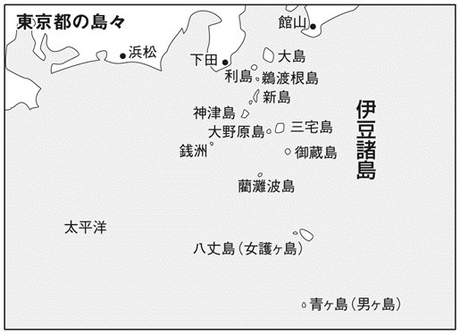
日本国（新潟県・山形県）
新潟と山形の県境には「日本国」という名の山がある
新潟県岩船郡山北町と山形県鶴岡市の県境に、おもしろい名前の山がある。その名は、「日本国」。山の名前なのに、日本国山ではなくて日本国なのだ。
摩耶山系の朝日連峰が日本海に向かって達する稜線上、標高五五五・四メートルのこの山の由来には諸説ある。
まず一つは、江戸時代に狩りの名手が見事な鷹を生け捕りにした。これを見た徳川家光が、「その鷹が捕れた山の名前を日本国とせよ」と言ったという説。
そのほか、鎌倉時代に、幕府に追われた皇子がこの地に隠れ住んでいたことがあり、皇子がいる土地として「山」ではなく、日本国といったという説もある。
そしてもう一つには、その昔、大和朝廷が武力で北へ北へと勢力を伸ばしているとき、蝦夷の勢力を押しのけて、その勢力圏の国境にあたる山に「日本国」という大和勢力のシンボルとしての名前を付けたのではないかという説もある。
これらの説の由来は定かではないが、いずれにしても、変わった地名であることには違いないということで、地元では、一九八七（昭和六十二）年から「日本国」という地酒も販売しているという。
信濃川（新潟県）
日本一長い信濃川は、じつは信濃を流れていない
日本一の長い川として名高い「信濃川」。当然、長野を流れている大きな川だと思ってしまうが、長野県を探してもこの川は見つからない。
じつはこれ、ちょっとしたパラドックスなのだが、長野県の山脈から流れ出す川の名前は千曲川。そして、この千曲川が新潟県境を越すと、信濃川と名前を変えるのだ。
長野県の甲武信ヶ岳の頂上付近にある水源から川は流れているのだが、その水源には「千曲川・信濃川水源地標」と書かれている。
だが、よく考えてみると、信濃（長野県）で信濃川と呼ばれず、越後でそう呼ばれるとはこれいかに、と、まるで禅問答のようなのだが、その由来は、「信濃から流れてくる川」という意味なのだ。
そう考えるとたしかに納得がいく。つまり、新潟の人からみると「信濃（から流れてくる）川」なのである。
一般的に川の名前に関しては、上流にある地域の名前が付けられることが多いので、その土地ではない名前が川の下流に付いているということは珍しくはない。信濃川の場合も、本流は千曲川ではじまって信濃川に合流するという形だが、同じ長野県の長野盆地付近では、北アルプスの山々を流れる犀川と合流している。
それならいっそのこと、統一してしまえばいいとも思えるが、一か所に留まっている水はない。その川岸は地域の人々にとってかけがえのないものであるから、便宜上で名前を統一したりはせず、そのままでいいのである。
日本一長い川の正体は、「千曲川と犀川が合流し、最後に信濃川になる」ということで一件落着というわけだ。
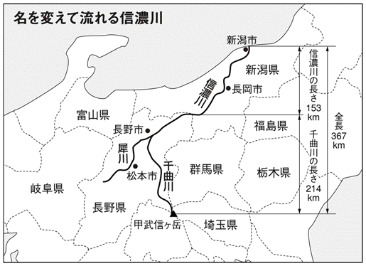
日本アルプス（中部地方・中央高地）
大阪造幣寮（局）勤務のイギリス人が命名した
飛騨山脈から木曽山脈、そして赤石山脈。これらは、本州中央部の南北に美しい山並みを連ねる山脈群であり、それぞれに北アルプス、中央アルプス、南アルプスと、美しい響きの名前で呼ばれているが、そもそも誰が「アルプス」と呼びはじめたのだろうか。
「日本アルプス」という地名は、大阪造幣寮（局）の技師であった地質学者ウィリアム・ゴーランドというイギリス人が、一八八一（明治十四）年に、『日本案内』という書物のなかで、飛騨山脈のことを指して表現したことにはじまるといわれている。
その後、一八八八（明治二十一）年に来日したイギリス人宣教師ウォルター・ウェストンが、飛騨山脈を踏破したことを帰国後、本にまとめた。その題名が『日本アルプスの登山と探検』というものだったので、「ＪＡＰＡＮＥＳＥ ＡＬＰＳ」の名が世界的に定着していったのである。
宣教師ウェストンは、日本アルプスを訪れたことのある登山家では誰も知らない人はいないというほどの有名人だ。毎年六月上旬の日曜日には、北アルプスの山懐に大勢の人々が集まり、「ウェストン祭」がおこなわれる。
これは、穂高岳を背景とする上高地の岩壁にはめ込まれたウェストンの碑を前にして、そのシーズンの夏の登山開幕を告げる山開きの儀式である。
登山者の安全を祈願しておこなわれる恒例行事だが、このウェストン祭という言葉が俳句の季語として認められるほどなのだから、日本の文化にもしっかりと根づいているのだといえよう。
九十九里浜（千葉県）
源頼朝が浜に刺した、九九本の矢に由来
「九十九里浜」は、砂浜の海岸線としては日本一の長さである。北の刑部岬から南の太東崎までの全長は、およそ六〇キロ。さすがに九十九里浜と名付けられるだけのことはある。
ところで、この「九十九」という数は、とにかく多いことをあらわしたいときに使われる数字で、幾重にも曲がる道を「九十九折り」というのが代表的な例だ。地名にも石川県の「九十九湾」、長崎県の「九十九島」などがある。
九十九里浜も同様に、やたら長い砂浜だったために、この名称になったのだろうと考えるのが妥当だ。
ところが、「九十九里」という距離は、実際に測定して出てきた数字なのだという。ただし、現在の一里を約四キロというメートル法で換算した数値だと、約六〇キロの九十九里浜は一五里ということになる。
換算は、古代の度量衡に基づいて六町を一里としておこなう。一町は約一〇九メートルだから、「一〇九×六×九九」を計算すると、約六五キロという答えが出てくる。これが、現在の九十九里浜の長さの近似値である。
砂浜は、堆積したり砂が波に運び去られたりして、歳月を経るうちに長さを変えることはありえる。やはり実測に基づくというのは真実かもしれない。
さて、その実測をおこなったのは、なんと源頼朝だったと伝えられている。砂浜の片方の端から六町ごとに矢を立てていくと、九九本目で反対の端になったので、九十九里浜としたのだという。
桜島（鹿児島県鹿児島市）
コノハナサクヤヒメを祀る「サクヤ島」
「桜島」の名前の由来には、諸説あるようだ。
ここで、そのすべてを簡単に紹介しよう。まず十世紀頃に、大隅守として京都から赴任してきた桜島忠信という人物の姓からとったという説がある。しかし、「いやいや、桜島という地名から姓をとって、桜島忠信にしたのだ」という逆の説もあるので、定かとはいえない。
このほかには、神話などに登場するコノハナサクヤヒメという女神が、桜島の五社大明神社に祀ってあるということから、このお姫様の名前を基にして「サクヤ島」から「桜島」になったという説もある。
さらに、古代の大噴火のときに、桜の花びらが海面に浮かんでいたからだという説まであるようだ。
桜島には、一五二六（大永六）年には、「向島」と呼ばれていた史実がある。これは薩摩藩の地図に記されているのだが、同じ地図の一五五〇（天文十九）年のものには、桜島と書き換えられていることがわかっている。
なお、桜島といえば、やはり噴火で有名である。その過去の大爆発は、文明溶岩、安永溶岩、大正溶岩などとなっていまに残っている。
なかでも大正溶岩は、桜島と大隅半島のあいだの瀬戸海峡（幅三五〇～四〇〇メートル）を埋め、島を陸つづきの半島にしてしまった。最近の一九四六（昭和二十一）年の爆発による溶岩は黒神集落を襲い、やはり海を埋めている。
この溶岩は「昭和溶岩」といい、噴出した火山灰なども雨風で流れ出して、「地獄河原」と呼ばれる荒野になっている。
天の橋立（京都府宮津市）
天へ椅をつくって立てかけたことに由来
京都府宮津市にある日本三景の一つ、「天の橋立」。その海浜の美しさは、まさに日本の風土そのものだが、海中に一本の橋のように砂嘴がつづくという景色はやはり珍しい。
そんな天の橋立の地名の由来は、『丹後国風土記（逸文）』にはこう記されている。
日本の国生みをなさったといわれる大神である伊射奈藝命が高天が原と行き来をするために椅（梯子）をつくって（天に向かって）立てかけなさった。よって天の椅立というのである。ところが、伊射奈藝の神が寝ておられるあいだにその梯子が倒れ伏してしまった。
このように、天の橋立の由来は神話の世界にあるようだが、この書物は鎌倉中期、およそ一三〇一（正安三）年以前に成立していた『釈日本紀』に引用されている。『釈日本紀』は『日本書紀』（七二〇年撰）の注釈書であるから、そこから考えると、伊射奈藝が天に通おうとしてつくった梯子が倒れてできたという伝承は、すでに八世紀頃からあったということになる。
実際、天の橋立が人々の注目を集めはじめたのは、平安時代のなかば頃という。天の橋立は、歌枕となるなど歌人たちにも愛され、数多くの歌集にその名を残している。
鴨川（京都府京都市）
京都の「かもがわ」は「鴨川」？「賀茂川」？「加茂川」？
京都の地図をよく見てみると、上賀茂神社や下鴨神社の西を流れる川は「賀茂川」となっていて、高野川と合流する出町柳より下流は「鴨川」となっている。神社や地名の「かも」も、「鴨」だったり「賀茂」だったり「加茂」だったりと、いくつも書き分けられているのだが、いったいどうなっているのだろうか。
川に関してのみまず説明すると、河川の管理上の河川法では「鴨川」が正式な名称で、これは京都府の決定事項となっている。だが実際には、あくまで正式な文書などの場合の統一であって、その他の場合においては不統一のままだ。
出町柳のあたり、高野川との合流点を境として、そこより上流を賀茂川と書き、そこより下流を鴨川と書くことが多い。
しかし、正式名は鴨川と決まっているのに、なぜいつまでもいろいろな表記の「かも」が存在してしまうのかというと、川の名前というより、上賀茂神社と下鴨神社の関係にも起因するようだ。
まず、このあたり一帯には、かつての大和から移住してきた豪族・賀茂氏の本拠地があった。賀茂氏は鴨氏とも書くため、氏神として二つの神社を建立した。この神社の名前から、高野川との合流点より上流を「賀茂川」、下流を「鴨川」と呼ぶようになった。もともとが同じものなのだから、そのままでいいということなのかもしれない。
なお、これ以外の加茂川は、賀茂川から転じたものだといわれている。
厳島（広島県廿日市市）
神によって清められたという「斎き嶋」
広島県廿日市市宮島町にある「厳島」。松島や天の橋立とともに、日本三景の一つとされている。
ここにある厳島神社は、市杵嶋姫命など三女神を祀っており、市杵嶋や、厳島神社の社殿に書かれている「伊都岐嶋神社」という名前や、神によって清められた地という意味の「斎き嶋」などの意味から厳島といわれるようになったという。
そもそも、島自体が神様の名前、聖なる地であることを示しているとされ、町名となっている「宮島」は、「神様の御屋」「お宮さんの島」という意味である。日本三景として崇められたのも、その美しさだけではなく、平氏の滅亡後もつづいていた厳島信仰のためであるともいわれている。
かつては、島そのものが本当に神として信仰されたので、島内での人の居住や出産はかたく禁じられていた。
現在でも、島内に墓や墓地はなく、人が亡くなった場合には、対岸の旧大野町に埋葬するのだという。
平安時代の末期に、平清盛が寝殿づくりをまねた社殿を海上に造営したり、十五世紀の建造といわれる五重塔や豊臣秀吉が建立した千畳閣などもあり、神の島として古くから大切にされてきたことがわかる。
地球岬（北海道室蘭市）
北海道から地球が一望できる場所!?
朝日新聞社主催の「北海道の自然一〇〇選」で第一位になったという、素晴らしい景観。北海道室蘭市・絵鞆半島の最南端にある「地球岬」だ。
この岬は、太平洋に向かって直角に突出した美しい形状で、新第三紀の安山岩や集塊岩が露出した、高さ約一〇〇メートルの断崖に囲まれている。
この断崖絶壁が、約一三キロもつづいているので、その壮大な景色を受け、地球規模のスケールの大きいところからの命名かとも思うところだが、実際には地球のように丸かったり青かったりするわけではない。
調べてみると、この地名の起源と地球そのものの意味は、まったく関係がないらしい。
この地域の古地図によると、この半島には「ホロ・チケウエ（チケップ）」と、「ホン・チケウエ」という二つの岬があった。アイヌ語で、その「ホロ・ホン」は「大きい・小さい」という意味で、「チケウエ」は「チ・ケ・プ」が訛った「岬」という意味だ。
つまり、「大きい岬」に「小さい岬」という意味だったものが、「チケウエ」のほうが残って、「チケウエ→チケウェ→チキュウェ→チキュウ」と転訛したようだ。
そこに、「地球」という字があてられて、地球岬というグローバルな名前ができあがったというわけだ。
隠岐諸島（島根県隠岐郡）
イザナギとイザナミが生んだ島々
「隠岐諸島」は、島根県北東部、日本海にある島嶼群である。島後水道を境にして東の円形の島を島後、西の知夫里島・中ノ島・西ノ島を島前と呼び、ほかに約一八〇の小島がある。
ここは古くから〝流人の島〟として知られており、後鳥羽上皇、文覚上人、後醍醐天皇などが流され、日々を過ごしたことでも有名である。そのため、黒木御所跡、文覚窟、後鳥羽上皇御火葬塚などの史跡も多数残されている。
『古事記』『日本書紀』によれば、イザナギノミコト、イザナミノミコトの二神が四番目に生んだという土地で、「隠岐の三子州」と書かれている。島後が親の島で、島前の知夫里島、西ノ島、中ノ島の三つが子の島ということだ。
この島同士の親子関係でいうと、島前の三つの子島に対して、島後は「沖の島」と呼ばれていた。これが、いつしかこの四島の総称として「おきの島」と呼称されるようになったという。
そのほかの説では、アマテラスオオミカミがこの島の四〇余丈もある大きな木を見て、「美しき御木だ」といわれたことから、「おきの島」と呼ばれるようになったという。
この両説が重なって、隠岐島と呼ばれるようになったことはたしかだが、なぜ、「隠岐」という字があてられるようになったのかは、現在もなお明らかになってはいない。
韓国岳（宮崎県えびの市）
宮崎の霧島連峰になぜか「韓国」があるワケ
九州は鹿児島県と宮崎県の県境に、どういうわけか「韓国」がある。
その場所は「韓国岳」といって、宮崎県えびの市にある霧島連峰の主峰で、霧島二三座のなかでも、もっとも高い山である。
標高一七〇〇メートル、その爆裂火口は直径九〇〇メートル、深さ三〇〇メートルもあり、この巨大な火口壁をひと回りするだけでもたいへんだ。
ふつうは「韓国」と書いてしまうと、誰もが「かんこく」と読んでしまうだろうが、この韓国岳の場合、読み方は「からくにだけ」となる。
しかし、この名前の由来はいったいどこからきたのだろうか。
もっとも有力な説は、霧島連峰でいちばん高いこの山は、当然見晴らしがよく、『古事記』にも、その展望はあまりに美しく、韓国まで見渡せると記されている。つまり、「韓国まで見える展望」ということで、この名前が付けられたのである。
ところが実際には、距離と標高から考えても、韓国を見ることは不可能である。実際に見渡せたかということよりも、そんな遠くが見えるほど素晴らしいという意味で名付けられたのだろう。
この山に登山する際は、宮崎県側のえびの高原からのルートが便利だが、鹿児島県側からは、林田温泉から大浪池を経由するコースもある。
ポンポン山（京都府・大阪府）
京都と大阪の境界には、冗談みたいな名前の山がある
子どもの絵本を読んでいるときなら、まったく気にはならないと思うのだが、ちゃんとした地図に出てくると非常に気になるのが、この「ポンポン山」という地名だ。
通称や俗称ではなく、国土地理院発行の地図にも京都府と大阪府の境に正式に出ているポンポン山。天気がよければ、山頂から琵琶湖までが見渡せる、とても見晴らしのいい山だ。
この地名の由来は、登頂してみるとよくわかる。山の頂上で足踏みをすると、〝ポンポン〟という音がするのだ。山頂の看板には、「この山は正しくは加茂瀬山といいますが、標高六七九メートルの山頂に近づくにつれて足音がポンポンと響くことから、通称ポンポン山と呼ばれています」と書いてある。
では、なぜそんな音がするのかという原因、まだハッキリとは解明されていない。
地下に鍾乳洞があるからという説や、地層内部に空洞があることを理由とする説、そして、山頂近くにある石灰岩の切り出し場の影響によるものだとか、どれも決定的な説はない。
ちなみに、ポンポン山という地名はこの一か所だけでなく、北海道川上郡や埼玉県比企郡にもある。まるで、童話にでも出てくるようなそのかわいらしい呼び名が人々に愛されて、正式名にまで昇格したというところだろうか。
男木島（香川県高松市）
源平合戦で那須与一が射た扇にちなんだ島名
香川県高松市にある「男木島」は、高松市から北に七・五キロのところに浮かぶ、平坦地の少ない島。南西部の斜面には階段状に集落が形成されており、近年は過疎化や高齢化も進んでいるが、一九五七（昭和三十二）年に、映画『喜びも悲しみも幾歳月』の舞台になったことでも有名な美しい風景の島である。
この島の名前は、その昔、源平の合戦で、弓の名手・那須与一が射た扇が流れ着いたということから、おぎ（おうぎ）島という名が付けられたのだという。
なお、南に一キロほど行ったところには女木島があり、こちらは桃太郎が鬼退治に行った洞窟がある島としても有名だ。しかし、どうやら最近では、修験信仰と結び付いた鉱山跡というのが有力な説となっており、桃太郎の影は薄くなりつつある。
かつては男木島と、この女木島の両島を合わせて、「雌雄島」を構成していたということだ。
五十里湖（栃木県栗山村）
「五十里」とは、江戸からの距離のこと
利根川水系の鬼怒川支流男鹿川に建設されたのが五十里ダムで、それに伴って誕生した人造湖が「五十里湖」である。
ダムの名前が五十里だから、付属湖が同じ名前になっても当然だが、ここはダムのほうが湖から名前をもらったという珍しい例だ。
現在の五十里湖は、じつは二代目で、初代は江戸時代に現在のダムの一キロほど上流にあった。一六八三（天和三）年に起こった日光大地震で、山崩れの土砂が男鹿川をせき止めてできた湖だった。
この湖のできた場所から、江戸日本橋までの距離がちょうど五〇里だったことから五十里湖と名付けられ、周辺の村も五十里村と呼ばれるようになる。ところが、四十年を経た長雨の年、湖は決壊して消滅した。
湖は消えたが、決壊が招いた大洪水は一帯に新しい環境をもたらした。水が削った谷は奇岩の峡谷となり、水が引いたあとに温泉が湧いたのだ。これが現在の竜王峡、そして川治温泉であり、鬼怒川観光の幅を広げているのだ。
近代になって一九二六（大正十五）年に、治水のためダムが計画されたとき選ばれたのが、五十里地区であった。当然のように名称は五十里ダムとなり、そして二代目五十里湖が誕生したのである。
刈込湖（栃木県日光市）
勝道上人が毒蛇を退治したという湖
南側に位置する標高一九四五メートルの三岳から流れ出た溶岩流が、沢をせき止めて形成したのが刈込湖だ。
ところが、せき止めてできた湖のはずなのに、どこにも水が流れ出る沢がないのだ。
それは、この湖が東側に並んでいる切込湖と六メートルほどの水路でつながっており、水量のバランスを保っているからである。
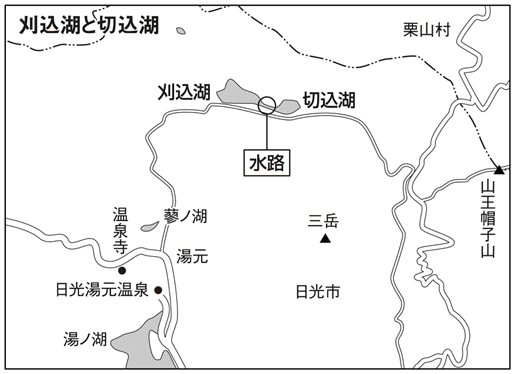
湖の長径は、刈込湖が六〇〇メートル、切込湖が四〇〇メートルで、水深はそろって一五メートルほどだ。
刈込湖は遠景に原生林を抱え、湖畔にはヤナギ林と砂浜も広がり、水遊びは無理でも、散策や湯元温泉からのハイキング途中の息抜きにちょうどよい。一方の切込湖のほうは周囲に原生林が広がっていて、道も整備されていないため、近づけない。
この原生林があったせいだろうか、かつて湖の近くには毒蛇が生息しており、恐れられていた。その蛇を日光の勝道上人が退治して、安全な湖になったという。
その出来事があってから、それまで狩籠湖と呼ばれていた名前が、刈込湖に変わった。
蛇は湖に刈り込めた、というところからの命名という。
宍道湖（島根県）
大国主命たちが猪狩りをした道
そもそも、この「宍道」という地名の由来は、『出雲国風土記』によれば、以下のとおりとなっている。
「所造天下大神命（アメノシタツクラシシオホカミノミコト）」「大穴持命（オホナモチノミコト）」「大国主命（オホクニヌシノミコト）」が狩りをされたとき、追いかけられた猪の形がこの郷の南の山に二つある。また、その猪を追いかけた犬の形もある。その形はどれも石になっていて、猪と犬とは見分けがつかないように同じ石である。それが現在でもそのままにある......。
（現代語訳・加藤義成氏）
以上のことから、「猪の像のある道」という意味で、宍道というわけだが、猪のことを「宍」というのは、この字に獣肉の意味があったからといわれている。大国主命たちが、「猪狩りを楽しんだ道」ということから名付けられた地名なのである。
現在、この地は宍道町と呼ばれているが、その昔、奈良期から平安、鎌倉期は宍道郷とされていた。
その後、江戸期から一八八九（明治二十二）年には宍道村となり、約四〇〇石の規模で栄えていた。
さらに、明治二十二年には意宇郡宍道村、一八九六（明治二十九）年には八束郡宍道村となった。
なお、「宍道湖」という呼称が決定するのは、明治時代に入ってからのことであった。
金時山（神奈川県・静岡県）
足柄の四万長者の娘・八重桐の息子が金太郎だった
童謡『金太郎』では、「♪あ～し～が～ら や～まの」と、金太郎の出身地が「足柄山」であることを、ちゃんと歌詞に歌い込んでいる。その足柄山とまとめて通称された足柄山地があるのが神奈川県と静岡県の県境で、金太郎伝説は、この地に古くから存在する伝説である。
その伝説では、足柄山中にある地蔵堂が金太郎の父祖の地ということになっている。
地蔵堂に住んでいた足柄兵太夫という名の四万長者が金太郎の祖父で、長者の娘・八重桐が酒田家に嫁いで身ごもったのが金太郎だった。ただ、八重桐は酒田一族の争いから足柄へ戻って、地蔵堂で彼を産んだ。
その後彼は、足柄山中でクマと相撲の稽古をして怪力少年に育つのである。
その時代に、金太郎が遊んだ長者の家の庭にあったという「かぶと石」と「たいこ石」は、いまでも地蔵堂地区に「金太郎の遊び石」として残っている。
このほか、長者屋敷跡は「金太郎生家跡」とされ、金太郎が産湯とした「夕日の滝」「八重桐の腰掛石」などもある。地蔵堂の堂内にある「山姥像」は、金太郎の母像だという。
そして、大江山酒呑童子退治で名をあげる、源頼光家臣の四天王のうちの一人、酒田金時は、成人した金太郎であり、かの怪力少年の後日談である。
足柄山地のなかの「金時山」が、彼の名をいまに伝えているというわけだ。
薬樹山（大阪府河内長野市）
薬草がたくさん生える素晴らしい山
大阪の河内長野市にある「薬樹山」延命寺の創建にたずさわったのは、もともとはあの弘法大師空海といわれている。そして、延命寺の冠に付いている薬樹山という山名は、古来からここの土地には薬草が多く自生していることで有名だったことに由来する。
ところで、この延命寺の周辺は鬼住村といわれ、鬼伝説がある。
その昔、泉に住んでいる男の鬼がいて、その鬼のことを泉の父鬼といった（その地名は現在の和泉市父鬼町になっている）。そして、この延命寺付近にはその妻が住んでいたのだという。
その昔、周囲の村人たちは、その鬼の行き来にさんざん迷惑をかけられたらしく、かなり困り果てていた。
いくらいってもお互いが往来することをやめなかった鬼に対し、ある勇敢な男が名乗りを上げ、弓矢で鬼を退治したという。
その勇敢な男の子孫が、浄厳和尚といい、この村に寺を創建して延命寺と名付けた人物なのである。
寺の本尊には、いまでもその鬼退治のときに使われたという弓矢が、大切に保管されているという。
この延命寺はたいへん紅葉が美しい寺としても知られており、境内にもたくさんのもみじの木があるが、樹齢千年ともいわれる有名な「夕照の楓」は大阪府の天然記念物にも指定されている。
面白山（宮城県仙台市）
ふつうの山なのに、なぜかおもしろい山
奥羽山脈の面白山連峰は、山形県と宮城県の分水嶺をなす、北面白山・大東岳・南面白山・小東岳を主とする山並みだ。
その源流は山形県側にあり、紅葉川流域である。
ところで、この山並みが「面白山」と呼ばれるようになったのは、意外にも近年になってからのことのようだ。
明治時代の人々は、その山の容姿から受けるイメージを感覚的にとらえ、北面白山のほうのことは「荷笈い山」「根生山」「匂い山」などと書いて「においやま」と呼んでいた。
まず、「荷笈い山」という書き方の場合では、稜線が馬の背の形のように真ん中あたりがやや低くなっている、荷を笈う（負う）感じの山並みからそういった。
また、「根生山」と「匂い山」という表記に関してはもっとわかりやすく、山の中腹にある根生沢の硫化鉱の匂いがただよってくることから、そんな呼び方が自然にできたらしい。
なお、それ以前からある古文書には、面白山の最初の語源があるが、たいへん残念なことに、特別〝おもしろい話〟でもなんでもない。
住民の、山に対する信仰心と、仏教伝来による仏教思想が民俗信仰として発達したということで、冬山の雪の美をたとえ、「面の白い清い山」という意味をもって、面白山という名前が誕生したのだという。
近頃流行の「お笑い」とはまったく無縁の地名のようだ。
天香久山（奈良県橿原市）
持統天皇が「衣ほしたり」と詠んだ山は輝いていた
「天香久山」は奈良県の中西部、橿原市東部にある小丘陵で、標高一五二メートル、ＪＲ桜井線香久山駅の南一キロの場所にある。畝傍山、耳成山とともに「大和三山」と呼ばれ、硬い岩盤の、侵食に耐えて残った残丘である。
また、この山は天香久山と書くだけでなく、香具山、賀久山とも記される。藤原京の東方を鎮護する神の山として、古来より崇敬を集めた歴史のある山だ。
地名の由来は諸説あるが、「かぐ」は「かがやく」（赫く）の意味で、「かぐわしい山」への信仰から発した古代語ともいわれている。
また、古くは『日本書紀』や『万葉集』にもすでに登場している。持統天皇は『万葉集』で、「春すぎて 夏来たるらし白たへの 衣乾したり 天の香具山」（『万葉集』巻一）と詠んだ。これは、百人一首でも親しまれている歌である。
『伊予国風土記』の逸文によれば、天の山が二つに分かれて地上に降りてきたとき、そのうちの一つが「伊予国の天山」となり、もう一つが、「倭の天香具山」になったという伝説が残っている。
天上から降りてきた神聖な山としての伝説があるので、天香久山の枕詞は、「天降りつく」となったのだ。
『古事記』（神代巻）によると、天香久山の鹿骨とハハカの木で占卜をし、『日本書紀』（神代巻）には、この山の五百箇の真坂樹をもって幣帛とするなど、つねに日本の歴史に残る書物に登場している。
女神山（福島県川俣町）
「女神」とは、崇峻天皇の妃「小手姫」のこと
福島県は地形的要素から浜通り、中通り、会津と分けられ、この三つの地域は、風土も歴史もかなり異なっているといわれる。
川俣町は中通り、阿武隈高地の一画に位置する町である。
そしてこの地に、そのなだらかな姿を見せているのが「女神山」で、標高五九九メートルの小さな山だ。いかにも女神が宿りそうな山だが、名前の由来は女神でなく「お姫様」である。
そのお姫様とは、第三十二代崇峻天皇の妃だった女性だ。夫が蘇我馬子によって殺され、聖徳太子が推古天皇の摂政となったとき、彼女は馬子の手を逃れて東北に逃げた息子を追って当地にやってきたという。
彼女は、息子に会えないまま当地で生涯を終えるが、大きな宝をもたらした。小手郷と呼ばれていた、いまの川俣町、月舘町に機織技術を伝えたのである。その歴史からか、この川俣町では、近世には毎月二回も生糸市・羽二重市が立ち、いまでも特産品は絹製品である。
彼女の死後、それを悼んだ土地の人たちは、亡きがらを女神山に葬った。その当時の山の名前はわかっていないが、このとき女神山と命名した事実は、地元の個人が所蔵していた文書に記されているという。その内容は、「小手姫の開きたる高山なるが為に一名女神山と称す」というものであった。
たしかに女神山には、いまも山桑の木がみられ、そのうちの一本は地元の風習と結び付いている。この桑の芽を少しだけ摘んできて、刻んだものを蚕のエサに混ぜると、良質のマユがとれるのだという。また、養蚕農家の主婦が山籠りをして技術上達を祈願する風習もあったようだ。
子持山（群馬県）
子どもを抱きかかえているかのような、その山姿
「子持山」は那須火山帯に属する成層火山で、裾野は渋川市、吾妻郡高山村、沼田市にまたがっている。標高は一二九六メートルほどだが、基底部は東西約七・五キロ、南北約九キロの山である。
この山の名前の由来はその山姿にある。中央の峰を周囲の尾根が取り囲んでいる姿が、まるで子どもを抱いているかのように見えるところから、そう名付けられたのである。
『万葉集』には、「児毛知山若鶏冠木のもみつまでねもと吾は思ふ汝は何どか思ふ」（第一四巻東歌未勘国の歌）と歌われている。
子持山が、女性的な山姿にちなんでそう名付けられたため、すぐ隣にある小野子山は、逆に山姿が男性的であることから、そのように名付けられたのだという言い伝えもある。
山中にある子持神社は、その名のとおり、古くから子育てや安産の守護神として信仰されてきた。ヤマトタケルノミコトの開基とも、九四四（天慶七）年の草創などとも伝えられているが、江戸時代までは、大乗院という修験の霊場でもあった。
現在の神明権現づくりの社殿は、一九五五（昭和三十）年に再建されたが、毎年五月一日の例祭日には太々神楽が奉納されるとともに、子持山の山開きにもなっている。
奇妙山（長野県長野市・須坂市）
長野盆地東方に同名の山が二つある
長野県内には、同じ漢字表記の「奇妙山」と「奇妙山」がある。
「きみょうさん」のほうは長野市にあり、長野電鉄松代駅の東四キロに位置する標高一〇九九メートルの山。尼厳山とともに長野盆地中央部に向かって半島状に突出する姿が印象的である。ここは、一九六五（昭和四十）年に発生した松代群発地震の震源地の一つともいわれる。
一方の「きみょうざん」は須坂市にあり、長野電鉄須坂駅の南東一二キロのところに位置する。四阿火山の一峰で、カルデラの北側の外輪山をなしている。
この山には、江戸時代に、国定忠治が上野から信濃へ逃げる際、大笹の関を避けてこの山を越えたという言い伝えがある。
この二つの山は、その読み方こそ違うものの、どちらも「奇妙」の由来に関しては同じようで、仏教の用語である「奇妙」、つまり、並外れていることや優れていることを意味している。
「奇妙」というと、現代では「変わっていること」や「不思議なこと」といった、あまりよくない意味に使われるが、これらの山の場合はそうではない。並外れた美しさや、優れていることを伝えたかったのではないだろうか。
堂々とした山の様子が、ほかの山よりも抜きん出ていたという意味あいが、この名前にあるからだ。
いずれにせよ、同県内、しかも同じ長野盆地の東方に同じ名前の山があるというのも、それこそまさに〝奇妙〟なことであろう。
大横川（東京都墨田区・江東区）
南北に流れる川なのに「ヨコ川」という不思議
東京都墨田区。この地には運河が縦横に整然と走っているのだが、その理由は、江戸時代に発生した「明暦の大火」による。この大火をきっかけにして、現代でいう区画整理のようなものがなされ、防火用水を兼ねた水路としてつくられた運河があるのだ。
そのため、地図に直線で描ける川が隅田川から引かれているのだが、その川の名前がちょっと不思議なものとなっている。
南北に流れる川が二本、地図でいうと、縦に流れているのにもかかわらず「大横川、横十間川」というように「ヨコ」の字が付いているのである。
どうせなら、大縦川か縦十間川でないとおかしいとも思うのだが、そのカラクリはこうだ。
現在、私たちが目にする地図は、南北を縦軸にして、上が北で下が南、右が東で左が西とおおむね決まっている。ところが、古代は東西が縦方向の中心軸だったのである。
なるほど、そうやって考えると江戸城から見たときに、大横川は横に流れている大きな川なのである。
しかし、なぜそうなっていたかというと、当時はお城や藩主を第一に考える風潮だったことによる。見やすさや方角云云よりも、まずは、藩主のいる城を地図の上部中央に据える。そして、そのまわりを書き込むというつくり方だったのである。
だから、江戸の景観図などはすべて西が地図の上、大坂図や伏見図、奈良図では東が上、横浜図では南が上、鎌倉図などでは北東が上になっている。そして長崎図などは、西北西が上なのだそうだ。みんな好き勝手に地図をつくっていたのである。
ちなみに、大横川と同じ理由で、現在の地図では横に流れているのに「竪川」という川もある。竪は縦の意味で使われているので「縦に流れる川」の意味をもっている。この竪川流域が現在の「立川」（東京都墨田区）となっているのである。
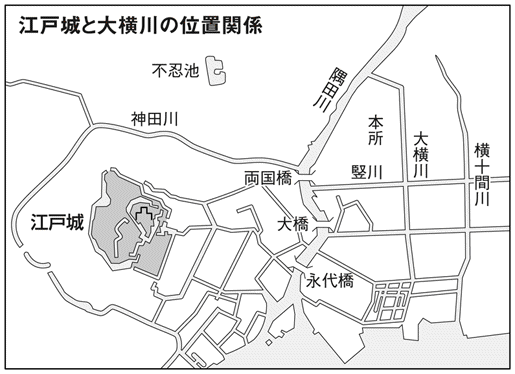
天野川（大阪府交野市）
平安時代の歌合わせでこの名が定着
大阪府の北東部、大阪と京都と奈良がちょうど境を接するあたりに位置するのが交野市だ。この立地からして、古代から開かれていた地であることはたしかで、条里地割の遺構がある。
一帯は「交野台地」と呼ばれ、平安時代以降は皇室の狩猟地となり、鷹狩りなどの行幸がたびたびあったという。おそらくお供をしたのだろう、宮廷人たちも、交野の地を歌に詠んでいる。
当時はサクラの名所だったことが残された歌からわかるが、現在の交野市は「星のまち かたの」をキャッチフレーズにしている。
キャッチフレーズを誘引したのは、市域を流れる淀川支流「天野川」をはじめ、星にまつわる地名や伝説が多いためだ。しかし、天野川そのものの名称の由来は、星とは無関係のようだ。
稲作文化が根づいた大和地方でも、この一帯はとくに稲の実りがよかったことから、「アマノ（甘野）」と称されるようになる。田を潤す水を供給する川も「アマノ川」である。条里地割の遺構が、稲作が盛んだったことをうかがわせる。
平安時代にここを訪れた宮廷歌人が、アマノを星空の「天の川」になぞらえる歌合わせをした。そこから川の名は天野川として定着したのである。
天野川に架かる「 合橋」も、七夕の夜の織姫と彦星の、年に一度の逢瀬からの呼称である。
合橋」も、七夕の夜の織姫と彦星の、年に一度の逢瀬からの呼称である。
織姫である棚機姫を祀ったのが、市内倉治にある機物神社で、彦星である牽牛を祀ったのが、隣接する枚方市にある中山寺だ。二人は毎年七月七日「合橋」で会っているに違いない。
渡良瀬川（栃木県日光市）
日光開祖の勝道上人が命名した「渡るに良い瀬」
栃木県日光市にある「渡良瀬」という地名、これはいったい何を「わたらせる」のか、「わたらせない」のか、なんとも気になる地名である。
そもそも、地名の意味は「渡るに良い瀬」という意味だ。そのままといってしまえばそれまでだが、「浅い川なので渡るにはとても安全でよいところですよ」という意味なので、冒頭の疑問は、「わたらせる」ということだったと一応の解決をみる。
ところがこの地名、じつは日光開祖の勝道上人によって命名されたのだという。
あの森高千里の曲でも有名になった渡良瀬橋は実在する橋だが、その橋が架かっている「渡良瀬川」は、そもそも先にあった渡良瀬という地名にちなんで付けられた名称である。
この渡良瀬川は、かつては太日川と呼ばれ、千年前には現在と違うルートを流れていた。江戸時代に、徳川家康が埼玉地方の平野の開発に着手して、船による東北地方との経済交流、そして、江戸を守る外壁になるという目的から、利根川の川筋を、渡良瀬川、毛野川（鬼怒川）、常陸利根川と合流させて東へ変える工事をさせた。
「東遷」というこの大工事では、膨大な開発計画を伊那忠次という人物が担い、伊那家は三代にわたってこの事業に取り組み、完成させた。
いまでは、渡良瀬川は利根川の支川ということになってしまっているが、昔はまったく違って、利根川と平行するように流れていたという。もし、家康が東遷をおこなわなかったら、関東地方の川の流れは現在とはまったく違っていたかもしれない。
乙女の滝（栃木県那須塩原市）
蛇の化身だった盲目の美女に由来
平成の大合併で誕生した那須塩原市の旧黒磯市板室温泉近くにあって、清らかな姿を我々に見せてくれるのが「乙女の滝」だ。
白笹山から流れてくる沢名川にできた滝は、幅五メートル、落差一〇メートル余りで、けっして規模の大きいものではないが、じつに見ごたえがある。季節によって周辺の景観が変わり、水量も変化し、まるで乙女心のように、くるくる変わる姿を見せるのだ。
しかし、名前の由来は、滝の見た目ではない。それは、美しい姿の盲目の乙女が滝の上にあらわれたことによるという。
滝に釣りに来ていた村の青年が、帰ってから、乙女に出会ったことを村人に伝えた。これが広まり、乙女の滝と呼ばれるようになったという。
しかし、乙女は現実の人間ではなかった可能性もあるという。乙女の滝から沢名川をさかのぼった地点の沼ッ原湿原にある子守石には、盲目の蛇にまつわる昔話が伝わっている。乙女は、その蛇の化身ともいわれる。
肘折温泉（山形県大蔵村）
肘の骨折も治してしまうという温泉
「肘折温泉」のある山形県最上郡の大蔵村は、霊峰・月山への登山口にある村だ。そのために古い時代から修験のために霊場に登る僧が多く訪れた。そして、そのなかの一人が発見したのが肘折温泉で、八〇七（大同二）年のことと伝えられている。
発見のきっかけは、まさに修験道場ならではのもの。修行中に崖から落ちて肘を骨折した僧が、村を流れる銅山川の川辺に湧出する温泉を見つける。その湯につかると、すぐに痛みがとれ、骨折も治ったのだという。
そこから肘折温泉の名が生まれたのだが、温泉の効能はたちまち評判を呼び、月山参拝とあわせて湯治客でにぎわうようになる。そして、温泉地としての発展をみて今日に至るというわけだ。
この温泉は、昔ながらの湯治場の形式をいまも残しており、自炊しながらの長逗留が可能な宿もある。また、そうした客のための朝市も、毎日開かれているという。
ちなみに、二〇〇七（平成十九）年には、開湯一二〇〇年を迎える。また、毎年七月になると、「開湯祭」が開催されている。
八郎潟（秋田県）
十和田湖・田沢湖も舞台の、秋田「八郎太郎伝説」
一九五六（昭和三十一）年、面潟村と一日市町が合併した町が八郎潟町である。町としては比較的新しいのだが、八郎潟自体の歴史は古い。
その昔、もちろん「八郎潟」が存在していた頃に合併がおこなわれたのだが、『町政白書』によれば、
「悠久幾千のいにしえから紺碧をたたえた静寂な八郎潟があり、栄枯盛衰のなか、私たちの大地は八郎湖畔に位置し、産業も文化も八郎潟とともにあゆんできた。今、八郎潟は干拓され、美田に変貌せんとす。この湖を愛惜し、往古からの歴史を象徴し、両町村が合併するにあたり八郎潟町と命名する」
とうたわれている。
「潟」という字は入っているものの、面潟村と一日市町のどちらにも偏った感のない、昔からの伝統を守った合併名だ。平仮名や片仮名にしてみたり、新しぶる合併市町村名が多いなか、かつての地域のシンボルを使い、歴史を感じさせてくれるのがいいところである。
その八郎潟町の「八郎」という名前は、十和田湖、八郎潟、田沢湖を舞台にした三湖伝説の主人公「八郎太郎」に由来しているという。
八郎潟の主、八郎太郎という人物の伝説は、ヘビに化身して、自ら湖の主になったというものだが、その内容は複雑である。かつて十和田湖の主であった八つの頭をもつヘビが、法力によって南祖坊修験者に追われて八郎潟に移り住んだという伝説、田沢湖の女王の伝説など、いろいろな物語が組み合わさっている。
現在、八郎潟周辺では、八郎太郎の伝説と並んで竜神信仰が盛んで、雨乞いの行事などとよく結び付いているようだ。
経ヶ峰（三重県津市）
山の頂上に眠る、長野家の家臣が埋めた「大般若経」
三重県津市にある「経ヶ峰」には、いまなお数々の伝説が残っているという。とくに有名なのは、名前の由来ともなっている「般若経」の話。
かつては安濃ヶ岳と呼ばれていたこの山の山頂には、長野家の家臣であった近藤左金吾という男が埋めた、「大般若経百巻」が眠っているという。このありがたいお経が眠っている山ということで、それ以来、経ヶ峰と呼ばれているのだ。
この山にはいくつかの登山道があるが、仲之郷から登った場合、比佐豆知菅原神社や草生城址、そして高野山創立以前は弘法大師空海が帰依していた常明寺がある。
また、経ヶ峰口から登っていくと、古くから、霊験あらたかな地蔵尊として地元の人々の信仰が深い、枇杷ヶ谷地蔵が見えてくる。
この地蔵尊は、高さ二メートル、幅一・五メートルほどの大岩に刻まれたもので、いまから千百五十年ほど昔、空海がこの地を訪れたときに彫ったものだという伝説がある。
仙酔島（広島県福山市）
酒を飲みすぎて島民に見つかってしまった間抜けな仙人
福山市南東部の鞆港から瀬戸内海に向けて広がる「鞆の浦」は、その景色の美しさで知られている。
瀬戸内海が古代から重要な交通路だったことを物語る伝承が各地に残るが、そのなかでも鞆の浦は抜きん出た数の伝説をもつ。
鞆港が交通の要衝だったためということもあるが、景勝地としての名声が響いていて、この地にまつわる伝説を生み出したようだ。
鞆の美しい景観に彩りを添えているのが、鞆港から渡し舟で五分という近さの仙酔島で、この島にも伝説がある。
鞆の浦に浮かぶ面積一平方キロ足らずの小島には、かつて仙人が住んでいたという。
あるとき彼が酒を飲みすぎ、酔っ払ったあげく人間に見つかってしまう。このエピソードから、島は「仙酔島」と呼ばれるようになったというのだ。
仙人が酒を飲みながら景色を眺めて酔っ払ったのだとしたら、酔ったのは酒ではなく景色にだったのかもしれない。
宮城道雄作曲の箏曲『春の海』はこの地でつくられたというが、鞆の浦の春のさざなみの、優雅でゆったりした様を容易に想像できよう。
なお、春はまた鞆名物のタイ漁の季節でもある。
名物桜鯛をつまみに酒を飲めば、仙人でなくても酔っ払うに違いない。
煙島（兵庫県南あわじ市）
「煙」は、源氏に敗れた平敦盛の遺体を火葬した煙
瀬戸内の淡路島付近から周防灘にかけては、源平の戦いにまつわる逸話が残されている地域だ。陸地に一ノ谷、海域に屋島、壇ノ浦といった源平の武将たちの勇ましい活躍、哀しい最期などが伝えられている。
淡路島南方の海上にある「煙島」も、そのなかの一つで、『平家物語』で語られる笛の名手で若き武将、平敦盛にゆかりのある島だ。
一ノ谷の戦いで源氏に敗れた平氏は、屋島に逃れる。しかし、敦盛は討たれてしまう。その敦盛の遺体を火葬にしたのがこの島だったといい、立ち上る煙に彼を惜しんで、煙島と命名したのだという。
いまでも煙島には、神話時代からの伝承をもつ小さな社殿のほかに、敦盛の首塚もある。島への定期便はないが、伝説を知って訪れる人もいる。
そんな人たちのあいだでは、首塚に触れると呪われると、ひそかにささやかれているそうだ。
また、異説として、煙はこの島から上がる狼煙のことだともいうが、これは海路としても漁労者の操業にしても、この島が要衝だったという歴史を示している。
碁盤島（石川県志賀町）
弁慶に負けて碁盤を投げた源義経
源頼朝が武家政権を樹立する過程で大きな力になったのは、間違いなく弟・義経だった。ところが、壇ノ浦で平家追討に活躍したあとの義経は、後世の多くの物語が伝えるように、不運な人生を送ることになる。
頼朝が義経の力を恐れた、いや義経が軽率だった、後白河法皇の策略だ、義経は乱世の武将で平時の為政者にはなれなかったなど、現代の彼への評価はじつにさまざまだ。
しかし、とにかく義経は、反逆者として頼朝に追われる身となる。そのときに逃避先に決めた奥州平泉への義経の経路は、日本海側の北陸道だった。そのため、加賀・能登には義経伝説が数多く残っている。
そのなかでもいちばん知られていて、能や歌舞伎の題材にもなった「安宅の関」は、現在の石川県小松市にある。
安宅の関での義経は、弁慶に打ち据えられながらもひたすら耐えたが、能登金剛に残された義経主従の逸話では、義経は横暴者として描かれている。
主従のエピソードが残るのが、旧富来町にある「碁盤島」だ。名前の由来となったのは、逃避行中の義経と弁慶が、ここで碁を打ったからなのだという。
そのときに何番勝負をしても一度も勝てなかった義経は、腹を立てて碁盤を投げつけた。碁盤島にある池のなかには、碁盤形の岩があるというから、それがおそらく義経の投げた碁盤の変身した姿なのだろう。
三四郎島（静岡県西伊豆町）
恋に落ちた源氏の若武者・三四郎
伊豆は平治の乱で敗れた源氏の正嫡・源頼朝が、若くして流された土地で、のちに北条氏の援助で挙兵した地である。それだけに源氏一族にまつわる史跡があちこちに残っている。
なかには、歴史の表舞台に顔を出すことはなかったが、一族として伊豆の地に名前が伝承されている人物がいる。それが、若武者・三四郎だ。
彼は、西伊豆町の堂ヶ島にその名を残す。
伊豆半島西岸の堂ヶ島で、駿河湾に向かって広がる湾に、象島・中ノ島・高島という三つの島が並んでいる。この三島の総称が「三四郎島」だ。ここは、潮の干満により島になったり陸と地つづきになったりすることで知られる。
源氏の若武者・三四郎は、ここに隠れ住んでいたとき、堂ヶ島側に住む娘・小雪と知り合って恋仲になったという。しかし、身を潜めた暮らしのなかでは、会うこともままならない。
そんなとき、潮が引いて地つづきになった陸から、小雪が忍んで会いに通ったという。干潮時には、約三〇メートル幅の砂浜ができて、島と陸をつなぐ。たしかにこれだけあれば、若い娘であっても足を濡らすことなく島へ渡ることができそうだ。
因島（広島県因島市）
隠れていて、よく見えなかった隠の島
広島県因島市。「因ノ島」とも表記されるが、その昔、八七八（元慶二）年には「隠島」と記されていた。
その名の由来と深く関わりがある、有力な三つの説をここで紹介しよう。
 神功皇后がこの島に立ち寄ったときに、一晩中犬が鳴いていたので「犬島」
神功皇后がこの島に立ち寄ったときに、一晩中犬が鳴いていたので「犬島」
 院の荘園があったので「院島」
院の荘園があったので「院島」
 尾道方面から、この島を見ようとすると、向島・岩子島・細島に隠れてしまってよく見えないので「隠島」
尾道方面から、この島を見ようとすると、向島・岩子島・細島に隠れてしまってよく見えないので「隠島」
たしかに、の地理的条件はもっともで、実際に昔はそう表記されていたというのだから、「隠れている島」という意味において、その名で呼ばれるようになったのは間違いないだろう。
ちなみに、ここ因島は、室町時代から戦国時代にかけて名を馳せた「村上水軍」の地で、水軍城がある。水軍時代の航海術や造船技術を活かし、江戸期は海運、明治に入ってからは造船で大いに栄えていたという。
楊貴妃（熊本県天草市）
楊貴妃が中国から逃れてたどり着いた地
熊本県天草市にある旧新和町。毎年十一月には、二日間にわたって「しんわ楊貴妃祭り」を開催している。
この新和町には、「楊貴妃」と書いて「よきち」と読む地名が実在し、そこには観音様が祀られている。古くから、楊貴妃にまつわる伝説が言い伝えられているのだ。
楊貴妃伝説とは、その昔、中国から逃れてきた楊貴妃が竜洞山の麓に住んでいたという伝説である。
あるとき、楊貴妃は村に流行した疫病に苦しむ人々に、自分がもっていた薬「楊貴湯」を飲ませて救った。最初は名を名乗らなかったが、その後、楊貴妃は自らの身の上を村人たちに明かし、彼らと親しくなっていった。
だが、そんなある日、雷とともに龍があらわれ、楊貴妃を連れ去ってしまった。
それ以来村人たちは、楊貴妃の住んでいた場所を「よきち」と呼んで楊貴妃をしのんだという。
新和町は、天草下島の東海岸に位置する、温暖な気候と素晴らしい自然に恵まれた土地である。豊かな自然と長い歴史に育まれた町民性は純朴で、人情味あふれる豊かな町だ。
その昔、かの楊貴妃も、きっと癒されたに違いない。
足摺岬（高知県土佐清水市）
地名表記は、作家・田宮虎彦の小説が起源
高知県の南西端、足摺半島の先端の岬である「足摺岬」。土佐清水市に属し、蹉と書いて「あしずり」と読んだり、あるいは、そのまま「さだ」と読んだり、さらに「足摺崎」などいくつかの表記もあったようだが、一九四九（昭和二十四）年の田宮虎彦の同名小説によって、「足摺岬」という表記が一般化したといわれている。
足摺岬の地名の由来は、鎌倉中期に書かれた『とはずがたり』のなかに出典がある。
そこには「天狗が蹉して逃げた」と書かれていて、蹉は「足を摺る」という意味なのだが、天狗には修験者という意味があるらしく、修験者が足を摺って逃げていったのだろうか、あるいは、蹉という字が読みにくかったためであろうか。
いつのまにか、同じ言葉の意味をそのまま表記した「足摺岬」のほうがとり入れられてしまったようだ。
同じ出典ながら、もう一説によると、「心憂く悲しくて、泣く泣く足摺をしたりけるにより、足摺岬といふなり」という記述があるのだが、作者は後深草院に仕え、〝女西行〟と呼ばれた女性。西国への旅の途中、宮島参詣ののちに足摺岬に向かう船中で聞いた話として、この一説が出てくる。
作者が実際に足摺岬へ行ったかどうかは定かでないが、その当時、すでにこの地名の起源説話が一般にも信じられていたことがわかる。
箱浦（香川県三豊市）
浦島太郎が竜宮城の帰りに玉手箱を開けた地
亀を助けて、竜宮城へ行くことを許された浦島太郎。地上へ戻ってきて玉手箱を開けてみると、一瞬にして時が過ぎ、年老いてしまう――。
全国的に見ると、この浦島太郎の舞台だという伝説が残っている土地は数多く、竜宮神社のある伊東市富戸、同じく竜宮神社のある河津町谷津、竜宮島のある下田市白浜の板戸、同じく竜宮島のある西伊豆町仁科と、静岡県の伊豆半島だけでも四つある。また、 京都府与謝郡の浦島神社、
京都府与謝郡の浦島神社、 長野県木曽郡の浦島寺などもある。
長野県木曽郡の浦島寺などもある。
ここで紹介する箱浦は香川県にあるが、浦島太郎が玉手箱を開けた場所であることから、その地名が付けられたという。
香川県三豊市には、浦島太郎にまつわるさまざまな地名がある。
太郎が生まれた里が「生里」、玉手箱を開けた場所は「箱浦」で、そのなかから出てきた煙が紫の雲となってたなびいた山が「紫雲出山」。箱浦だけにかぎらず、周囲にも浦島太郎伝説にちなんだ地名が多くある。
なお、箱浦には「うらしま公園」もあり、その公園内には、浦島太郎とその両親のお墓もあるという。
八王子（東京都八王子市）
牛頭天王が学僧妙行に、八人の王子を祀るよう託した
「八王子」という地名の由来は、本当にそのまま「八人の王子様」の話である。
その昔の平安時代、九一六（延喜十六）年に、華厳菩薩妙行という名高い僧侶が深沢山の山頂で修行をはじめた。やがて夜が更けると、にわかに雲行きが怪しくなり、風が吹き、雷鳴がとどろいて、いろいろな妖怪たちが群れとなって妙行のまわりに押し寄せては姿を消していった。
その後、月明かりのもとで一心にお経を唱えていると、今度は岩屋の上から大蛇が降りてきて、妙行のまわりにとぐろを巻いて眠ってしまった。そこで妙行が、如意棒で頭を打って「目を覚ませ」と言うと、大蛇はたちまち消えた。
するとその翌日、八人の童子を伴った神があらわれ、「あなたの徳には感心しました。願わくはこの地に留まってください」と言う。妙行が名前を問うと「私は牛頭天王で、伴っているのは八王子です」と答えたという。
そこで、深沢山頂には牛頭八王子権現が創建された。そこはのちに築かれる八王子城の鎮守となり、やがて、その城下町まで八王子と呼ばれるようになったのである。
岩手（岩手県）
二度と悪さをしないと神様に誓った鬼の手形
東北地方の太平洋側に位置する岩手県には、こんな言い伝えがある。
その昔、盛岡市三ツ割の東顕寺に、注連縄が張られた三つの大石があった。この石は、岩手山が噴火した際に飛んできたものといわれ、「三ツ石様」と呼ばれて人々の信仰を集め、大切にされていた。
その頃、羅刹鬼という鬼が集落に出てきては、集落の人や旅人たちに悪事をはたらくので、人々は困っていた。
そこで人々が、「どうか鬼をこらしめてください」と三ツ石様に願をかけたところ、たちまち三ツ石の神様が羅刹鬼をこの三つの大石にガッチリと縛り付けてしまった。
すると、羅刹鬼は降参し、「もう二度とこの里には姿を見せない」と誓った。しかし、それは鬼のこと、そう簡単に信用はできないと、三ツ石の神様は「それならば証拠を見せろ」と言った。すると羅刹鬼は、この三ツ石にドスンと自分の手形を付け、南昌山のかなたに逃げ去ったという。
そこで、このあたりの土地は、「岩に手形」ということで、「岩手」と呼ばれるようになったようだ。
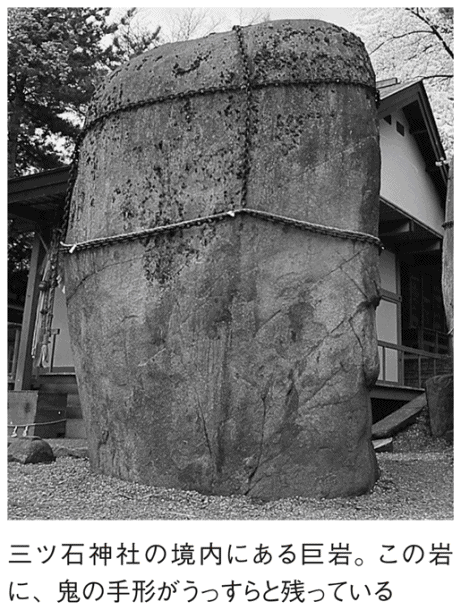
焼津（静岡県焼津市）
ヤマトタケルノミコトが焼き払って敵を倒した地
「焼津」という地名は、『古事記』や『日本書紀』にも登場する由緒ある地名である。
ヤマトタケルノミコトが東征の途中、ある地で賊に襲われた。そして、焼き殺されそうになったときに、草をなぎ倒して火を放ち、難を逃れたという。この言い伝えから、この土地を「焼津」と呼ぶようになった。
『万葉集』第三巻の詩などからわかっているのは、奈良時代には、現在の焼津の地域よりも、ずいぶん広い範囲を指して焼津といっており、かなりの発達した集落があったということがわかっている。また、鎌倉から室町時代にかけては守護の支配を受け、安土桃山時代には、武田・今川、武田・徳川の合戦の最前線でもあった。
そのため、市内には石脇、方ノ上、花沢などの城跡がいまでも点在しているし、焼津神社は、ヤマトタケル東征の事跡を伝える神社としても有名なのである。
金沢（石川県金沢市）
砂金の多く出る場所でイモを洗っていた「いもほり藤五郎」
「金沢」には、いもほり藤五郎という人物の伝説がある。
その昔、山イモを掘って、それを売って生活していた藤五郎という男がいた。貧しいが心の優しい青年だったという。
藤五郎は、大和国の和子という長者の娘と結婚した。それゆえ、お金に不自由することはなかったから、心の優しい藤五郎は、お金を里の貧しい人々に分け与えていた。
ある日、藤五郎は大事にしているイモ畑に舞い降りた、悪さをする雁に向かって、和子のもっていた金貨を投げつけた。和子は、金貨は大切なものだということを藤五郎に話してきかせると、藤五郎はこう言った。
「こんなものは、イモを掘ったらいくらでもイモにくっついてくる」
そう言われて、いつも藤五郎がイモを洗っているところに行ってみると、砂金がたくさん落ちていたのだという。
この話の舞台は、金洗沢といわれているが、ここはいまでも兼六園の横にあり、「金沢」の地名の由来となったと書かれている。
そして、かの藤五郎は、イモにくっついていた砂金によって、さらに長者になったということだ。
生野（大阪府大阪市）
聖徳太子にわが子の危機を救ってもらった生野長者
大阪市生野区の「生野」という地名の由来は、いまからはるか昔、約千四百年前の推古天皇の時代にさかのぼる。
この地に、生野長者という裕福な長者がいたが、なかなか子宝に恵まれなかった。
長者はあちこちの神社に祈願をして、ようやく子どもを授かることができたのだった。
だが、その子どもはなぜか言葉を話すことができなかった。長者は思い悩み、四天王寺にお参りをして聖徳太子にすがったところ、太子は子どもに向かってこのように言った。
「私が前世でお前に預けた三つの仏舎利を、いま返しなさい」
その子どもは前世で、太子の侍童だったのだ。子どもは太子に言われたとおり、三粒の仏舎利を吐いて太子に奉ると、無事、言葉を話すようになったという。
そして、聖徳太子はその仏舎利の一つを法隆寺に、もう一つを四天王寺に納め、そしてもう一つを長者に与えた。
長者は大いに喜んで、「舎利寺」と名付けてこの仏舎利を奉ったといわれている。
この伝説にちなんで、一八八九（明治二十二）年には、国分村・舎利寺村・林寺村・林寺新家村・田島村が合併して「生野村」ができ、そして一九四二（昭和十七）年には「生野区」となることが決まって、翌年の四月に東成区から分かれて生野区が誕生したのである。
入間（埼玉県）
太陽に化けた魔物を矢で射た天子様の「射留魔伝説」
埼玉県の「入間郡」「入間川」「入間」という地名には、魔物にまつわる伝説が関わっている。
ある日、突然、空に太陽が二つ昇り、昼となく夜となく世界を照らしはじめた。
草木が枯れ、田畑の作物もとれなくなって人々が困っていると、天子様（人々を治める者）が「天に太陽が二つあるわけはない。どちらかが魔物なのだから、誰か、この矢で退治してしまえ」と言った。
そこで、弓の名手が、太陽を追って武蔵国までやってきた。ちょうど見晴らしのよい入間川の小高い丘から、怪しいと思うほうの太陽を見事射落とした。魔物はたちまち光を失い、黒い雲とともに三本足の烏になって落ちてきたという。
そして、この魔物が落ちたところがある真東小学校のあたりを「天倒山」、魔物の血で川ができて「逆川」、太陽を討ったことから「日討」（川越市日東）など、いくつかの地名もできた。
この伝説は、魔物を矢で射落とすことで終わるので、このあたり一帯を「射留魔」（現在の表記は入間）と呼ぶようになったという。
天童（山形県天童市）
二人の童子が天から楽器を演奏しながらやってきたという伝説
山形県天童市に伝わる「天童伝説」は以下のようなものである。
昔むかし、春うららかなある日、舞鶴山の山頂で僧侶が念仏を唱えていると、突然、笛や太鼓の音などとともに、美しい「キヨ」という楽器を奏しながら、天から二人の童子が舞い降りてきた。
一人は護衛童子、もう一人は摩竭童子と名乗り、
「われは自在天（仏）の使者にして、貴僧はこの山頂の大士（菩薩）なり、よろしく一宇（お堂）を建立し、一切衆生を念仏すべし」
と言い残して消えたという。
それ以来、僧侶は二人が降り立った霊峰を天童山と名付け、それが、このあたりの地名になったということである。
また、この伝説とはべつに、有名な慈覚大師円仁が命名したという話もあるし、「北畠天童丸」という人物が住んでいたから、天童という名前が付いたという説もある。
なお、最近では、慈覚大師円仁が創建した山寺に招かれた舞楽団が、「天から童子が降りてきた」という伝説の基になっているのではないかという新しい意見もあるようだ。
羽衣石山（島根県湯梨浜町）
天女が羽衣を脱いで水浴びをしていた山
天女が天界から降臨した場所といわれる、島根県東伯郡湯梨浜町の「羽衣石山」。そのときに、天女が天の羽衣を置いたという大岩が山頂近くにあり、それを「羽衣石」「天女の影向石」などというのだが、その岩の上には小さな天女の足跡が付いているのだ。
伝説の物語は、次のとおりだ。
その昔、一人の百姓がこの山頂近くを通りかかると、不思議な香りがただよってきた。そこであたりを探すと、高さが五丈（約一五メートル）ほどもある大岩の上に、美しい衣が干してある。すると、岩の近くの湧き水で、美しい女性が水浴びをしていた。そこで百姓は、「あれは天女に違いない」と、水浴びをしているすきに岩の上にある羽衣をそっと隠してしまった。水から上がった天女は、羽衣がないのでびっくり。天に帰れないので衣を返してと男に言ったが、もう後の祭り。願いはかなわず男と結婚することになった。
その後、天女と百姓は二人の娘をもうけてふつうに暮らしていたが、百姓は絶対に羽衣の隠し場所を教えなかった。だが、成長した娘が羽衣の隠し場所を天女に教えてしまい、天女はその羽衣を見つけて袖を通したとたん、もとの天女に戻って天へ帰ってしまった。
このとき、母親が天界へ帰ってしまったことを嘆き悲しんだ二人の娘たちが、天女が太鼓や笛の音を好きだったことを思い出して、近くの小高い山から一生懸命に太鼓や笛を打ち鳴らして天女を呼んだという。このことから、近くの山に「打吹山」という名前が付いたともいわれている。
三輪山（奈良県桜井市）
最古の山名説話といわれる、活玉依毘売の神婚説話
「三輪山」は、奈良盆地東南部、大和高原の西南端にある。盆地側から見るとキレイな円錐形をしており、桧や杉の老木が生い茂る昔ながらの山だ。
また、真穂御諸山の神奈備（神体山）とする大神神社は、「大和一宮」として古代信仰をいまも根強く伝えている。
『古事記』の崇神天皇段には、意富多多泥古と活玉依毘売の神婚説話がみえ、三輪山に残った三勾の麻糸にちなみ、「その地に名付けて美和といふなり」とある。
つまり、大和平野の東方にある美しい真穂三輪山は、「倭成す大物主神」の聖域である。ミワの地名は、山の西部を曲がりながら流れている初瀬川から来る「水曲」の地域で、『古事記』には「水垣」とある。
古代の人々は、三輪山を神山（御諸山・神奈備山）として大切にした。三輪山の谷間に自生する笹百合を三枝といい、付近を佐葦河と名付けたこともあるようだが、古代人は自然に関心が高く、「神山」と書いて「みわやま」と読んだという。
なお、三輪山を詠んだ歌は数多くあり、「三輪山を然も隠すか雲だにも 心あらなも隠さふべしや」（額田王）、「三輪山をしかもかくすか春霞 人に知られぬ花や咲くらん」（紀貫之）、「心こそゆくへも知らね三輪の山 杉のこずゑのゆふぐれの空」（慈円）などのような歌がある。
烏山（栃木県那須烏山市）
鉄壁の城づくりに貢献した一羽のカラス
その昔、那須の殿様で、資之という人物がいた。ところが、その弟の資重は、兄の資之よりも評判がよかったので、兄はおもしろくなかった。
兄が自分を殺してしまおうと考えていることを知った弟は、住んでいた城を捨て、「烏山」の小さな稲積という城に逃げ込んだ。
ところが、弟を慕って家来たちがどんどん集まってきてしまい、どうしても大きな城が必要になった。どうせなら頑丈な城をということで、那珂川の東の山につくることにした。
いよいよ城づくりの準備をしているときだった。一羽のカラスがどこからか飛んできて、金の幣束をくわえ、川を越して西のいちばん高い山の頂上にその幣束を落とした。
これを見て弟は、「カラスは熊野の権現様のお使いというから、そのお告げではないか」と、一四一八（応永二十五）年、早速その山に城を築いた。
これにより、城を烏山城と名付けた。その後、何度か戦いはあったものの、一度も敵が足を踏み入れることはなかったという。
そして、この有名な伝説から、「烏山」という地名ができたといわれている。
三厩（青森県外ヶ浜町）
「みんまや」は義経が北海道に逃れたときに乗った三頭の龍馬
青森県東津軽郡にある「三厩」という地名には、源義経の伝説が関わっているという。
いまからさかのぼること八百年ほど前、数々の手柄を立てた義経も、とうとう兄である頼朝にまで疎まれて都落ちし、岩手県の衣川で最期を遂げた。だが、別の伝説も残っているのだ。
じつはさらに北上して逃げのび、津軽海峡を渡って北海道まで行ったという説だ。
とくにこの三厩は、地形的にも北海道に渡るための本州最北端だったため、その伝説によって地名ができたという土地柄なのだ。
それゆえ、義経にまつわる伝説も数多く残っている。
地名の由来に起因するのは「厩石」。北海道へ行くつもりの義経は、荒れる津軽海峡に行く手を阻まれていた。そこで、岩に座って三日三晩祈りつづけた。すると海は静まり、岩の洞穴に三頭の龍馬がつながれているのを見たという。
義経の一行は、その龍馬に乗り、海を渡って北海道に行ったとされ、以来、この場所は、この「三頭の馬」の意味をあらわして「三厩」といわれるようになったという。
そして、義経が三日三晩座っていたとされる石が、「厩石」といわれるようになったのだという。
義経は、北上の際に三厩で風待ちをしたあと、竜飛から蝦夷地へ渡ったということだ。
打出小町（兵庫県芦屋市）
振るだけでなんでも願いが叶う小槌をもつ長者
「打出小町」などという、まるでどんな夢でも叶ってしまいそうな、じつに縁起のいい名前の町がある。しかも、高級住宅街で知られる兵庫県芦屋市にである。やはり「大判小判がザックザク......」の方々が住んでいるのだろうか。
その昔、摂津国兎原郡打出村の隠里という場所に、ある長者が住んでいた。その長者は一つの宝の槌をもっていて、この槌を振ると願いごとがなんでも思いどおりに叶うので、家宝として大切にしていた。この「打出村の願いが叶う小槌」から、打出小町という名前ができたのである。
この町にはほかにも、夜中に地面に耳を付けて音を聞くと、地下の遠くから饗宴の声が聞こえてくるとか、この地で物を拾うと必ず幸福になるなど、さまざまな伝説も存在する。また、この長者の小槌は、芦屋沖に住んでいた竜神がもっていたもので、その竜神が人に化身して聖武天皇に献上した物であるという言い伝えもある。
もともとこの地は、江戸時代から一八八九（明治二十二）年までは「打出村」と呼ばれていたが、一九四四（昭和十九）年に「打出小町」になっている。打出という地名に伝えられてきた伝説を結び付けたというわけだ。
戦後になって「打出親王塚町」「打出春日町」などが、「親王塚町」「春日町」などと簡素化されてしまったことを受け、伝説を残したいという粘り強い地元住民の声から、「打出小町」と名付けられたということだ。
酒々井（千葉県酒々井町）
孝行息子の父親を思う気持ちがもたらした奇跡
千葉県の北部、印旛郡酒々井町に伝わるのは、親孝行の伝説である。
その昔、この地にある印旛沼の近くに、貧しい百姓が住んでいた。家が貧乏な上に、父親は年をとって働くこともできなかったが、この百姓の息子はじつに親孝行で、よく父親の面倒を見ていた。父親はたいへんな酒好きで、息子はわずかのお金のなかから酒を買っては、父を喜ばせるために働いていたという。
ある日、とうとう酒を買う金がなくなり、息子が暗い気持ちで歩いていると、ある井戸のそばから酒の匂いがただよってくる。まさかと思いながらも汲んで飲んでみると、たしかに酒だった。喜んで家にもち帰ると、父親もたいそううまいと言って喜んだ。
こうして、父親にはその井戸から汲んだ酒を渡し、働いた金は生活に使う。それで暮らしはだんだんと豊かになった。
ところが、噂を聞いてこの息子以外の人がその井戸水を汲んでもち帰っても、ただの水。若者の親を思う真心が、天に通じたという話である。
この話が、酒の井戸として知られるようになり、そこで村の名前も「酒々井」となったのである。
近年は東京近郊のベッドタウンとして宅地開発が進んで、一九七〇年代からは人口が増加している。
この町に集まってくる人には、孝行息子が多かったりするのだろうか。
波照間島（沖縄県竹富町）
石垣島に古くから伝わる南方の楽園伝説
「波照間島」は、石垣島から南西に五六キロ、飛行機で約二十分、船で五十分ほどの位置にある。また、この島は北緯二四度なので、南へ少し下ると北回帰線がある。有人島としては日本最南端の島である。
島の名前にある波照間とは、「果てのウルマ（珊瑚礁）」という意味で、島の人々は「ベスマー」と呼ぶ。私たちの島・わが島と誇りをもって呼んでいるのだ。
西側の浜には天然記念物に指定されたミズカンピ（ハマシタン）、周辺一体にはテリハボク（ヤラブ）の群落も見られる。また、フクギも屋敷森として育成されているが、全体的に山や川はなく、隆起珊瑚礁からなる平坦な島である。
この波照間の語源は、前述したとおり「果ての珊瑚礁の島」の意味で、ハテ→果て、ウル→珊瑚、マ→島である。もともとは、石垣島に「ハテウルマ」という楽園が南方に存在するという伝説があって、そこから発生した名前であるらしい。
波照間でも、同じ「ハテウルマ」という楽園がさらに南方にあると思われているそうだから、「波照間＝ハテウルマ」というわけではないようだ。
本州の人々は、石垣島に南の楽園を求め、また、石垣島の人々は最南端にある波照間島に楽園を求める。そして、その波照間島の人々まで、もっと先の見知らぬ南方に楽園を求めているとは、人はどこにいても、〝心の楽園〟を求めてやまぬ生き物なのかもしれない。
猿島（神奈川県横須賀市）
日の遭難の危機を救った白いサル
この「猿島」という地名の由来には、日上人にまつわる伝説が二つあるので、ここで紹介したい。
まず一つ。時は一二五三（建長五）年、日上人が上総（現・千葉県中部）から鎌倉へ船出したところ、急に天候が悪化して船は荒波にもまれてしまった。沈没寸前となったときに日は船首に立ち、海の神様である龍に題目を唱えた。
すると不思議なことに、大きな龍があらわれて、あたりはウソのように静けさを取り戻し、嵐も収まって事なきを得た。そして、日はとある島に流れ着き、そのときにあらわれた白いサルによる導きで、現在の米ヶ浜に無事上陸できたのだった。この説にちなんで、猿島と名付けられたという。
もう一つは、龍の出てこない話である。同年に、前述したのと同じ状況で日上人が鎌倉へ船出したとき、途中でシケにあって船の進む方向がまったくわからなくなってしまった。すると、そこに白いサルがやってきて、船首に立ってこの島へ案内したという。そこから猿島といわれるようになった、というものだ。
その昔、日上人の話が伝説化する前には、猿島は豊島（十島）と呼ばれていた。猿島、笠島、平島、黒島、裸島、三つ島、蛸貝島など、全部で一〇の島があるので十島、これにあて字で縁起を担ぎ、豊かな島と書いて「豊島」としていた。
いまでも現地には豊島小学校があり、その名はしっかりと残っている。
犬島（岡山県岡山市）
菅原道真の愛犬にそっくりな岩に由来
瀬戸内海に浮かぶ犬島は、岡山市宝伝の沖、約二・五キロのところにあり、周囲約四キロ、面積約〇・六平方キロで、人口約一〇〇人。岡山市で唯一の、人の住む島である。
犬島本島と、犬ノ島、沖鼓島、地竹ノ子島、沖竹ノ子島などを含めて、犬島と呼ばれている。
ところでこの島の名前の由来は、べつに犬が多く住んでいるからというわけではない。犬島本島の西には、犬ノ島の犬石明神のご神体があり、これがまさに「犬の形をした巨大な花崗岩」なのである。
これには、菅原道真にまつわる次のような伝説がある。
菅原道真が左遷されて筑紫国（九州の太宰府）へ向かう途中のこと、日暮に嵐にあって島陰に身を寄せていたとき、かすかに犬の吠える声が聞こえてきた。
その声がするほうを見上げてみると、そびえ立つ山の上に、犬の形をした巨岩があった。
それを見た道真は、都にいたときの自分の愛犬を思い浮かべて、身にしみて不思議な縁を感じたという。
まもなく風がおさまって、ふたたび船出の準備をすると、まるで天地にとどろくかのような犬の吠える声がした。この別れを意味するかのような鳴き声は、道真の道中の安全を祈るかのように、いつまでも聞こえつづけていたという。
恋路海岸（石川県能登町）
引き裂かれてしまった若い男女の悲劇
石川県鳳珠郡の能登町には、「恋路海岸」という、じつにロマンティックな地名の海岸がある。
ここが恋路海岸と呼ばれるようになったのは、ある悲恋の伝説があったからなのだという。
その昔、鍋乃という娘が助三郎という若者に命を助けられた。二人は自然と恋仲になり、人目をはばかりつつも逢瀬を繰り返していた。
遠い里から岩づたいに、助三郎は毎晩、鍋乃が灯しているかがり火だけを頼りに通っていた。
そこに、二人の仲をねたむ男があらわれ、鍋乃が立てたかがり火を海の深みに移して、助三郎を溺れさせてしまった。助三郎の死を嘆き悲しんだ鍋乃は、助三郎が亡くなった同じ場所に身を投げて果てた。
そして、二人の恋仲を裂いた男は、自らのあやまちを悔いて僧侶になり、男女の仲をとりもつようになったという。
このことから、悲恋の伝説ながらも、「恋路海岸」という美しい名前になったのである。
この恋路海岸には、内浦の優しい女性的な景色、穏やかに湾曲した砂浜に、真っ赤に塗られた鳥居、そして後方に浮かぶ弁天島などがみられ、景観としてもじつに美しい。また、浜辺の片隅には助三郎と鍋乃の像も建っている。
ここは現在「ラブロード」とも呼ばれ、悲恋伝説とは関係なく、カップルなどがよく訪れる観光エリアにもなっている。
舘岩（福島県舘岩村）
巨人「ダイタンボウ」が蹴っ飛ばしたという岩
福島県南会津郡にあった、舘岩村（合併により消滅）の地名の由来の一つに興味深い伝説がある。
それは、巨人「ダイタンボウ」の伝説だ。その昔、舘岩村に住んでいた巨人ダイタンボウは、ある日突然あらわれた巨大岩に激怒し、それを力任せに蹴って、大岩の先の部分を吹っ飛ばしたのだという。
そのときに出現したのが現在もある「立岩」で、吹っ飛んで刺さった岩が「逆岩」と伝えられている。
そして、この「立岩」が地名となって、「舘岩」とあらわすようになったのである。
この舘岩村は、東北地方の最南端、東北地方と関東地方を隔てる帝釈山脈の麓にあり、その稜線は、栃木県との県境でもある。
四季折々の自然の表情が美しく、総面積二六三・五五平方キロ、標高六五〇～二〇六〇メートル、村域の約九〇パーセントを急傾斜地で占めているという山村である。
たしかに、この舘岩村名物「立岩」は、急な傾斜地に、樹木を切り分けるようにしてそびえ立ち、伝説の風合いそのままに、何かに削り取られたような雰囲気をかもし出している。
「伝説だから......」「つくり話だから」と思わずに、昔むかし、ダイタンボウという巨人がいて、キリキリと怒って大岩を思いっきり蹴り飛ばしている様子を想像してみるのも、またおもしろいかもしれない。
おいらん淵（北海道札幌市）
明治末期の遊郭の女郎が身を投げた地
北海道札幌市に、明治末期の遊郭の女郎が身を投げる名所だったという土地がある。札幌の『さっぽろ・ふるさと文化百選』にも選ばれている「おいらん淵」の伝説だ。
一般には、いまでも全国的に名高い歓楽街でもある「すすきの」で、明治の末期、遊郭で働いていた花魁が、その苦しさや哀しさから逃れるために、数多く、崖の上からこの淵に身を投げたことから「おいらん淵」といわれたのだという説が広まっている。
そのほかの説もある。このおいらん淵のある豊平川を、木材の流送に活用していた頃のこと。この淵のあたりは水深の深い難所であった。木材流送の仕事はここを無事に越えると一段落なのだ。
そして、一段落をしたときに、親方が人夫たちに「おいらんとでも遊んでこい」と、その日の働きに金を払って人夫を帰す。そのことから、おいらん淵といわれるようになったという説もある。
いずれにしても、現在の豊平川には木材流送をしたり、自殺の名所になったりするほどの水量がないというが、その昔はたいへん水の量が多く、危険な場所であったようだ。
鴻巣（埼玉県鴻巣市）
大蛇を倒し、村を救ったコウノトリ
埼玉県の鴻巣市。地名を聞いて、すぐイメージされるのはコウノトリだろうが、実際の地名の由来はどうなのだろうか。
かつてこの地に、天邪志国の国府が置かれたことから、「国府の州」が「こくふのしゅう→こくふのす→こうのす」と転じて、その後に「コウノトリ伝説」が出てきたので、あて字として「鴻巣」と表記するようになったということだ。
コウノトリ伝説とは、鴻巣の宮地に小字本宮というところがあり、そこに小さな祠が祀られていたという。
そのそばに天をも突かんばかりの一本の大きな樹が立っていた。
そして、毎日のお供え物を少しでも怠ると、必ず祟りがあるので、村人たちは苦しい生活のなかから、たくさんのお供え物をしなければならなかった。村人たちはこれを、「樹の神」と呼んで畏れるようになった。
あるとき、祠が汚されるという事件が起こると、猛烈な日照りがこの地を襲い、やはり祟りだと騒がれた。
そのようななか、そこに一羽のコウノトリが飛んできて、樹の神のてっぺんに巣をつくって卵を産んだ。大蛇があらわれて卵を飲み込もうとしても、コウノトリはくちばしで頭を突き刺して退治する。
すると、それまでの日照りも収まり、なんと雨まで降り出したのだった。
以来、この「樹の神」が祟りをもたらすことはなくなり、村人はコウノトリに感謝して、ここを「鴻の宮神社」と呼ぶようになった。
それから、ここの地名は鴻巣と呼ばれるようになったのである。
星原（愛媛県新居浜市）
隕石を天から降ってきたものとして崇める「星原」
愛媛県新居浜市の「星原」という町に、「眞星神社」と呼ばれる小さな神社がある。「星の宮神社」ともいわれるこの神社の境内には、その名の由来に関する、こんな看板が立っている。
「昔この地に隕石が落下し、里人は一小祠を建立して星の宮、眞星神社、星原神社等と呼称して信仰し......」
つまり簡単にいうと、天空から落ちてきたとされる隕石が、この神社のご神体としてここに祀られているというのだ。
そのことから、「星の落ちてきた草原」という意味で、星原という地名ができたのである。
愛媛県には、この星原以外にも「星」にちなんだ名前の地名が多く、西条市小松町にも「星の森峠」という場所がある。これは、その昔この場所で、弘法大師が星供養をおこなったことからきているのだという。当時、中国や日本では、人は生まれた年の干支によって北斗七星の七つの星のどれかに属し、寿命や運命はその星が握っていると信じられていた。
そのため、自分の属する星を祀って供養をする慣わしがあり、それを星供養といったのである。
しかし、これだけ星にまつわる逸話の多い愛媛県だが、残念ながら、実際に化学分析で隕石であると認められたものは一つもないということだ。
富津（千葉県富津市）
「布流津」に由来。布とはヤマトタケルノミコトの妻の布
千葉県にある富津市。千葉県の南部、房総半島の中西部に位置し、東京湾側千葉海岸線の木更津、君津などと並ぶ、自然に恵まれた海岸をもつ都市である。
その地名の由来は「布流津」で、「布が海岸に流れ着いた」という意味の言葉からきているのだという。
名前の由来となった、流れ着いたその布は、ヤマトタケルノミコトの妻、弟橘姫の服の一部だったという。ヤマトタケルノミコトが東征した際、東京湾で嵐にあった。そこで、海神の怒りを鎮めるために、妻の弟橘姫が海に身を投げた。
すると、ウソのように嵐はおさまり、海は穏やかになったという。
富津市だけでなく、近隣の四市では、かつて一つの君津郡だったこともあって合併の話もある。この富津、君津、袖ヶ浦、木更津の四市には、名前の由来にすべて、ヤマトタケルノミコトの伝説が関わっている、という共通点がある。
木更津と君津は、ヤマトタケルノミコトが妻をしのんで「君よ去らないでくれ」といった言葉から、君不去（きみさらず）が二つの地名に分かれたという由来。袖ヶ浦は、富津市の布流津（布が流れ着いた海岸）と同じく、弟橘姫の「袖」が流れ着いたとして、その名が付けられたそうだ。
一見、なんの関連性もないと思える四つの都市名の由来が、一つの伝説に基づいているのは、じつに興味深いことといえる。
下松（山口県下松市）
太子の来訪を知らせる星が降った「かなえ松」
山口県の南東部にある「下松」という地は、その昔、青柳浦と呼ばれていた。
『大内氏実録』の下松妙見縁起によると、女帝・推古天皇の時代、五九五年九月十八日に、都濃郡鷲頭庄青柳浦の老松に大きな星が降りかかり、七日七夜の間、目もくらむほどに光り輝いていた。
里の人が「これはただごとではない」とおそれていると、占い師に神がかりしてお告げがあり、
「われは北辰の精である。いまより三年の後、異国の太子が来朝される、その守護のため、ここに天降った」
と告げる。
そこで、里の人々は急いで社を建て、その星を「北辰尊星王大菩薩」として祀り、里の役人はこれを時の天皇に伝えたという。
そして、この北辰の星が、松の木に降ったということから、それまでの「青柳浦」という地名を「降松」と改め、その後に、現在の「下松」と表記するようになったのだという。
ところで、このときの「異国の太子」というのは、百済王聖明の第三子・琳聖太子といい、大内氏はその子孫であると伝えられている。
現在の下松駅北口には、「かなえの松」という一本の松が立っている。この松は、下松という地名の起源となった「降臨の松」だといわれている。そして、その木の下には、降臨の星を祀ってある金輪社がある。
なお、下松という地名のもう一つの由来には、百済津から、「くだまつ」という音に転訛したのだという説もあるようだ。
牛窓（岡山県瀬戸内市）
語源は「牛転」。皇后に圧倒されて転んだ牛鬼
「牛窓」という地名の由来は、神功皇后にまつわる伝説にある。
その昔、神功皇后が乗った船が大和へ帰る途中のこと。牛窓の瀬戸を通過するときに、その皇后の威光に驚いた牛鬼が転んだのだという。
それ以来、この土地は「牛転」と呼ばれるようになり、それがのちに、「うしまろび→うしまどび→うしまど」と訛ったのではないかといわれている。
この牛窓、現在も港には、クルージングのできる立派なヨットやクルーザーがひしめいており、瀬戸内海のなかでも活気のある良港だ。江戸時代から、西海航路を好んだ参勤交代の大名たちが、風待ち、潮待ちに使った町でもある。
また、鎖国下の江戸時代にあって、唯一朝鮮とのあいだで行き来があった朝鮮通信使の一行が来港する海の玄関口でもあった。
海や魚、港や船などにちなんだ名前ではない「牛窓」という名前はどこか不つりあいな気もするが、伝説のなかに船が出てくるあたりが、この港町らしくもあるといえよう。
高原町（宮崎県西諸県郡）
ニニギノミコトが降り立った、天孫降臨の地
ここを日本発祥の地とする説もある、かつて神々が集った高天原が転じて「高原」になったというありがたい地名。さすがというか、じつに数多くの天孫降臨伝説をもっている町だ。
アマテラスオオミカミが、子孫であるニニギノミコトを地上の国へとつかわして、天孫による支配を確立するきっかけとなったのが「天孫降臨」である。その場所のことを『古事記』では、「筑紫（九州）の日向の高千穂のくじふる峰」と伝えており、そこが高原町である。それが、〝日本の発祥の地〟とされる理由だ。念のため付け加えると、天孫降臨の地としては、同じ宮崎県内でも西臼杵郡高千穂町であるとする説もある。
また、ニニギノミコトが降臨したときにできた「天の逆鉾」とは、霧島連峰の主峰・高千穂峰に存在している大きな鉾。すでに江戸時代にはあったというのだが、切っ先が三叉に分かれて天を指している。これは、降臨したニニギノミコトが地上に降りたとき、その鉾で掻き探って逆さに立てたものだとされている。
嬉野（佐賀県嬉野市）
「嬉しい」と神功皇后を喜ばせたという温泉
佐賀県嬉野市は、嬉野川の清流沿いにある、高温で湯量の豊富な源泉のある温泉地である。嬉野温泉といえば、九州でも名高い温泉郷で、美肌効果抜群という泉質は、浸かるだけで肌がツルツルになると、とくに女性に人気だ。
そのためか、その地名の由来にも、古代のある女性が深く関わっているらしい。
地名の伝説の主は、神功皇后。その昔、神功皇后が戦の帰りの道中にこの温泉郷を訪れたところ、川のなかに羽を浸して休んでいた白鶴が、その後に元気に飛び立つ様子を見て驚いたという。
そこで、戦に疲れている自軍の兵士たちに入るよう伝えたところ、そこには温泉が湧いていて、たちまち兵士たちの傷や疲れが癒えたのである。
そのことをとても喜んだ神功皇后は、「あな、うれしの」と言ったという。この言葉が、「嬉野」という地名の起源であるという。
嬉野町は、一九五五（昭和三十）年に吉田村と合併し、さらに一九六三（昭和三十八）年には塩田町の一部を編入して地域が広がった。現在では、「うれしのほほん」をキャッチフレーズに、嬉野温泉を全国にアピールしている。
博奕岬（京都府舞鶴市）
竜神様とクジラ大王が「白黒勝負」をした岬
京都府の舞鶴湾口の東部にある岬を「博奕岬」というが、その名前の由来には、ある変わった伝説がある。
その昔、竜神様とクジラ大王が出会ったときの話。
両者とも、自分がこの世でいちばん強いと思っていたため、それぞれに自慢話をはじめてしまった。
クジラ大王は「俺は世界中の海を泳いでいる、深い海でも潜れるし、俺より大きい魚はいないんだ」と言い、竜神様は「私は大空を高く飛べるし、速さだって誰にも負けない」と言う。
どちらも自慢の種は尽きず、とうとう実際に勝負をして決着を付けることになった。
ただ、竜神様は女性なので、力比べでは、やはり分が悪い。だから、知恵比べをしようということになった。
そこで、近くの浜辺に転がっていた黒と白の石を使って、囲碁のような勝負をしたという。
残念ながら、そのときの勝ち負けは伝説にはないのでわからないのだが、このときから、この岬を博奕岬と呼ぶようになったのだという。
この伝説のとおり、この近くの瀬崎の海岸には、真んなかで線を引いたように、白と黒の石を分けて置いてある。白のほうが花崗岩でできた石で、黒のほうが輝緑岩でできた石なのだそうだ。
犬若（千葉県銚子市）
主人を慕って岩になった、義経の愛犬「若丸」
千葉県銚子市にある「犬若」。この地名は、一九三八（昭和十三）年から現在の名称になったが、もともとは銚子市高神の一部だった。
その昔、犬吠埼の南端には、「犬岩」と「若岩」という犬の形をした岩があった。地名の由来はその岩に関する伝説に深く関わっている。
伝説は牛若丸こと、源義経のもの。奥州平泉への逃避行の際、若丸という名の犬を連れていた。義経一行が銚子に滞在中に、その若丸が平家の亡霊にとりつかれ、一緒に旅に連れていくことができなくなってしまった。
結局、義経は、泣く泣く愛犬を銚子に残して去った。すると、海岸に残されることになった若丸は主人を慕って七日七晩吠えつづけたあと、そのまま力尽きて、岩になってしまったという。
犬岩と犬の名前・若丸を起源として、「犬若」となったということである。
実際に犬若にあるその岩は、柴犬のように、耳がピンと立っており、顔のあたりもちゃんと犬の形になっている。
なお、現存するものは「犬岩」である。近年の築港工事の前には、もう一つの「若岩」もあったのだが、いまはもうない。
八尾（大阪府八尾市）
美しい声でさえずる八ツ尾のウグイス
大阪府中部にあり、西側を大阪市に隣接する八尾市。同地の名前の由来にも、さまざまな伝説がある。
その昔、このあたりに西郷（現・山城町）という地があった。そこには一羽のウグイスが住んでいて、毎朝飛んできては、一本の木に止まって一生懸命さえずっている。
その声がたいへん美しく、趣深いので、これを聞く人はたいへんな感動をおぼえていた。
ただ、このウグイスの尾羽は、珍しくも八枚あったので、いつしか「美しく鳴く八ツ尾のウグイスがいる」と評判になっていった。
そこで、誰とはなしに、この木のあるあたりを「八尾木」と呼ぶようになったのだという。
その後、長い年月を経て、そのウグイスはいなくなってしまったが、八尾木という地名が「八尾」という形になり、このあたりの村を八尾というようになったようだ。
また、そのほかの説では、弓削道鏡が、八尾に西の京（由義宮）を造営するため、大和川の洪水を防ぐ堤をつくった。
このときの工事で打ち込んだ杭が、数え切れないほどたくさん、つまり「八百」だったことから、それが転じて八尾になったという話もあるようだ。
【おもな参考文献・取材先】
『日本地名大百科』浮田典良ほか監、『コンパクト版 日本地名百科事典』浮田典良ほか監（小学館）／『日本地名ルーツ辞典 歴史と文化を探る』池田末則・丹羽基二監（創拓社）／『奈良』永島福太郎（吉川弘文館）／『京都の地名検証 風土・歴史・文化をよむ』京都地名研究会編（勉誠出版）／『角川日本地名大辞典』、『堺の歴史 都市自治の源流』朝尾直弘ほか（角川書店）／『ひょうご全史 ふるさと７万年の旅（上）』神戸新聞「兵庫学」取材班編、『姫路の町名』播磨地名研究会編著（神戸新聞総合出版センター）／『滋賀県百科事典』滋賀県百科事典刊行会（大和書房）／『日本地理がわかる事典』浅井建爾、『川を知る事典』鈴木理生（日本実業出版社）／『東京の地名由来事典 地図にないたのしみ発見』（婦人画報社）／『京都なるほど事典』清水さとし（実業之日本社）／『山の名前で読み解く日本史』谷有二（青春出版社）／『ふるさとを歩く』阪部五三夫、『久御山町史 第１巻』久御山町史編纂委員会編（久御山町郷土史会）／『吉野川事典』とくしま地域政策研究所編（農山漁村文化協会）／『調べよう日本の伝統工業４ 中部の伝統工業』北俊夫監（国土社）／『ふるさとの伝統産業７ 土と炎の歴史をきざむ伝統産業 中部地方』小出隆司（太平出版社）／『静岡県の不思議事典』小和田哲男編、『京都府の不思議事典』井本伸廣・山嵜泰正編、『福岡県の不思議事典』松原信之編、『江戸東京坂道辞典 コンパクト版』石川悌二、『日本列島なぞふしぎ旅・中国四国編』山本鉱太郎（新人物往来社）／『鎌倉の地名由来辞典』三浦勝男編、『京都の地名由来辞典』源城政好・下坂守編、『東京の地名由来辞典』竹内誠編、『新幹線の謎と不思議』梅原淳（東京堂出版）／『新潟県地名考』五十嵐秀太郎（恒文社）／『大阪学』大谷晃一（経営書院）／『長崎 歴史の旅』外山幹夫（朝日新聞社）／『歴史の島 旅情の島』鈴木亨（東洋書院）／『コンサイス 日本地名事典［第４版］』谷岡武雄・山口恵一郎監（三省堂）／『東京の地理再発見 上』豊田薫（地歴社）／『新宿区の歴史』新宿の歴史を語る会（名著出版）／『車窓から歴史が見える』楠戸義昭（祥伝社）／『地図に刻まれた歴史』平凡社地方資料センター編著（平凡社）／『大阪市の歴史』大阪市史編纂所編（創元社）／『日本の島事典』菅田正昭編著（三交社）／『下関 その歴史を訪ねて』清水唯夫（山口銀行）／『もりおかの地名』盛岡市編（熊谷印刷出版部）／『古地図に見る かごしまの町』豊増哲雄（春苑堂出版）／『埋もれた錦江湾の語源の謎（２）』渡部恒夫（鹿児島経大論集 第34巻第４号）／『青ヶ島島史』小林亥一（青ヶ島村役場）／『日本山岳ルーツ大辞典』池田末則監・村石利夫編著（竹書房）／『日本を知る 日本アルプスと上高地』市川健夫（大巧社）／『日本アルプス 見立ての文化史』宮下啓三（みすず書房）／『壊れゆく景観 消えてゆく日本の名所』川村晃生・浅見和彦（慶應義塾大学出版会）／『地名の魅力』谷川彰英（白水社）／『安曇野 花と清流の旅』山本建三ほか（講談社）／『上高地ものがたり』浅野孝一（新潮社）／『四万十 川がたり』野村春松語り・蟹江節子聞き書き（山と渓谷社）／『屋久島の時間（とき）』星川淳（工作舎）／『島の名前 日本編』中村庸夫（東京書籍）
各市町村ホームページ等
淡路文化資料館・阿南市史編纂室・指宿市観光協会・帯広市役所・京都歴史資料館・倉吉市役所・埼玉県立文書館・杉並区役所・宝塚市役所・竹富島観光協会・千歳市役所・天童市役所・舞鶴市教育委員会・港区立港郷土資料館・三村役場・目黒区役所
【写真提供】
雨晴観光協会・京丹後市役所秘書広報広聴課・上山市商工観光課・知立市歴史民俗資料館・石巻市産業部商工観光課・長崎市観光部さるく観光推進課・ミキモト真珠島・盛岡市市長公室広聴広報課
著者紹介
日本博学倶楽部（にほんはくがくくらぶ）
歴史上のできごとから、さまざまな文化・情報、暮らしの知恵まで幅広く調査・研究し、発表することを目的とした集団。
主な著作に、『「県民性」なるほど雑学事典』『「関東」と「関西」こんなに違う事典』『「歴史」の意外な結末』『雑学大学』『世の中の「ウラ事情」はこうなっている』『歴史の意外な「ウラ事情」』『雑学博物館』『歴史の「決定的瞬間」』『歴史を動かした意外な人間関係』『まだまだあった！ 世の中の「ウラ事情」』『戦国武将・あの人の「その後」』『幕末維新・あの人の「その後」』『日露戦争・あの人の「その後」』『戦国武将「できる男」の意外な結末』（以上、ＰＨＰ文庫）などがある。
日本の地名の意外な由来
著 者：日本博学倶楽部
 Nihon Hakugaku Kurabu
Nihon Hakugaku Kurabu
この電子書籍は『日本の地名の意外な由来』二〇〇七年六月十八日第一版第一刷発行を底本としています。
電子書籍版
発行者：安藤卓
発行所：株式会社ＰＨＰ研究所
本書の無断複写（コピー）は著作権法上での例外を除き、禁じられています。